import numpy as np
import matplotlib.pyplot as plt
from matplotlib.patches import Arc
from sklearn.svm import SVC
plt.rcParams.update({"figure.dpi": 90, "axes.grid": True, "grid.alpha": 0.3,
"axes.spines.top": False, "axes.spines.right": False})
rng = np.random.default_rng(3)
POS, NEG, NORMAL = "C0", "C3", "purple" # class +1 (blue), class -1 (red), the normal vector θ
def scatter_classes(ax, X, y, s=30):
ax.scatter(X[y > 0, 0], X[y > 0, 1], c=POS, marker="o", edgecolor="k", s=s, zorder=3, label="$y=+1$")
ax.scatter(X[y < 0, 0], X[y < 0, 1], c=NEG, marker="s", edgecolor="k", s=s, zorder=3, label="$y=-1$")
def draw_boundary(ax, theta, theta0, lim, margins=True, shade=True):
# f(x) = 0 (solid) and f(x) = ±1 (dashed) for f(x) = θ·x + θ0, on the square lim × lim
g1, g2 = np.meshgrid(np.linspace(*lim, 400), np.linspace(*lim, 400))
F = theta[0] * g1 + theta[1] * g2 + theta0
if shade:
ax.contourf(g1, g2, F, levels=[-1e9, 0, 1e9], colors=[NEG, POS], alpha=0.08)
if margins:
ax.contour(g1, g2, F, levels=[-1, 0, 1], colors="k", linestyles=["--", "-", "--"], linewidths=[1, 2, 1])
else:
ax.contour(g1, g2, F, levels=[0], colors="k", linewidths=2)
ax.set_xlim(lim); ax.set_ylim(lim); ax.set_aspect("equal")
def plot_svm(ax, theta, theta0, X, y, title, lim=(-3.5, 4.5)):
draw_boundary(ax, theta, theta0, lim)
scatter_classes(ax, X, y)
sv = y * (X @ theta + theta0) <= 1 + 1e-3
ax.scatter(X[sv, 0], X[sv, 1], s=180, facecolors="none", edgecolors="k", lw=1.5, zorder=4)
ax.set_title(title + f"\nmargin width 2/‖θ‖ = {2 / np.linalg.norm(theta):.2f}, ringed: μ ≤ 1")05 · Support Vector Classifier
This note builds the support vector machine (SVM) for classification from first principles and then shows how to use it well. It is the reference text for the Support Vector Machines deck: it covers every slide, in more depth, and adds what the slides skip: the optimisation theory behind the dual (weak and strong duality, the KKT conditions, the SMO algorithm), a proof of Mercer’s condition, and a long final part on the assumptions of the method and the practical situations you meet in real projects.
What you need. Vectors, dot products and gradients. From earlier notes: the “average loss + L2 penalty” template and feature scaling (note 03); logistic regression and its log-loss (note 02); cross-validation and the bias–variance trade-off (note 00); one-vs-rest for several classes (note 04). Lagrange multipliers, duality and kernels are built here from scratch.
After this note you can
- derive the margin width \(2/\lVert\boldsymbol{\theta}\rVert\) and the SVM optimisation problem from geometry;
- derive its dual with Lagrange multipliers, prove weak duality, and use the KKT conditions to tell which points are support vectors and to compute the intercept;
- explain the kernel trick, and test whether a function is a valid kernel;
- train an SVM from scratch (dual QP, or sub-gradient descent on the hinge loss) and check it against scikit-learn;
- use SVMs in practice: scale the features, tune \(C\) and \(\gamma\), handle imbalanced classes, get probabilities, and know when to switch to a linear SVM or to logistic regression.
Notation. \(m\) training examples \((\mathbf{x}^{(i)}, y^{(i)})\) with \(\mathbf{x}^{(i)}\in\mathbb{R}^n\) and labels \(y^{(i)}\in\{-1,+1\}\). The score is \(f(\mathbf{x}) = \boldsymbol{\theta}^\top\mathbf{x} + \theta_0\) with weights \(\boldsymbol{\theta}\in\mathbb{R}^n\) and intercept \(\theta_0\). The deck writes the same score as \(\mathbf{w}\cdot\mathbf{x} + b\): our \(\boldsymbol{\theta}\) is its \(\mathbf{w}\) and our \(\theta_0\) is its \(b\), so every formula below becomes the deck’s by renaming (from its slide 12 on, the deck also shortens \(\mathbf{x}^{(i)}, y^{(i)}\) to \(\mathbf{x}_i, y_i\)). Class \(+1\) is drawn as blue circles and class \(-1\) as red squares, as in the slides.
We build the SVM step by step, with a picture at every step:
- a hyperplane splits the space in two, and the sign of \(f(\mathbf{x})\) tells us the side;
- the dot product is a projection, so it measures distances along \(\boldsymbol{\theta}\);
- we use the free scale of \(\boldsymbol{\theta}\) to put the closest points at \(f = \pm 1\);
- projecting those points gives the margin width \(2/\lVert\boldsymbol{\theta}\rVert\);
- maximising it is a convex optimisation problem.
Then we solve it (Lagrange multipliers → the dual → kernels) and show that the whole thing is just regularised hinge loss, the same template as logistic regression.
- Part I · Building the SVM geometrically (sections 1–6)
- Part II · Solving it: Lagrange duality (sections 7–12)
- Part III · Soft margin (sections 13–14)
- Part IV · Kernels (sections 15–18)
- Part V · The same model as a loss (sections 19–20)
- Part VI · More than two classes (section 21)
- Part VII · Using SVMs in practice: assumptions and what to do when… (sections 22–23)
Part I · Building the SVM geometrically
1. Setup and notation
- Labels are \(y^{(i)}\in\{-1, +1\}\) (not 0/1): it makes the formulas symmetric.
- Linear score: \(f(\mathbf{x}) = \boldsymbol{\theta}^\top\mathbf{x} + \theta_0\), prediction \(\hat{y} = \mathrm{sign}(f(\mathbf{x}))\).
- Here \(\boldsymbol{\theta}\in\mathbb{R}^n\) holds only the weights, and the intercept \(\theta_0\) is kept separate, because it must not appear in the margin \(2/\lVert\boldsymbol{\theta}\rVert\) (section 5). This differs from notes 01–03, where \(\theta_0\) was the first entry of \(\boldsymbol{\theta}\) and \(x_0 = 1\).
- Functional margin of example \(i\): \(\;\mu^{(i)} = y^{(i)}f(\mathbf{x}^{(i)}) = y^{(i)}(\boldsymbol{\theta}^\top\mathbf{x}^{(i)} + \theta_0)\). \(\mu^{(i)} > 0\) ⇔ correctly classified (the sign of \(f\) agrees with the label). The larger it is, the more “confidently” correct.
The question of this note, in one picture: many lines separate the data. Which one should we pick? The SVM’s answer: the one that stays as far as possible from the closest points of both classes, the maximum margin line.
# Two separable clouds (used throughout Part I)
m_half = 20
Xa = rng.normal([2, 2], 0.7, (m_half, 2)); Xb = rng.normal([-1, -0.5], 0.7, (m_half, 2))
X = np.r_[Xa, Xb]; y = np.r_[np.ones(m_half), -np.ones(m_half)]
fig, ax = plt.subplots(figsize=(5.5, 5.5))
scatter_classes(ax, X, y)
xs = np.linspace(-3, 4.5, 10)
for a, b, c in [(1, 1, -1.2), (0.3, 1, -0.9), (1.5, 1, -1.3)]: # a x1 + b x2 + c = 0
ax.plot(xs, -(a * xs + c) / b, lw=1.5)
ax.set_xlim(-3, 4.5); ax.set_ylim(-3, 4.5); ax.set_aspect("equal"); ax.legend(loc="lower right")
ax.set_title("Many hyperplanes separate the data. Which one?")
plt.tight_layout(); plt.show()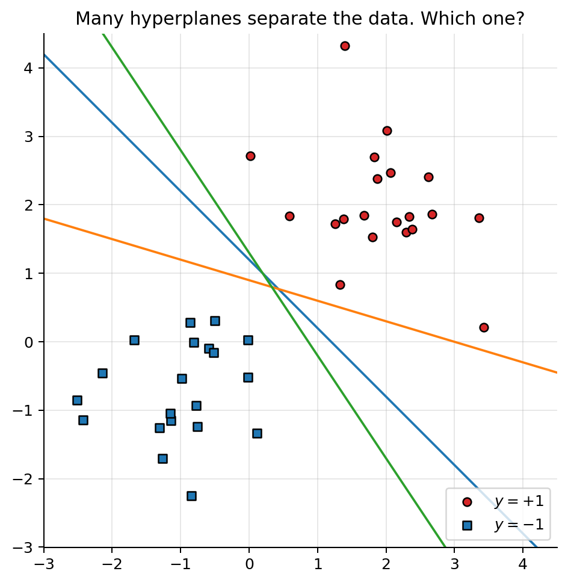
2. Step 1 · The hyperplane and the decision rule
A hyperplane is the set of points where the linear score is zero:
\[ \mathcal{H} = \{\mathbf{x}:\ \boldsymbol{\theta}^\top\mathbf{x} + \theta_0 = 0\}, \qquad\text{in 2-D: }\ \theta_1x_1 + \theta_2x_2 + \theta_0 = 0 . \]
In 2-D this is one equation in two unknowns, so one coordinate is free: the solutions form a line. In \(\mathbb{R}^n\) it is an \((n-1)\)-dimensional “flat” (a plane in 3-D, and so on).
The hyperplane cuts the space in two halves, and the sign of \(f\) tells us which half a point is in:
\[ \hat{y} = \begin{cases} +1 & \text{if } \boldsymbol{\theta}^\top\mathbf{x} + \theta_0 > 0\\ -1 & \text{if } \boldsymbol{\theta}^\top\mathbf{x} + \theta_0 < 0 \end{cases} \]
Worked example (the deck’s, slide 6). \(\boldsymbol{\theta} = (1, 1)\), \(\theta_0 = -3\), i.e. the line \(x_1 + x_2 - 3 = 0\):
| point | \(f(\mathbf{x}) = x_1 + x_2 - 3\) | prediction |
|---|---|---|
| \(\mathbf{x}^{(1)} = (3, 3)\) | \(3 + 3 - 3 = +3\) | \(+1\) |
| \(\mathbf{x}^{(2)} = (0, 0)\) | \(0 + 0 - 3 = -3\) | \(-1\) |
| \((1.5, 1.5)\) | \(1.5 + 1.5 - 3 = 0\) | on the boundary |
In the figure the grey lines are the level sets \(f = \text{const}\). They are all parallel to the boundary, and \(f\) grows in the direction of \(\boldsymbol{\theta}\) (the purple arrow). So the sign of \(f\) gives the side. Does the size \(|f|\) give the distance? Not yet: step 2 shows we have to divide by \(\lVert\boldsymbol{\theta}\rVert\).
theta_ex, theta0_ex = np.array([1.0, 1.0]), -3.0
lim = (-1, 5)
g1, g2 = np.meshgrid(np.linspace(*lim, 400), np.linspace(*lim, 400))
F = theta_ex[0] * g1 + theta_ex[1] * g2 + theta0_ex
fig, ax = plt.subplots(figsize=(6.2, 6.2))
ax.contourf(g1, g2, F, levels=[-1e9, 0, 1e9], colors=[NEG, POS], alpha=0.10)
cs = ax.contour(g1, g2, F, levels=np.arange(-4, 7), colors="gray", linewidths=0.6)
ax.clabel(cs, fmt="f=%d", fontsize=7)
ax.contour(g1, g2, F, levels=[0], colors="k", linewidths=2.5)
ax.annotate("", xy=(3.5, 1.5), xytext=(2.5, 0.5), arrowprops=dict(arrowstyle="-|>", color=NORMAL, lw=2.5))
ax.text(3.55, 1.2, r"$\boldsymbol{\theta}=(1,1)$", color=NORMAL, fontsize=12)
ax.text(0.2, 3.1, r"$x_1 + x_2 - 3 = 0$", rotation=-45, fontsize=11)
for p, c, off in [((3, 3), POS, (10, 5)), ((0, 0), NEG, (10, 5)), ((1.5, 1.5), "w", (-120, -30))]:
f = theta_ex @ p + theta0_ex
pred = "+1" if f > 0 else ("−1" if f < 0 else "boundary")
ax.scatter(*p, s=120, c=c, edgecolor="k", zorder=5)
ax.annotate(f"x = ({p[0]:g}, {p[1]:g})\nf = {f:+g} → ŷ = {pred}".replace("+0 ", "0 "), p, xytext=off, textcoords="offset points",
fontsize=10, bbox=dict(boxstyle="round", fc="w", alpha=0.9))
ax.text(3.6, 4.6, "f > 0 : ŷ = +1", color=POS, fontsize=11, weight="bold")
ax.text(-0.9, -0.8, "f < 0 : ŷ = −1", color=NEG, fontsize=11, weight="bold")
ax.set_xlim(lim); ax.set_ylim(lim); ax.set_aspect("equal"); ax.set_xlabel("$x_1$"); ax.set_ylabel("$x_2$")
ax.set_title("Step 1: the boundary is f = 0, the side is the sign of f")
plt.tight_layout(); plt.show()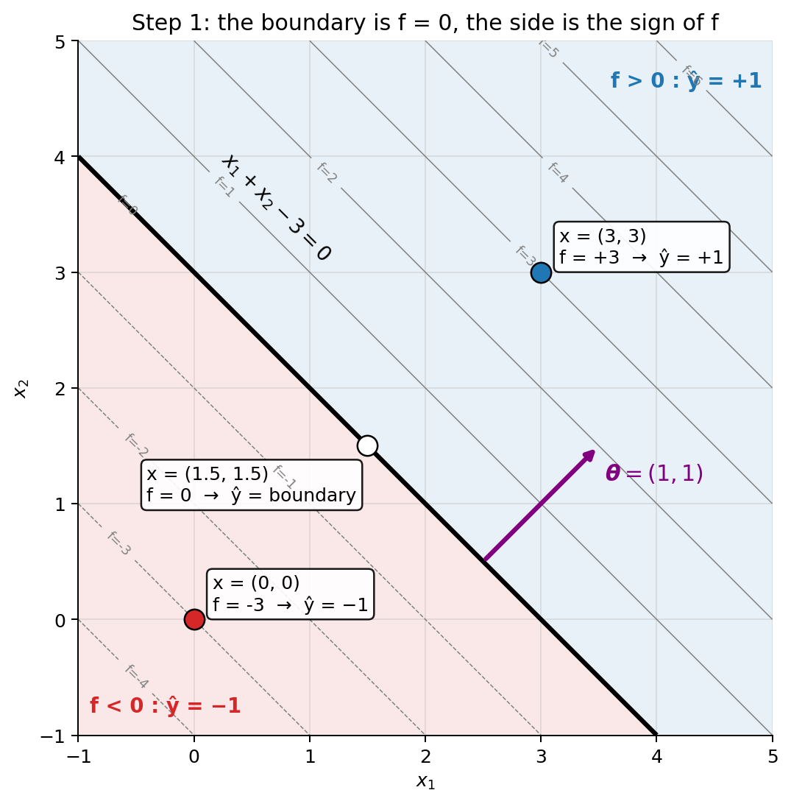
3. Step 2 · The dot product is a projection
The dot product has two equivalent forms:
\[ \boldsymbol{\theta}^\top\mathbf{x} = \sum_{j=1}^n\theta_jx_j = \lVert\boldsymbol{\theta}\rVert\,\lVert\mathbf{x}\rVert\cos\alpha, \qquad \lVert\boldsymbol{\theta}\rVert = \sqrt{\textstyle\sum_j\theta_j^2}, \]
where \(\alpha\) is the angle between the two vectors. \(\lVert\mathbf{x}\rVert\cos\alpha\) is the length of the shadow of \(\mathbf{x}\) on the direction of \(\boldsymbol{\theta}\) (left figure). To read off that length directly we normalise \(\boldsymbol{\theta}\) to the unit vector \(\hat{\boldsymbol{\theta}} = \boldsymbol{\theta}/\lVert\boldsymbol{\theta}\rVert\):
\[ \text{shadow of } \mathbf{x} \text{ on } \boldsymbol{\theta} \;=\; \hat{\boldsymbol{\theta}}^\top\mathbf{x} \;=\; \frac{\boldsymbol{\theta}^\top\mathbf{x}}{\lVert\boldsymbol{\theta}\rVert}. \]
Example (the vectors of slide 7): \(\boldsymbol{\theta} = (2, 1)\) and \(\mathbf{x} = (0.6, 2.6)\). Then \(\boldsymbol{\theta}^\top\mathbf{x} = 1.2 + 2.6 = 3.8\), \(\lVert\boldsymbol{\theta}\rVert = \sqrt5 = 2.236\), and the shadow is \(3.8/2.236 = 1.70\).
Now rewrite the score with it: \(f(\mathbf{x}) = \lVert\boldsymbol{\theta}\rVert\big(\hat{\boldsymbol{\theta}}^\top\mathbf{x} + \theta_0/\lVert\boldsymbol{\theta}\rVert\big)\). Two consequences (right figure):
(a) What the hyperplane is. \(f(\mathbf{x}) = 0\) ⇔ \(\hat{\boldsymbol{\theta}}^\top\mathbf{x} = -\theta_0/\lVert\boldsymbol{\theta}\rVert\). The hyperplane is the set of all points whose shadow on \(\boldsymbol{\theta}\) has the same length \(-\theta_0/\lVert\boldsymbol{\theta}\rVert\). So:
- \(\boldsymbol{\theta}\) is perpendicular to the hyperplane (all its points drop onto the same spot of the \(\boldsymbol{\theta}\) axis);
- the hyperplane sits at distance \(|\theta_0|/\lVert\boldsymbol{\theta}\rVert\) from the origin. \(\theta_0\) only slides it along \(\boldsymbol{\theta}\) (this is the \(-b/\lVert\mathbf{w}\rVert\) of the slides).
(b) Distance from a point to the hyperplane. Distances along \(\boldsymbol{\theta}\) are differences of shadows:
\[ r(\mathbf{x}) = \hat{\boldsymbol{\theta}}^\top\mathbf{x} - \Big(-\frac{\theta_0}{\lVert\boldsymbol{\theta}\rVert}\Big) \quad\Longrightarrow\quad \boxed{r(\mathbf{x}) = \frac{\boldsymbol{\theta}^\top\mathbf{x} + \theta_0}{\lVert\boldsymbol{\theta}\rVert} = \frac{f(\mathbf{x})}{\lVert\boldsymbol{\theta}\rVert}} \]
\(r\) is signed: positive on the side \(\boldsymbol{\theta}\) points to. That answers step 1: \(f\) is the distance times \(\lVert\boldsymbol{\theta}\rVert\).
Example. \(\boldsymbol{\theta} = (1,1)\), \(\theta_0 = -3\), \(\mathbf{x} = (4,2)\): \(r = (4 + 2 - 3)/\sqrt2 = 3/\sqrt2 = 2.12\). Check: the closest point of the line is \((2.5, 0.5)\), and \(\lVert(4,2)-(2.5,0.5)\rVert = \sqrt{1.5^2+1.5^2} = 2.12\) ✓.
For a training point, multiplying by the label gives the geometric margin (its unsigned distance, if it is correctly classified): \[ \gamma^{(i)} = \frac{y^{(i)}(\boldsymbol{\theta}^\top\mathbf{x}^{(i)} + \theta_0)}{\lVert\boldsymbol{\theta}\rVert} = \frac{\mu^{(i)}}{\lVert\boldsymbol{\theta}\rVert}. \]
fig, axes = plt.subplots(1, 2, figsize=(13, 6.2))
arrow = lambda ax, tip, tail=(0, 0), c="k": ax.annotate("", xy=tip, xytext=tail,
arrowprops=dict(arrowstyle="-|>", color=c, lw=2.2))
# --- left: dot product = length of the shadow (same vectors as slide 7)
ax = axes[0]
th, xv = np.array([2.0, 1.0]), np.array([0.6, 2.6])
th_hat = th / np.linalg.norm(th); shadow = th_hat @ xv; foot = shadow * th_hat
t = np.linspace(-0.5, 4.2, 2); ax.plot(t * th_hat[0], t * th_hat[1], ":", c=NORMAL) # the θ axis
ax.plot([0, foot[0]], [0, foot[1]], c="orange", lw=7, alpha=0.6, solid_capstyle="butt")
ax.plot([xv[0], foot[0]], [xv[1], foot[1]], "k--", lw=1)
arrow(ax, th, c=NORMAL); arrow(ax, xv)
a1, a2 = np.degrees(np.arctan2(th[1], th[0])), np.degrees(np.arctan2(xv[1], xv[0]))
ax.add_patch(Arc((0, 0), 1.3, 1.3, theta1=a1, theta2=a2)); ax.text(0.5, 0.62, r"$\alpha$", fontsize=13)
ax.text(*(th + [0.05, -0.3]), r"$\boldsymbol{\theta}$", color=NORMAL, fontsize=14)
ax.text(*(xv + [0.08, 0]), r"$\mathbf{x}$", fontsize=14)
ax.text(foot[0] - 0.2, foot[1] - 0.75, r"shadow $=\hat{\boldsymbol{\theta}}^\top\mathbf{x}=\|\mathbf{x}\|\cos\alpha$" + f"\n= {shadow:.2f}",
color="darkorange", fontsize=11)
ax.set_xlim(-0.5, 4); ax.set_ylim(-0.5, 4); ax.set_aspect("equal")
ax.set_title(f"θ·x = {th @ xv:.1f} = ‖θ‖·(shadow) = {np.linalg.norm(th):.2f} × {shadow:.2f}")
# --- right: the hyperplane is "all points with the same shadow"
ax = axes[1]
lim = (-1, 5)
draw_boundary(ax, theta_ex, theta0_ex, lim, margins=False)
u = theta_ex / np.linalg.norm(theta_ex); t = np.linspace(-1.4, 7, 2)
ax.plot(t * u[0], t * u[1], ":", c=NORMAL); arrow(ax, u, c=NORMAL)
ax.text(0.1, 0.75, r"$\hat{\boldsymbol{\theta}}$", color=NORMAL, fontsize=14)
foot0 = -theta0_ex / np.linalg.norm(theta_ex) * u # (1.5, 1.5)
for p in [(0.5, 2.5), (2.5, 0.5), (3.5, -0.5), (-0.5, 3.5)]: # points on H
ax.plot([p[0], foot0[0]], [p[1], foot0[1]], "k--", lw=0.8); ax.scatter(*p, s=35, c="w", edgecolor="k", zorder=4)
ax.plot([0, foot0[0]], [0, foot0[1]], c="gray", lw=6, alpha=0.5, solid_capstyle="butt")
ax.text(1.0, 0.0, r"$-\theta_0/\|\boldsymbol{\theta}\|$" + f"\n= {foot0 @ u:.2f}", fontsize=10, color="dimgray")
xq = np.array([4.0, 2.0]); rq = (theta_ex @ xq + theta0_ex) / np.linalg.norm(theta_ex); fq = (u @ xq) * u
ax.scatter(*xq, s=110, c=POS, edgecolor="k", zorder=5); ax.text(4.1, 2.1, r"$\mathbf{x}=(4,2)$", fontsize=11)
ax.plot([xq[0], fq[0]], [xq[1], fq[1]], "k--", lw=0.8)
ax.plot([foot0[0], fq[0]], [foot0[1], fq[1]], c="orange", lw=7, alpha=0.7, solid_capstyle="butt")
ax.text(1.35, 2.75, f"r = f(x)/‖θ‖\n= {rq:.2f}", color="darkorange", fontsize=11)
arrow(ax, xq, xq - rq * u, c="green"); ax.text(3.3, 0.8, "same length", color="green", fontsize=9, rotation=45)
ax.set_title("Every point of H has the same shadow; distance = difference of shadows")
plt.tight_layout(); plt.show()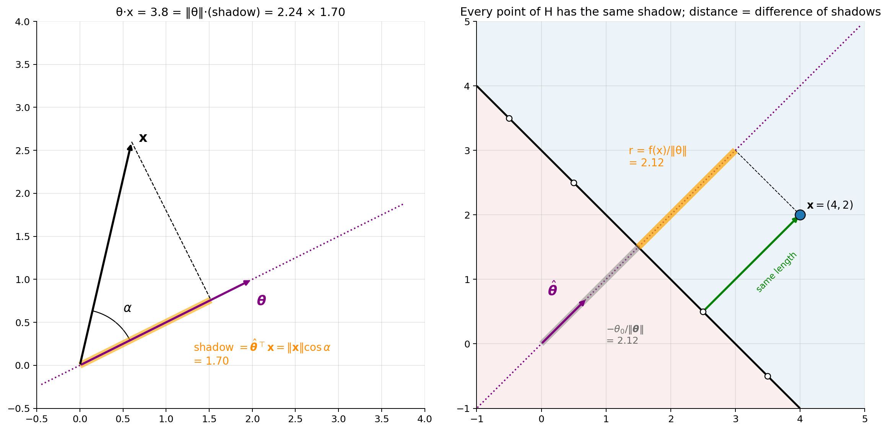
4. Step 3 · From “\(>0\)” to “\(\ge 1\)”: fixing the scale
Scale invariance. Multiply \((\boldsymbol{\theta}, \theta_0)\) by any \(c > 0\): \(\;c\,\boldsymbol{\theta}^\top\mathbf{x} + c\,\theta_0 = 0 \iff \boldsymbol{\theta}^\top\mathbf{x} + \theta_0 = 0\). Same hyperplane, same predictions, same distances \(r = f/\lVert\boldsymbol{\theta}\rVert\) (numerator and denominator both scale by \(c\)). Only the numbers \(f(\mathbf{x})\) change. Example (slide 8): \(\boldsymbol{\theta} = (1,1), \theta_0 = -3\) and \(\boldsymbol{\theta} = (2,2), \theta_0 = -6\) give the same line \(x_1 + x_2 = 3\); at \(\mathbf{x} = (4,2)\) the scores are \(3\) and \(6\), but the distances are \(3/\sqrt2 = 6/\sqrt8 = 2.12\). So \(\boldsymbol{\theta}\) has one “free knob”, its length, that does not change the classifier (figure: the solid line never moves).
We spend that freedom. Take a separating hyperplane placed halfway between the two classes (sliding it with \(\theta_0\) to the middle can only increase the smallest distance, so the best one is there anyway). Choose \(c\) so that the closest points of each class have \(f = +1\) and \(f = -1\). Then every point satisfies
\[ \begin{cases} \boldsymbol{\theta}^\top\mathbf{x}^{(i)} + \theta_0 \ge +1 & \text{for all } i \text{ with } y^{(i)} = +1\\ \boldsymbol{\theta}^\top\mathbf{x}^{(i)} + \theta_0 \le -1 & \text{for all } i \text{ with } y^{(i)} = -1 \end{cases} \quad\Longleftrightarrow\quad \boxed{y^{(i)}\big(\boldsymbol{\theta}^\top\mathbf{x}^{(i)} + \theta_0\big) \ge 1\quad\forall i} \]
(multiplying by \(y^{(i)} = \pm1\) merges the two cases into one line: for \(y^{(i)} = -1\) it flips the \(\le\) into \(\ge\)), with equality exactly for the closest points:
\[ y^{(i)}\big(\boldsymbol{\theta}^\top\mathbf{x}^{(i)} + \theta_0\big) - 1 = 0 \qquad\text{(support vectors)}. \]
The two dashed lines \(f(\mathbf{x}) = \pm 1\) are the margin boundaries. Between them there are no training points: that empty band is the margin. In the figure, only \(c = 1\) makes the dashed lines pass through the closest points.
hard = SVC(kernel="linear", C=1e6).fit(X, y) # (practically) hard margin, canonical scale
th_c, th0_c = hard.coef_[0], hard.intercept_[0]
sv_idx = hard.support_
fig, axes = plt.subplots(1, 3, figsize=(17, 5.6))
for ax, c in zip(axes, [0.5, 1.0, 2.0]):
th, th0 = c * th_c, c * th0_c
draw_boundary(ax, th, th0, (-3, 4.5)); scatter_classes(ax, X, y)
ax.scatter(X[sv_idx, 0], X[sv_idx, 1], s=180, facecolors="none", edgecolors="k", lw=1.5, zorder=4)
for i in sv_idx:
ax.annotate(f"f={X[i] @ th + th0:+.2f}", X[i], xytext=(8, -14), textcoords="offset points", fontsize=9,
bbox=dict(boxstyle="round", fc="w", alpha=0.85))
tag = " ← canonical" if c == 1 else ""
ax.set_title(f"({c:g}·θ, {c:g}·θ₀): ‖θ‖ = {np.linalg.norm(th):.2f}{tag}\n"
f"same boundary; closest points have |f| = {c:g}")
fig.suptitle("Step 3: rescaling θ moves the dashed lines f = ±1, never the boundary f = 0", y=1.0)
plt.tight_layout(); plt.show()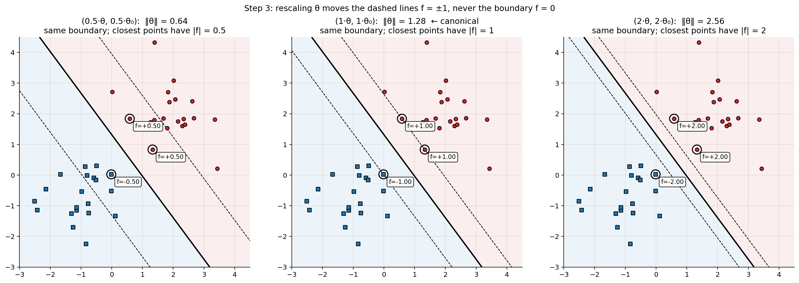
5. Step 4 · Measuring the margin by projecting
How wide is the band between the dashed lines? Project! Take a support vector \(\mathbf{x}_+\) on \(f = +1\) and a support vector \(\mathbf{x}_-\) on \(f = -1\). By step 2, their distance measured along \(\boldsymbol{\theta}\) is the difference of their shadows:
\[ d = \underbrace{\frac{\boldsymbol{\theta}^\top\mathbf{x}_+}{\lVert\boldsymbol{\theta}\rVert}}_{d_+} - \underbrace{\frac{\boldsymbol{\theta}^\top\mathbf{x}_-}{\lVert\boldsymbol{\theta}\rVert}}_{d_-} = \frac{1}{\lVert\boldsymbol{\theta}\rVert}\big(\boldsymbol{\theta}^\top\mathbf{x}_+ - \boldsymbol{\theta}^\top\mathbf{x}_-\big). \]
The support-vector equations of step 3 give \(\boldsymbol{\theta}^\top\mathbf{x}_+ + \theta_0 = +1\) and \(\boldsymbol{\theta}^\top\mathbf{x}_- + \theta_0 = -1\), i.e. \(\boldsymbol{\theta}^\top\mathbf{x}_+ = 1 - \theta_0\) and \(\boldsymbol{\theta}^\top\mathbf{x}_- = -1 - \theta_0\). Substituting:
\[ d = \frac{1}{\lVert\boldsymbol{\theta}\rVert}\big((1 - \theta_0) - (-1 - \theta_0)\big) = \frac{1 - \theta_0 + 1 + \theta_0}{\lVert\boldsymbol{\theta}\rVert} \quad\Longrightarrow\quad \boxed{\;d = \frac{2}{\lVert\boldsymbol{\theta}\rVert}\;} \]
\(\theta_0\) cancels, and so does the choice of which support vectors we took. The same result from the distance formula: each dashed line is at distance \(1/\lVert\boldsymbol{\theta}\rVert\) from the boundary, one on each side.
Key idea. Once the scale is fixed, a short \(\boldsymbol{\theta}\) means a wide margin.
Check on the slide’s figure. The figure below (slides 8 and 9) has 7 points of class \(+1\), 6 of class \(-1\), and the line \(x_1 + x_2 - 3 = 0\), i.e. \(\boldsymbol{\theta} = (1,1)\), \(\theta_0 = -3\). The circled \(\mathbf{x}_+ = (3,1)\) and \(\mathbf{x}_- = (1,1)\) have \(f = 3 + 1 - 3 = +1\) and \(f = 1 + 1 - 3 = -1\), so
\[ d = \frac{\boldsymbol{\theta}^\top\mathbf{x}_+ - \boldsymbol{\theta}^\top\mathbf{x}_-}{\lVert\boldsymbol{\theta}\rVert} = \frac{4 - 2}{\sqrt2} = \sqrt2 = \frac{2}{\sqrt2} = 1.41 \ \checkmark \]
The code solves the SVM on the same 13 points and finds exactly that line, so the slide’s line is the maximum-margin one.
X_deck = np.array([[3, 1], [1.2, 2.8], [3.5, 2], [4.2, 1.4], [2.6, 3.1], [4.3, 2.8], [3.8, 3.4], # y = +1
[1, 1], [0.4, 1.6], [0.3, 0.4], [1.2, 0.2], [0.2, 1.0], [0.9, 0.5]]) # y = -1
y_deck = np.r_[np.ones(7), -np.ones(6)]
svm_deck = SVC(kernel="linear", C=1e6, tol=1e-10).fit(X_deck, y_deck)
f_deck = X_deck @ svm_deck.coef_[0] + svm_deck.intercept_[0]
print(f"theta = {svm_deck.coef_[0].round(4)}, theta0 = {svm_deck.intercept_[0]:.4f}, "
f"margin 2/‖θ‖ = {2 / np.linalg.norm(svm_deck.coef_[0]):.4f}")
print("points with y·f = 1 (on the dashed lines):", X_deck[np.isclose(y_deck * f_deck, 1, atol=1e-4)].tolist())
print("support vectors (α > 0):", X_deck[svm_deck.support_].tolist())theta = [1. 1.], theta0 = -3.0000, margin 2/‖θ‖ = 1.4142
points with y·f = 1 (on the dashed lines): [[3.0, 1.0], [1.2, 2.8], [1.0, 1.0], [0.4, 1.6]]
support vectors (α > 0): [[0.4, 1.6], [3.0, 1.0], [1.2, 2.8]]th, th0 = th_c, th0_c
u = th / np.linalg.norm(th)
i_pos = next(i for i in sv_idx if y[i] > 0); i_neg = next(i for i in sv_idx if y[i] < 0)
xp, xm = X[i_pos], X[i_neg]
p0 = np.array([2.6, -2.2]) # any axis parallel to θ works: shadow differences are the same
foot = lambda x: p0 + (u @ (x - p0)) * u
fp, fm = foot(xp), foot(xm)
fig, ax = plt.subplots(figsize=(7, 7))
draw_boundary(ax, th, th0, (-3, 4.5)); scatter_classes(ax, X, y)
t = np.linspace(-6, 6, 2); ax.plot(p0[0] + t * u[0], p0[1] + t * u[1], ":", c=NORMAL, lw=1.5)
ax.annotate("", xy=fp + 0.9 * u, xytext=fp, arrowprops=dict(arrowstyle="-|>", color=NORMAL, lw=2.5))
ax.text(*(fp + 0.9 * u + [0.1, -0.25]), r"$\hat{\boldsymbol{\theta}}$", color=NORMAL, fontsize=14)
for p, f_, lab in [(xp, fp, r"$\mathbf{x}_+$"), (xm, fm, r"$\mathbf{x}_-$")]:
ax.scatter(*p, s=220, facecolors="none", edgecolors="k", lw=2, zorder=5)
ax.plot([p[0], f_[0]], [p[1], f_[1]], c="darkorange", ls="--", lw=1.2) # runs along the dashed margin line
ax.text(*(p + [-0.55, 0.2]), lab, fontsize=14)
ax.annotate("", xy=fp, xytext=fm, arrowprops=dict(arrowstyle="<|-|>", color="darkorange", lw=3))
ax.annotate(r"$d = d_+ - d_- = \frac{2}{\|\boldsymbol{\theta}\|}$", (fp + fm) / 2, xytext=(-2.9, -2.6),
color="darkorange", fontsize=15, bbox=dict(boxstyle="round", fc="w", alpha=0.9),
arrowprops=dict(arrowstyle="->", color="darkorange"))
ax.set_title("Step 4: project the two support vectors onto the θ direction and subtract")
plt.tight_layout(); plt.show()
print(f"d+ - d- = (θ·x+ − θ·x−)/‖θ‖ = {(th @ xp - th @ xm) / np.linalg.norm(th):.4f}")
print(f"2/‖θ‖ = {2 / np.linalg.norm(th):.4f}")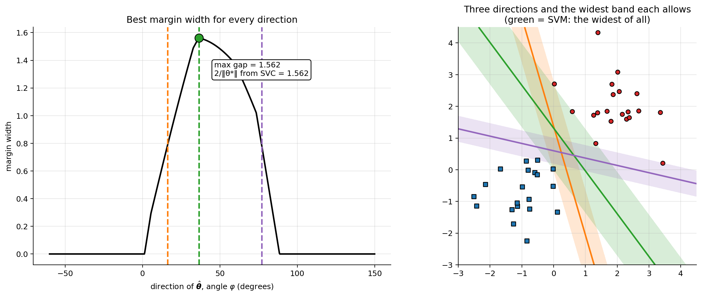
d+ - d- = (θ·x+ − θ·x−)/‖θ‖ = 1.5621
2/‖θ‖ = 1.56196. Step 5 · The optimisation problem
We want the widest margin that still has every point on its correct side, outside the band:
\[ \max_{\boldsymbol{\theta},\theta_0}\ \frac{2}{\lVert\boldsymbol{\theta}\rVert} \qquad\text{s.t.}\quad y^{(i)}\big(\boldsymbol{\theta}^\top\mathbf{x}^{(i)} + \theta_0\big) - 1 \ge 0,\quad \forall i . \]
Maximising \(2/a\) (with \(a > 0\)) is the same as minimising \(a\), and the same as minimising \(\frac12a^2\) (squaring is increasing for \(a > 0\)). Squaring removes the square root in \(\lVert\boldsymbol{\theta}\rVert\) and makes the objective smooth; the \(\frac12\) cancels the 2 when we differentiate. So the hard-margin SVM is
\[ \boxed{\min_{\boldsymbol{\theta},\theta_0}\ \frac12\lVert\boldsymbol{\theta}\rVert^2 = \frac12\boldsymbol{\theta}^\top\boldsymbol{\theta} \qquad\text{s.t.}\quad y^{(i)}\big(\boldsymbol{\theta}^\top\mathbf{x}^{(i)} + \theta_0\big) \ge 1,\quad i = 1,\dots,m} \]
- It is a convex quadratic program (QP): a convex quadratic objective with linear constraints. The feasible set (an intersection of half-spaces) is convex and the objective is strictly convex in \(\boldsymbol{\theta}\), so the optimal \(\boldsymbol{\theta}\) is unique, and standard QP software finds it.
- Only some constraints matter. There is one constraint per point, but at the optimum only the ones that hold with equality (the support vectors, on the dashed lines) are “active”. Delete every other point and the solution does not change. Sections 9–11 make this precise.
- Why a large margin? A boundary far from all training points is robust to small perturbations of the data. Statistical learning theory backs this up: for separable data, the generalisation bound depends on (data radius / margin)², not on the dimension \(n\).
The picture behind the problem. For each direction \(\hat{\boldsymbol{\theta}}\) (an angle \(\varphi\) in 2-D), project all points onto it. The widest band that fits in that direction is the gap between the lowest shadow of the \(+1\) class and the highest shadow of the \(-1\) class. The SVM picks the direction with the largest gap.
Try it. Turn the direction of \(\boldsymbol{\theta}\): the widget projects the slide’s 24 points onto it and draws the widest band that fits in that direction (green), or the overlap (orange) when the projections of the two classes overlap. The curve on the right is the gap for every direction; the SVM picks its maximum. At \(90°\) the gap is only 0.89, at \(140°\) the classes overlap, and at \(36°\) the gap is the widest, 2.24.
The same computation on our running data, with the best gap compared with the margin of the SVM fitted by scikit-learn:
def gap_along(phi, X, y):
# widest margin achievable with normal direction u = (cos φ, sin φ); negative = not separable that way
u = np.array([np.cos(phi), np.sin(phi)])
s = X @ u # shadows on u
lo, hi = s[y > 0].min(), s[y < 0].max()
return lo - hi, u, (lo + hi) / 2
phis = np.radians(np.linspace(-60, 150, 841))
gaps = np.array([gap_along(p, X, y)[0] for p in phis])
k = gaps.argmax(); phi_star = phis[k]
ok = np.where(gaps > 0.5 * gaps[k])[0] # two sub-optimal directions
examples = [(phis[ok[0]], "C1"), (phi_star, "C2"), (phis[ok[-1]], "C4")]
fig, axes = plt.subplots(1, 2, figsize=(14, 5.6))
ax = axes[0]
ax.plot(np.degrees(phis), np.clip(gaps, 0, None), "k", lw=2)
for p, c in examples:
ax.axvline(np.degrees(p), color=c, lw=2, ls="--")
ax.scatter(np.degrees(phi_star), gaps[k], s=120, c="C2", zorder=4, edgecolor="k")
ax.annotate(f"max gap = {gaps[k]:.3f}\n2/‖θ*‖ from SVC = {2 / np.linalg.norm(th_c):.3f}", (np.degrees(phi_star), gaps[k]),
xytext=(20, -50), textcoords="offset points", fontsize=10, bbox=dict(boxstyle="round", fc="w"))
ax.set_xlabel(r"direction of $\hat{\boldsymbol{\theta}}$, angle $\varphi$ (degrees)"); ax.set_ylabel("margin width")
ax.set_title("Best margin width for every direction")
ax = axes[1]
lim = (-3, 4.5); g1, g2 = np.meshgrid(np.linspace(*lim, 400), np.linspace(*lim, 400))
for p, c in examples:
gap, u, mid = gap_along(p, X, y)
th, th0 = 2 * u / gap, -2 * mid / gap # canonical scale: f = ±1 at the band edges
F = th[0] * g1 + th[1] * g2 + th0
ax.contourf(g1, g2, F, levels=[-1, 1], colors=[c], alpha=0.18)
ax.contour(g1, g2, F, levels=[0], colors=[c], linewidths=2)
scatter_classes(ax, X, y); ax.set_xlim(lim); ax.set_ylim(lim); ax.set_aspect("equal")
ax.set_title("Three directions and the widest band each allows\n(green = SVM: the widest of all)")
plt.tight_layout(); plt.show()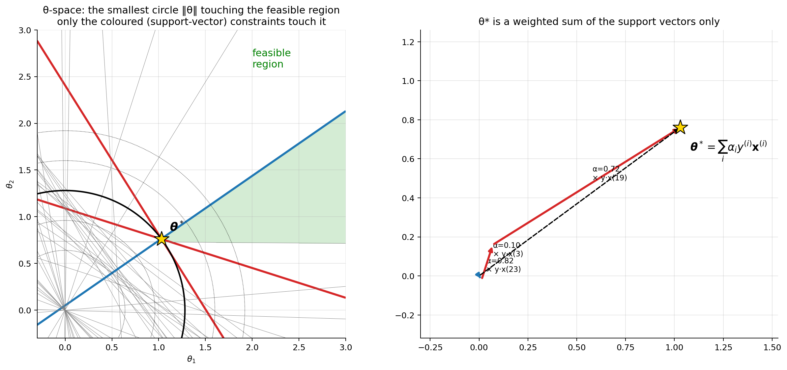
Part II · Solving it: Lagrange duality
The QP of section 6 could be handed to any QP solver. Solving it “by hand” with Lagrange multipliers is worth the effort, because the solution method reveals the structure of the SVM: the weight vector is a combination of a few training points (the support vectors), and the data only enter through dot products (the door to kernels). This part first builds the theory on a one-dimensional toy (section 7) and in general (section 8), then applies it to the SVM (sections 9–12).
7. Lagrange multipliers in one dimension
Toy problem (slide 11): minimise \(\frac12\theta^2\) subject to \(\theta \ge 1\). The answer is clearly \(\theta^* = 1\): the free minimum \(\theta = 0\) is not allowed, and the objective grows as we move right. Let’s find it the Lagrange way (the figure below calls the variable \(w\), as the deck does).
1 · Constraint and multiplier. Write the constraint as \(g(\theta) = \theta - 1 \ge 0\) and give it a multiplier \(\alpha \ge 0\). The Lagrangian is
\[ \mathcal{L}(\theta, \alpha) = \tfrac12\theta^2 - \alpha\,(\theta - 1). \]
2 · Minimise over \(\theta\) (for a fixed \(\alpha\); \(\mathcal{L}\) is a parabola in \(\theta\)):
\[ \frac{\partial\mathcal{L}}{\partial\theta} = \theta - \alpha = 0 \quad\Longrightarrow\quad \theta = \alpha . \]
3 · Substitute back \(\theta = \alpha\). The result is the dual function, a function of \(\alpha\) only:
\[ D(\alpha) = \tfrac12\alpha^2 - \alpha(\alpha - 1) = \tfrac12\alpha^2 - \alpha^2 + \alpha = \alpha - \tfrac12\alpha^2 . \]
4 · Maximise over \(\alpha \ge 0\): \(D'(\alpha) = 1 - \alpha = 0\) gives \(\alpha^* = 1\), which is \(\ge 0\), so it is allowed. Then \(\theta^* = \alpha^* = 1\) ✓, and \(D(\alpha^*) = 1 - \frac12 = \frac12 = \frac12(\theta^*)^2\): the dual optimum equals the primal optimum.
The constraint is active (the optimum is pressed against it, \(g(\theta^*) = 0\)) and its multiplier is positive, \(\alpha^* = 1 > 0\).
The inactive case. With the constraint \(\theta \ge -1\) instead, \(g(\theta) = \theta + 1\):
- \(\mathcal{L} = \frac12\theta^2 - \alpha(\theta + 1)\), and \(\partial\mathcal{L}/\partial\theta = \theta - \alpha = 0\) gives again \(\theta = \alpha\);
- \(D(\alpha) = \frac12\alpha^2 - \alpha(\alpha + 1) = -\frac12\alpha^2 - \alpha\);
- \(D'(\alpha) = -\alpha - 1 < 0\) for every \(\alpha \ge 0\): \(D\) is decreasing, so its maximum over \(\alpha \ge 0\) is at the boundary \(\alpha^* = 0\);
- then \(\theta^* = \alpha^* = 0\): the free minimum, which satisfies the constraint with room to spare (\(g(0) = 1 > 0\)). The constraint is inactive and its multiplier is \(0\).
In both cases \(\alpha^*\,g(\theta^*) = 0\) (either the multiplier or the constraint is zero): this is complementary slackness, and it is what will make most SVM multipliers zero.
What the multiplier measures. With the constraint \(\theta \ge c\) for some \(c > 0\), the optimum is \(\theta^* = c\) with value \(p^*(c) = \frac12c^2\), so \(\frac{d p^*}{dc} = c\), which at \(c = 1\) equals \(\alpha^* = 1\). The multiplier is the price of the constraint: how much the optimal value would rise if the constraint were tightened a little. An inactive constraint costs nothing, so its price is \(0\).
The next figure draws, for both toys, the primal objective on its feasible set and the dual function on \(\alpha \ge 0\). The dual curve always lies below the primal one and they meet at the optimum: this is weak and strong duality, proved in the next section.
fig, axes = plt.subplots(1, 2, figsize=(12, 3.9))
for ax, c in zip(axes, [1, -1]):
th_feas = np.linspace(c, 2.2, 200) # feasible θ ≥ c
al = np.linspace(0, 2.2, 200) # dual variable α ≥ 0
D = al * c - 0.5 * al ** 2 # D(α) = min_θ ½θ² − α(θ − c) = cα − ½α²
a_star = max(c, 0); p_star = 0.5 * max(c, 0) ** 2
ax.plot(th_feas, 0.5 * th_feas ** 2, lw=2.5, label=r"primal $\frac{1}{2}\theta^2$ on $\theta\geq c$")
ax.plot(al, D, lw=2.5, label=r"dual $D(\alpha)$ on $\alpha\geq 0$")
ax.axhline(p_star, color="k", ls=":", lw=1)
ax.scatter([max(c, 0)], [p_star], s=80, c="k", zorder=4)
ax.set_xlabel(r"$\theta$ (primal curve) or $\alpha$ (dual curve)"); ax.set_ylim(-2.5, 2.6); ax.legend(loc="lower left")
ax.set_title(f"constraint θ ≥ {c}: p* = {p_star:.2f}, α* = {a_star}, d* = {D.max() + 0:.2f}")
plt.tight_layout(); plt.show()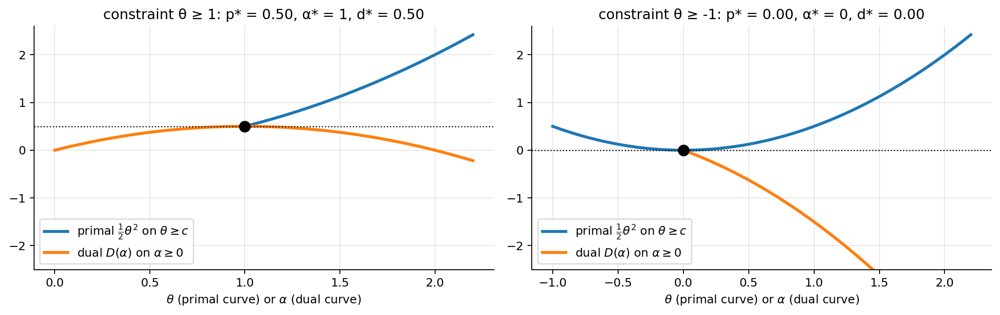
8. The Lagrangian, duality and the KKT conditions
Now the same recipe in general. The primal problem is
\[ \min_{\boldsymbol{\theta}}\ J(\boldsymbol{\theta}) \qquad\text{s.t.}\quad g_i(\boldsymbol{\theta}) \ge 0,\quad i = 1,\dots,m, \]
with optimal value \(p^*\). One multiplier \(\alpha_i \ge 0\) per constraint gives the Lagrangian
\[ \mathcal{L}(\boldsymbol{\theta}, \boldsymbol{\alpha}) = J(\boldsymbol{\theta}) - \sum_{i=1}^m\alpha_i\,g_i(\boldsymbol{\theta}), \qquad \boldsymbol{\alpha} \ge \mathbf{0}. \]
For the SVM, \(J = \frac12\lVert\boldsymbol{\theta}\rVert^2\) and \(g_i = y^{(i)}(\boldsymbol{\theta}^\top\mathbf{x}^{(i)} + \theta_0) - 1\), one constraint per training point (section 9).
8.1 Why min–max is the constrained problem
Fix \(\boldsymbol{\theta}\) and maximise \(\mathcal{L}\) over \(\boldsymbol{\alpha} \ge \mathbf{0}\) (slide 12):
- if some constraint is violated, \(g_i(\boldsymbol{\theta}) < 0\), then \(-\alpha_ig_i(\boldsymbol{\theta}) = \alpha_i|g_i(\boldsymbol{\theta})| \to +\infty\) as \(\alpha_i \to \infty\): an infinite penalty;
- if all constraints hold, every term \(-\alpha_ig_i(\boldsymbol{\theta})\) is \(\le 0\), so the best is \(\boldsymbol{\alpha} = \mathbf{0}\) and we get \(J(\boldsymbol{\theta})\) back.
So \(\max_{\boldsymbol{\alpha}\ge\mathbf{0}}\mathcal{L}(\boldsymbol{\theta},\boldsymbol{\alpha})\) is \(J(\boldsymbol{\theta})\) on the feasible set and \(+\infty\) outside it, and
\[ \min_{\boldsymbol{\theta}}\ \max_{\boldsymbol{\alpha}\ge\mathbf{0}}\ \mathcal{L}(\boldsymbol{\theta},\boldsymbol{\alpha}) = \min_{\boldsymbol{\theta}\ \text{feasible}} J(\boldsymbol{\theta}) = p^* . \]
Swapping the order gives the dual. The dual function is \(D(\boldsymbol{\alpha}) = \min_{\boldsymbol{\theta}}\mathcal{L}(\boldsymbol{\theta},\boldsymbol{\alpha})\) (step 2–3 of section 7: minimise over the primal variables and substitute back), and the dual problem is
\[ d^* = \max_{\boldsymbol{\alpha}\ge\mathbf{0}}\ D(\boldsymbol{\alpha}) = \max_{\boldsymbol{\alpha}\ge\mathbf{0}}\ \min_{\boldsymbol{\theta}}\ \mathcal{L}(\boldsymbol{\theta},\boldsymbol{\alpha}). \]
8.2 Weak duality: the dual is a lower bound
Theorem (weak duality). \(d^* \le p^*\), for any problem (convex or not).
Proof. Take any feasible \(\tilde{\boldsymbol{\theta}}\) (all \(g_i(\tilde{\boldsymbol{\theta}}) \ge 0\)) and any \(\boldsymbol{\alpha} \ge \mathbf{0}\). Then
\[ \begin{aligned} D(\boldsymbol{\alpha}) &= \min_{\boldsymbol{\theta}}\ \mathcal{L}(\boldsymbol{\theta}, \boldsymbol{\alpha}) && \text{definition of } D\\ &\le \mathcal{L}(\tilde{\boldsymbol{\theta}}, \boldsymbol{\alpha}) && \text{a minimum is} \le \text{any particular value}\\ &= J(\tilde{\boldsymbol{\theta}}) - \textstyle\sum_i\alpha_i\,g_i(\tilde{\boldsymbol{\theta}}) && \text{definition of } \mathcal{L}\\ &\le J(\tilde{\boldsymbol{\theta}}) && \alpha_i \ge 0 \text{ and } g_i(\tilde{\boldsymbol{\theta}}) \ge 0, \text{ so the sum is} \ge 0 . \end{aligned} \]
The left side does not depend on \(\tilde{\boldsymbol{\theta}}\) and the right side does not depend on \(\boldsymbol{\alpha}\), so we may maximise the left over \(\boldsymbol{\alpha} \ge \mathbf{0}\) and minimise the right over feasible \(\tilde{\boldsymbol{\theta}}\): \(d^* \le p^*\). \(\blacksquare\)
Consequences:
- every dual-feasible \(\boldsymbol{\alpha}\) gives a lower bound \(D(\boldsymbol{\alpha})\) on the optimum, and every feasible \(\tilde{\boldsymbol{\theta}}\) an upper bound \(J(\tilde{\boldsymbol{\theta}})\);
- the duality gap \(J(\tilde{\boldsymbol{\theta}}) - D(\boldsymbol{\alpha}) \ge 0\) bounds how far both are from optimal. SVM solvers use it (or the KKT conditions below) to decide when to stop.
In the 1-D toy: \(D(\alpha) = \alpha - \frac12\alpha^2 \le \frac12\) for every \(\alpha\) (because \(\frac12 - D(\alpha) = \frac12(\alpha - 1)^2 \ge 0\)), and \(\frac12\theta^2 \ge \frac12\) for every feasible \(\theta \ge 1\).
8.3 Strong duality and Slater’s condition
Strong duality means \(d^* = p^*\) (zero gap): then solving the dual is the same as solving the primal. It does not hold for every problem, but it does for convex problems under a mild “constraint qualification”. The one we need:
Slater’s condition (stated, not proved). Suppose \(J\) is convex and every \(g_i\) is concave (so each set \(\{g_i \ge 0\}\) is convex). If there is a point \(\bar{\boldsymbol{\theta}}\) that satisfies every affine constraint and satisfies every non-affine constraint strictly (\(g_i(\bar{\boldsymbol{\theta}}) > 0\)), then \(d^* = p^*\) and the dual optimum is attained. (The proof uses the separating hyperplane theorem; see Boyd & Vandenberghe, Convex Optimization, §5.3.)
For the SVM the objective \(\frac12\lVert\boldsymbol{\theta}\rVert^2\) is convex and every constraint \(y^{(i)}(\boldsymbol{\theta}^\top\mathbf{x}^{(i)} + \theta_0) - 1 \ge 0\) is affine in \((\boldsymbol{\theta}, \theta_0)\). So Slater’s condition reduces to feasibility:
- hard margin: feasible iff the data are linearly separable. It is then even strictly feasible: if \(y^{(i)}f(\mathbf{x}^{(i)}) \ge 1\) for all \(i\), the doubled parameters give \(y^{(i)}\,2f(\mathbf{x}^{(i)}) \ge 2 > 1\);
- soft margin (section 13): always feasible, e.g. \(\boldsymbol{\theta} = \mathbf{0}\), \(\theta_0 = 0\), \(\xi^{(i)} = 2\) gives \(0 \ge 1 - 2\), strictly.
So strong duality always holds for the soft-margin SVM, and for the hard-margin SVM whenever it has a solution at all. In the 1-D toy, \(p^* = d^* = \frac12\) (previous figure).
8.4 The KKT conditions
Suppose strong duality holds and \(\boldsymbol{\theta}^*\), \(\boldsymbol{\alpha}^*\) are primal and dual optimal. Then
\[ \begin{aligned} J(\boldsymbol{\theta}^*) &= D(\boldsymbol{\alpha}^*) && \text{strong duality}\\ &= \min_{\boldsymbol{\theta}}\ \mathcal{L}(\boldsymbol{\theta}, \boldsymbol{\alpha}^*) && \text{definition of } D\\ &\le \mathcal{L}(\boldsymbol{\theta}^*, \boldsymbol{\alpha}^*) && \text{a minimum is} \le \text{any value}\\ &= J(\boldsymbol{\theta}^*) - \textstyle\sum_i\alpha^*_i\,g_i(\boldsymbol{\theta}^*) && \text{definition of } \mathcal{L}\\ &\le J(\boldsymbol{\theta}^*) && \alpha^*_i \ge 0,\ g_i(\boldsymbol{\theta}^*) \ge 0 . \end{aligned} \]
The chain starts and ends with \(J(\boldsymbol{\theta}^*)\), so both inequalities are equalities:
- the first says that \(\boldsymbol{\theta}^*\) minimises \(\mathcal{L}(\cdot, \boldsymbol{\alpha}^*)\), so the gradient there is zero;
- the second says \(\sum_i\alpha^*_ig_i(\boldsymbol{\theta}^*) = 0\); every term is \(\ge 0\), so every term is zero.
Adding the feasibility requirements gives the four Karush–Kuhn–Tucker (KKT) conditions:
- Stationarity: \(\nabla J(\boldsymbol{\theta}^*) - \sum_i\alpha^*_i\nabla g_i(\boldsymbol{\theta}^*) = \mathbf{0}\).
- Primal feasibility: \(g_i(\boldsymbol{\theta}^*) \ge 0\) for all \(i\).
- Dual feasibility: \(\alpha^*_i \ge 0\) for all \(i\).
- Complementary slackness: \(\alpha^*_i\,g_i(\boldsymbol{\theta}^*) = 0\) for all \(i\) (a multiplier can only be positive if its constraint is active).
They are also sufficient for a convex problem. If \((\boldsymbol{\theta}^*, \boldsymbol{\alpha}^*)\) satisfies 1–4, then \(\mathcal{L}(\cdot, \boldsymbol{\alpha}^*) = J - \sum_i\alpha^*_ig_i\) is convex (convex \(J\) minus non-negative multiples of concave \(g_i\)), and a convex function with zero gradient is at its minimum, so \(D(\boldsymbol{\alpha}^*) = \mathcal{L}(\boldsymbol{\theta}^*, \boldsymbol{\alpha}^*) = J(\boldsymbol{\theta}^*)\) by condition 4. The gap is zero, so by weak duality neither can be improved: both are optimal. \(\blacksquare\)
In the 1-D toy, \((\theta^*, \alpha^*) = (1, 1)\): stationarity \(\theta - \alpha = 0\) ✓, feasibility \(1 \ge 1\) ✓, \(\alpha = 1 \ge 0\) ✓, \(\alpha\,g = 1 \cdot 0 = 0\) ✓.
How each condition is used for the SVM (sections 9–14; \(\nu_i\) and \(\xi^{(i)}\) belong to the soft margin):
| KKT condition | for the SVM | what it gives us |
|---|---|---|
| stationarity | \(\boldsymbol{\theta} = \sum_i\alpha_iy^{(i)}\mathbf{x}^{(i)}\), \(\sum_i\alpha_iy^{(i)} = 0\), \(C - \alpha_i - \nu_i = 0\) | the dual problem; \(\boldsymbol{\theta}\) as a combination of training points (kernels); the box \(\alpha_i \le C\) |
| primal feasibility | \(y^{(i)}f(\mathbf{x}^{(i)}) \ge 1 - \xi^{(i)}\), \(\xi^{(i)} \ge 0\) | the margin constraints themselves |
| dual feasibility | \(\alpha_i \ge 0\), \(\nu_i \ge 0\) | the box \(0 \le \alpha_i \le C\) of the dual |
| complementary slackness | \(\alpha_i\big(y^{(i)}f(\mathbf{x}^{(i)}) - 1 + \xi^{(i)}\big) = 0\), \(\nu_i\xi^{(i)} = 0\) | sparsity (which points are support vectors), the formula for \(\theta_0\), and the stopping test of SMO |
9. The dual of the hard-margin SVM
With \(J = \frac12\lVert\boldsymbol{\theta}\rVert^2\) and one constraint \(g_i = y^{(i)}(\boldsymbol{\theta}^\top\mathbf{x}^{(i)} + \theta_0) - 1 \ge 0\) per point, the Lagrangian is
\[ \mathcal{L}(\boldsymbol{\theta},\theta_0,\boldsymbol{\alpha}) = \frac12\lVert\boldsymbol{\theta}\rVert^2 - \sum_{i=1}^m\alpha_i\Big[y^{(i)}\big(\boldsymbol{\theta}^\top\mathbf{x}^{(i)} + \theta_0\big) - 1\Big]. \]
The plan, exactly as in 1-D (slides 12–14): minimise over \(\boldsymbol{\theta}\) and \(\theta_0\) (set the derivatives to zero), substitute back, then maximise over the \(\alpha_i \ge 0\).
Expand and group the terms:
\[ \mathcal{L} = \frac12\boldsymbol{\theta}^\top\boldsymbol{\theta} - \sum_i\alpha_iy^{(i)}\boldsymbol{\theta}^\top\mathbf{x}^{(i)} - \theta_0\sum_i\alpha_iy^{(i)} + \sum_i\alpha_i . \]
We need two derivatives, the vector versions of \(\frac{d}{d\theta}\frac12\theta^2 = \theta\) and \(\frac{d}{d\theta}\theta x = x\): \(\;\nabla_{\boldsymbol{\theta}}\big(\frac12\boldsymbol{\theta}^\top\boldsymbol{\theta}\big) = \boldsymbol{\theta}\) and \(\nabla_{\boldsymbol{\theta}}\big(\boldsymbol{\theta}^\top\mathbf{x}\big) = \mathbf{x}\).
With respect to \(\boldsymbol{\theta}\) (the third and fourth terms do not contain \(\boldsymbol{\theta}\)):
\[ \nabla_{\boldsymbol{\theta}}\mathcal{L} = \boldsymbol{\theta} - \sum_{i=1}^m\alpha_iy^{(i)}\mathbf{x}^{(i)} = \mathbf{0} \quad\Longrightarrow\quad \boxed{\boldsymbol{\theta} = \sum_{i=1}^m\alpha_iy^{(i)}\mathbf{x}^{(i)}} \]
The optimal \(\boldsymbol{\theta}\) is a weighted sum of the training points.
With respect to \(\theta_0\) (only the third term contains it):
\[ \frac{\partial\mathcal{L}}{\partial\theta_0} = -\sum_{i=1}^m\alpha_iy^{(i)} = 0 \quad\Longrightarrow\quad \boxed{\sum_{i=1}^m\alpha_iy^{(i)} = 0} \]
The multipliers of the two classes balance: \(\sum_{i:\,y^{(i)}=+1}\alpha_i = \sum_{i:\,y^{(i)}=-1}\alpha_i\).
Substitute both results back. The \(\theta_0\) term is \(\theta_0\cdot 0 = 0\). The two \(\boldsymbol{\theta}\) terms become the same double sum:
\[ \frac12\boldsymbol{\theta}^\top\boldsymbol{\theta} = \frac12\Big(\sum_i\alpha_iy^{(i)}\mathbf{x}^{(i)}\Big)^{\!\top}\Big(\sum_j\alpha_jy^{(j)}\mathbf{x}^{(j)}\Big) = \frac12\sum_{i,j}\alpha_i\alpha_jy^{(i)}y^{(j)}\,\mathbf{x}^{(i)\top}\mathbf{x}^{(j)}, \]
\[ \sum_i\alpha_iy^{(i)}\boldsymbol{\theta}^\top\mathbf{x}^{(i)} = \sum_i\alpha_iy^{(i)}\Big(\sum_j\alpha_jy^{(j)}\mathbf{x}^{(j)}\Big)^{\!\top}\mathbf{x}^{(i)} = \sum_{i,j}\alpha_i\alpha_jy^{(i)}y^{(j)}\,\mathbf{x}^{(i)\top}\mathbf{x}^{(j)} . \]
Half of the double sum, minus all of it, leaves minus half of it. What is left is the dual function, and the dual problem is
\[ \boxed{\max_{\boldsymbol{\alpha}}\ D(\boldsymbol{\alpha}) = \sum_i\alpha_i - \frac12\sum_{i,j}\alpha_i\alpha_j\,y^{(i)}y^{(j)}\,\mathbf{x}^{(i)\top}\mathbf{x}^{(j)} \qquad\text{s.t.}\quad \alpha_i \ge 0,\quad \sum_i\alpha_iy^{(i)} = 0} \]
- A quadratic program in \(m\) unknowns, one \(\alpha_i\) per training point, with very simple constraints (a sign and one equation), instead of \(n + 1\) unknowns with \(m\) general constraints.
- Matrix form. \(D(\boldsymbol{\alpha}) = \mathbf{1}^\top\boldsymbol{\alpha} - \frac12\boldsymbol{\alpha}^\top\mathbf{Q}\boldsymbol{\alpha}\) with \(Q_{ij} = y^{(i)}y^{(j)}\mathbf{x}^{(i)\top}\mathbf{x}^{(j)}\). \(\mathbf{Q}\) is positive semi-definite, because \(\mathbf{v}^\top\mathbf{Q}\mathbf{v} = \big\lVert\sum_iv_iy^{(i)}\mathbf{x}^{(i)}\big\rVert^2 \ge 0\), so \(D\) is concave: maximising it is again a convex problem with one global optimum.
- The data enter only through the dot products \(\mathbf{x}^{(i)\top}\mathbf{x}^{(j)}\). Keep an eye on them: they are the door to kernels (section 16).
The geometry of stationarity. In words, stationarity says: at the optimum the gradient of the objective is a non-negative combination of the gradients of the active constraints, \(\nabla J = \sum_i\alpha_i\nabla g_i\) with \(\alpha_i = 0\) for the inactive ones. The figure below shows it for our SVM, in \(\boldsymbol{\theta}\)-space (with \(\theta_0\) fixed at its optimal value). Each training point is a half-plane of allowed \(\boldsymbol{\theta}\). Their intersection is the feasible region. The objective \(\frac12\lVert\boldsymbol{\theta}\rVert^2\) has circular level sets, and the optimum is where the smallest circle touches the feasible region. It touches only a few constraint lines, the support vectors, and \(\boldsymbol{\theta}^*\) is a weighted sum of their normals \(y^{(i)}\mathbf{x}^{(i)}\).
# θ-space picture: feasible region, level circles of ½‖θ‖², and the active constraints
A = y[:, None] * X # constraint i: (y_i x_i)·θ ≥ 1 − y_i θ0*
b = 1 - y * th0_c
T1, T2 = np.meshgrid(np.linspace(-0.3, 3.0, 500), np.linspace(-0.3, 3.0, 500))
Tgrid = np.c_[T1.ravel(), T2.ravel()]
feasible = (Tgrid @ A.T >= b).all(1).reshape(T1.shape)
alpha_y = hard.dual_coef_[0] # α_i y_i for the support vectors
fig, axes = plt.subplots(1, 2, figsize=(14, 6.4))
ax = axes[0]
ax.contourf(T1, T2, feasible, levels=[0.5, 1.5], colors=["C2"], alpha=0.2)
for i in range(len(y)):
active = i in sv_idx
ax.contour(T1, T2, (A[i, 0] * T1 + A[i, 1] * T2 - b[i]), levels=[0],
colors=[POS if y[i] > 0 else NEG] if active else ["gray"], linewidths=2.5 if active else 0.4)
R = np.hypot(T1, T2); r_star = np.linalg.norm(th_c)
ax.contour(T1, T2, R, levels=r_star * np.array([0.5, 0.75, 1.25, 1.5]), colors="k", linewidths=0.6, linestyles=":")
ax.contour(T1, T2, R, levels=[r_star], colors="k", linewidths=1.8)
ax.scatter(*th_c, marker="*", s=350, c="gold", edgecolor="k", zorder=5)
ax.annotate(r"$\boldsymbol{\theta}^*$", th_c, xytext=(10, 10), textcoords="offset points", fontsize=14)
ax.text(2.0, 2.6, "feasible\nregion", color="green", fontsize=12)
ax.set_xlim(-0.3, 3); ax.set_ylim(-0.3, 3); ax.set_aspect("equal")
ax.set_xlabel(r"$\theta_1$"); ax.set_ylabel(r"$\theta_2$")
ax.set_title("θ-space: the smallest circle ‖θ‖ touching the feasible region\n"
"only the coloured (support-vector) constraints touch it")
ax = axes[1] # θ* = Σ α_i y_i x_i, drawn tip to tail
tail, pts = np.zeros(2), [np.zeros(2)]
for coef, i in zip(alpha_y, sv_idx):
tip = tail + coef * X[i]
ax.annotate("", xy=tip, xytext=tail, arrowprops=dict(arrowstyle="-|>", color=POS if y[i] > 0 else NEG, lw=2.5))
ax.text(*((tail + tip) / 2 + [0.03, 0.03]), f"α={abs(coef):.2f}\n× y·x({i})", fontsize=9)
tail = tip; pts.append(tip)
ax.annotate("", xy=th_c, xytext=(0, 0), arrowprops=dict(arrowstyle="-|>", color="k", lw=1.5, ls="--"))
ax.scatter(*th_c, marker="*", s=350, c="gold", edgecolor="k", zorder=5)
ax.text(*(th_c + [0.05, -0.12]), r"$\boldsymbol{\theta}^*=\sum_i\alpha_iy^{(i)}\mathbf{x}^{(i)}$", fontsize=13)
pts = np.array(pts); lo, hi = pts.min(0) - 0.3, pts.max(0) + 0.5
ax.set_xlim(lo[0], hi[0]); ax.set_ylim(lo[1], hi[1]); ax.set_aspect("equal")
ax.set_title("θ* is a weighted sum of the support vectors only")
plt.tight_layout(); plt.show()
print("support vectors:", sv_idx, " α =", np.abs(alpha_y).round(4), " Σ α_i y_i =", alpha_y.sum().round(6))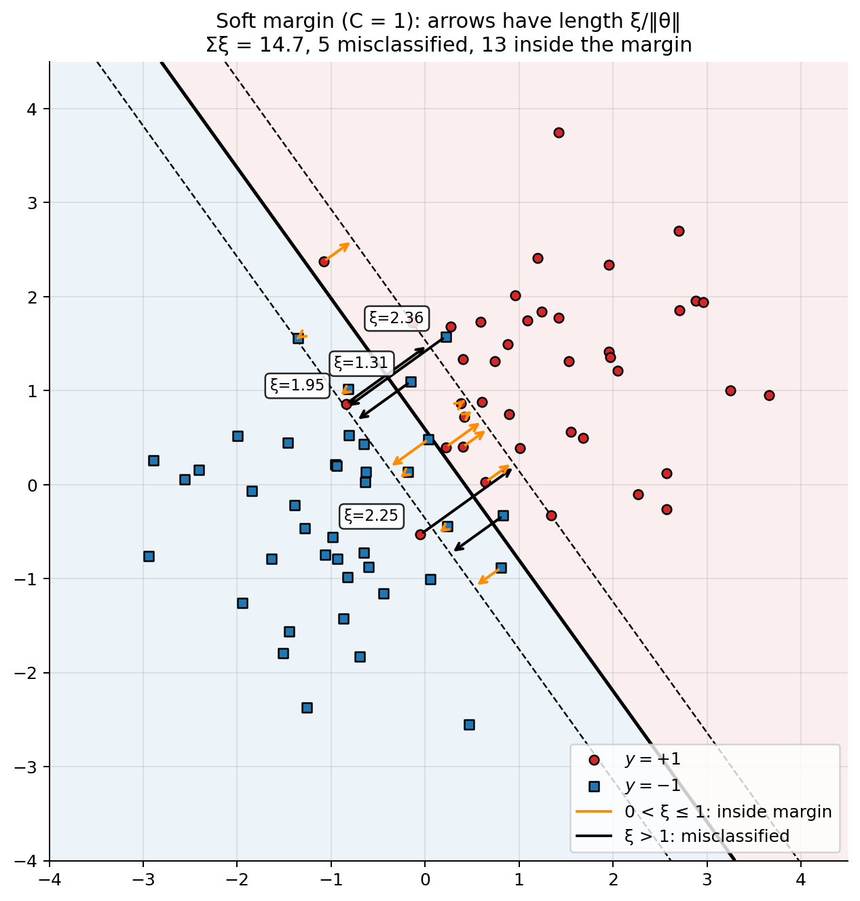
support vectors: [23 3 19] α = [0.8198 0.097 0.7229] Σ α_i y_i = -0.010. A dual by hand: two points
The smallest possible example (slide 15): \(\mathbf{x}^{(1)} = (1, 1)\) with \(y^{(1)} = +1\), and \(\mathbf{x}^{(2)} = (-1, -1)\) with \(y^{(2)} = -1\).
1 · The equality constraint. \(\sum_i\alpha_iy^{(i)} = \alpha_1 - \alpha_2 = 0\), so \(\alpha_1 = \alpha_2 = \alpha\).
2 · The dot products. \(\mathbf{x}^{(1)\top}\mathbf{x}^{(1)} = 1 + 1 = 2\), \(\;\mathbf{x}^{(2)\top}\mathbf{x}^{(2)} = 2\), \(\;\mathbf{x}^{(1)\top}\mathbf{x}^{(2)} = -1 - 1 = -2\). The double sum has four terms (\(i, j \in \{1, 2\}\)):
\[ \sum_{i,j}\alpha_i\alpha_jy^{(i)}y^{(j)}\,\mathbf{x}^{(i)\top}\mathbf{x}^{(j)} = \alpha^2\big(\underbrace{(+1)(+1)\,2}_{i=j=1} + \underbrace{(-1)(-1)\,2}_{i=j=2} + \underbrace{2\cdot(+1)(-1)(-2)}_{i\ne j\text{, twice}}\big) = \alpha^2(2 + 2 + 4) = 8\alpha^2 . \]
3 · Maximise the dual. \(D = \sum_i\alpha_i - \frac12\cdot 8\alpha^2 = 2\alpha - 4\alpha^2\). Its derivative \(2 - 8\alpha = 0\) gives \(\alpha = \frac14\) (positive, so allowed), and \(D(\frac14) = \frac12 - \frac14 = \frac14\). Then
\[ \boldsymbol{\theta} = \sum_i\alpha_iy^{(i)}\mathbf{x}^{(i)} = \tfrac14(1, 1) - \tfrac14(-1, -1) = \big(\tfrac12, \tfrac12\big). \]
4 · The intercept from a support vector (section 11): \(\theta_0 = y^{(1)} - \boldsymbol{\theta}^\top\mathbf{x}^{(1)} = 1 - \big(\tfrac12 + \tfrac12\big) = 0\).
Check. The boundary is \(\frac12x_1 + \frac12x_2 = 0\), the perpendicular bisector of the two points. The margin is \(2/\lVert\boldsymbol{\theta}\rVert = 2/\sqrt{1/2} = 2\sqrt2 = 2.83\), exactly the distance \(\lVert\mathbf{x}^{(1)} - \mathbf{x}^{(2)}\rVert = \sqrt{2^2 + 2^2} = 2.83\) between the two points ✓. Both are support vectors (\(\alpha > 0\)). The primal value is \(\frac12\lVert\boldsymbol{\theta}\rVert^2 = \frac12\cdot\frac12 = \frac14 = D(\frac14)\): zero duality gap, as section 8.3 promised.
Solving the dual with a generic solver. For small \(m\) a general-purpose optimiser is enough. We write the solver with a kernel argument \(K(\mathbf{x}, \mathbf{z})\) (for now the plain dot product) so we can reuse it with kernels in section 17, and with a box \(0 \le \alpha_i \le C\) that section 14 explains (\(C = \infty\) is the hard margin). It minimises \(-D(\boldsymbol{\alpha})\) with SLSQP, and computes \(\theta_0\) as in section 11. First, the two points:
from scipy.optimize import minimize
linear_kernel = lambda A, B: A @ B.T
def svm_dual(X, y, C=np.inf, kernel=linear_kernel):
m = len(y)
Q = (y[:, None] * y[None, :]) * kernel(X, X) # Q_ij = y_i y_j K(x_i, x_j)
res = minimize(lambda a: 0.5 * a @ Q @ a - a.sum(), # minimise −(dual objective)
np.zeros(m), jac=lambda a: Q @ a - 1, method="SLSQP",
bounds=[(0, None if np.isinf(C) else C)] * m,
constraints=[{"type": "eq", "fun": lambda a: a @ y, "jac": lambda a: y}],
options={"maxiter": 2000, "ftol": 1e-12})
alpha = np.where(res.x > 1e-6, res.x, 0.0)
on_margin = (alpha > 1e-6) & (alpha < (C - 1e-6 if np.isfinite(C) else np.inf))
theta0 = np.mean(y[on_margin] - (alpha * y) @ kernel(X, X[on_margin])) # θ0 = y_s − Σ α_i y_i K(x_i, x_s)
return alpha, theta0
X2, y2 = np.array([[1.0, 1.0], [-1.0, -1.0]]), np.array([1.0, -1.0])
alpha2, theta0_2 = svm_dual(X2, y2)
theta_2 = (alpha2 * y2) @ X2
print(f"alpha = {alpha2.round(6)}, theta = {theta_2.round(6)}, theta0 = {theta0_2:.6f}, "
f"margin = {2 / np.linalg.norm(theta_2):.4f}, primal ½‖θ‖² = {0.5 * theta_2 @ theta_2:.4f}")alpha = [0.25 0.25], theta = [0.5 0.5], theta0 = 0.000000, margin = 2.8284, primal ½‖θ‖² = 0.250011. Support vectors, the intercept and prediction
Complementary slackness (KKT condition 4) for every training point:
\[ \alpha_i\Big[y^{(i)}\big(\boldsymbol{\theta}^\top\mathbf{x}^{(i)} + \theta_0\big) - 1\Big] = 0 . \]
- A point outside the margin has a bracket \(> 0\), so its \(\alpha_i = 0\).
- If \(\alpha_i > 0\), the bracket must be \(0\): the point is on the margin. These are the support vectors.
So \(\boldsymbol{\theta} = \sum_i\alpha_iy^{(i)}\mathbf{x}^{(i)}\) is built from the support vectors alone. Delete any other point and nothing changes. (The converse need not hold: a point can lie exactly on a dashed line and still have \(\alpha_i = 0\), when the other support vectors already pin the solution down. In the slide’s figure of section 5, four points are on the dashed lines but scikit-learn only needs three of them.)
The intercept. Take a support vector \(s\). Its constraint is active, \(y^{(s)}(\boldsymbol{\theta}^\top\mathbf{x}^{(s)} + \theta_0) = 1\). Multiply both sides by \(y^{(s)}\) and use \((y^{(s)})^2 = 1\):
\[ \boldsymbol{\theta}^\top\mathbf{x}^{(s)} + \theta_0 = y^{(s)} \quad\Longrightarrow\quad \theta_0 = y^{(s)} - \boldsymbol{\theta}^\top\mathbf{x}^{(s)} = y^{(s)} - \sum_i\alpha_iy^{(i)}\,\mathbf{x}^{(i)\top}\mathbf{x}^{(s)} . \]
In exact arithmetic every support vector gives the same \(\theta_0\). A numerical solver only satisfies the KKT conditions up to a tolerance, so the values differ slightly, and the standard practice (used in svm_dual and in libsvm) is to average over all margin support vectors \(\mathcal{M}\):
\[ \theta_0 = \frac{1}{|\mathcal{M}|}\sum_{s\in\mathcal{M}}\Big(y^{(s)} - \sum_i\alpha_iy^{(i)}\,\mathbf{x}^{(i)\top}\mathbf{x}^{(s)}\Big). \]
Prediction for a new \(\mathbf{x}\): substitute \(\boldsymbol{\theta}\) into \(f(\mathbf{x}) = \boldsymbol{\theta}^\top\mathbf{x} + \theta_0\):
\[ f(\mathbf{x}) = \sum_{i\in\text{SV}}\alpha_iy^{(i)}\,\mathbf{x}^{(i)\top}\mathbf{x} + \theta_0, \qquad \hat{y} = \mathrm{sign}\,f(\mathbf{x}). \]
Again only dot products, now between the new point and the support vectors. In the two-point example, \(f(\mathbf{x}) = \frac14\,\mathbf{x}^{(1)\top}\mathbf{x} - \frac14\,\mathbf{x}^{(2)\top}\mathbf{x} + 0 = \frac12x_1 + \frac12x_2\) ✓.
Now our solver on the running data, against scikit-learn, with the individual \(\theta_0\) estimates of every support vector:
alpha, theta0_d = svm_dual(X, y)
theta_d = (alpha * y) @ X # θ = Σ α_i y_i x_i
print(f"our dual : theta = {theta_d.round(4)}, theta0 = {theta0_d:.4f}, support vectors = {np.flatnonzero(alpha)}")
print(f"sklearn : theta = {th_c.round(4)}, theta0 = {th0_c:.4f}, support vectors = {np.sort(sv_idx)}")
sv = np.flatnonzero(alpha)
theta0_each = y[sv] - X[sv] @ theta_d # one estimate per support vector
print(f"θ0 from each support vector: {theta0_each.round(6)} (spread {np.ptp(theta0_each):.1e})")
fig, axes = plt.subplots(1, 2, figsize=(14, 5))
ax = axes[0]
ax.stem(np.arange(len(y))[y > 0], alpha[y > 0], linefmt=POS, markerfmt="o", basefmt=" ")
ax.stem(np.arange(len(y))[y < 0], alpha[y < 0], linefmt=NEG, markerfmt="s", basefmt=" ")
ax.set_xlabel("training example i"); ax.set_ylabel(r"$\alpha_i$")
ax.set_title("Dual solution: α is sparse, non-zero only for support vectors")
plot_svm(axes[1], theta_d, theta0_d, X, y, "Classifier built from the dual", lim=(-3, 4.5))
for i in np.flatnonzero(alpha):
axes[1].annotate(f"α={alpha[i]:.2f}", X[i], xytext=(10, -15), textcoords="offset points", fontsize=10,
bbox=dict(boxstyle="round", fc="w", alpha=0.85))
plt.tight_layout(); plt.show()our dual : theta = [1.0303 0.7604], theta0 = -1.0011, support vectors = [ 3 19 23]
sklearn : theta = [1.0301 0.7606], theta0 = -1.0012, support vectors = [ 3 19 23]
θ0 from each support vector: [-1.001061 -1.001062 -1.001062] (spread 8.1e-07)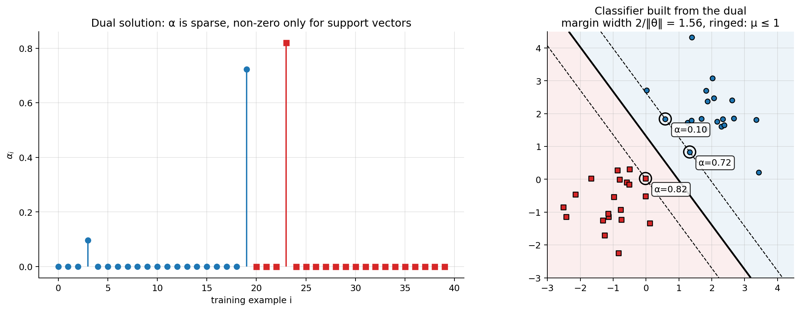
12. How the dual is solved in practice: SMO
A generic QP solver like the one above stores the \(m\times m\) matrix \(\mathbf{Q}\) and needs roughly \(O(m^3)\) operations: fine for a few hundred points, hopeless for \(10^5\). scikit-learn’s SVC calls libsvm, which uses Sequential Minimal Optimisation (SMO, Platt 1998). In words:
- Why two variables at a time. Because of \(\sum_i\alpha_iy^{(i)} = 0\), changing one \(\alpha_i\) alone would break the equality. The smallest move that keeps it changes a pair \((\alpha_i, \alpha_j)\) along the line \(y^{(i)}\alpha_i + y^{(j)}\alpha_j = \text{const}\).
- Each pair update has a closed form. Along that line the dual is a one-dimensional concave parabola, whose maximum is a formula (derived below). Clip it to the box \(0 \le \alpha \le C\) and move on.
- Which pair. The one that most violates the KKT conditions (libsvm picks the “maximal violating pair” from the gradient of \(D\)). When no pair violates them by more than a tolerance (
tol, default \(10^{-3}\) in scikit-learn), stop: by section 8.4 the point is optimal up to that tolerance. - Cost. One step needs only two rows of the kernel matrix, computed on demand and kept in a cache (
cache_size), and \(O(m)\) work to update the gradient. The number of steps grows between linearly and quadratically with \(m\) in practice, so training costs roughly \(O(m^2)\) to \(O(m^3)\) (section 23.3).
The pair update. Write \(K_{kl}\) for the kernel entry (here \(\mathbf{x}^{(k)\top}\mathbf{x}^{(l)}\)), \(f_k = f(\mathbf{x}^{(k)})\) for the current score, \(E_k = f_k - y^{(k)}\) for the current error, and \(s = y^{(i)}y^{(j)}\).
- Move \(\alpha_j\) by \(t\) and \(\alpha_i\) by \(-st\): then \(y^{(i)}(-st) + y^{(j)}t = t\,(y^{(j)} - y^{(i)}y^{(i)}y^{(j)}) = 0\), so the equality still holds.
- The gradient of the dual is \(\partial D/\partial\alpha_k = 1 - y^{(k)}\sum_l\alpha_ly^{(l)}K_{kl} = 1 - y^{(k)}(f_k - \theta_0)\).
- Along the direction \(\mathbf{d} = (d_i, d_j) = (-st, t)\), a second-order expansion of the quadratic \(D\) is exact: \(D(\boldsymbol{\alpha} + \mathbf{d}) = D(\boldsymbol{\alpha}) + \nabla D^\top\mathbf{d} - \frac12\mathbf{d}^\top\mathbf{Q}\mathbf{d}\).
- The linear term: \(\nabla D^\top\mathbf{d} = t\big(\partial_jD - s\,\partial_iD\big) = t\big(1 - s + y^{(j)}(f_i - f_j)\big) = t\,y^{(j)}(E_i - E_j)\) (expand, use \(s\,y^{(i)} = y^{(j)}\) and \(y^{(j)}y^{(j)} = 1\)).
- The quadratic term: \(\mathbf{d}^\top\mathbf{Q}\mathbf{d} = t^2\big(Q_{jj} + Q_{ii} - 2sQ_{ij}\big) = t^2\big(K_{ii} + K_{jj} - 2K_{ij}\big) = \eta\,t^2\), using \(Q_{ij} = sK_{ij}\) and \(s^2 = 1\). Note \(\eta = \lVert\mathbf{x}^{(i)} - \mathbf{x}^{(j)}\rVert^2 \ge 0\).
- Maximise \(t\,y^{(j)}(E_i - E_j) - \frac12\eta t^2\) over \(t\): derivative zero gives
\[ t^* = \frac{y^{(j)}(E_i - E_j)}{\eta}, \qquad \alpha_j^{\text{new}} = \mathrm{clip}\big(\alpha_j + t^*\big), \qquad \alpha_i^{\text{new}} = \alpha_i - s\,(\alpha_j^{\text{new}} - \alpha_j), \]
where “clip” keeps both multipliers inside \([0, C]\) along the line. Everything needed is the two errors and three kernel entries.
Part III · Soft margin
13. Soft margin: slack variables and \(C\)
Real data overlap, and then no \(\boldsymbol{\theta}\) satisfies all the constraints \(y^{(i)}f(\mathbf{x}^{(i)}) \ge 1\): the hard-margin problem is infeasible. Allow each point a slack \(\xi^{(i)}\ge0\) and pay for it (slide 22):
\[ \boxed{\min_{\boldsymbol{\theta},\theta_0,\boldsymbol{\xi}}\;\frac12\lVert\boldsymbol{\theta}\rVert^2 + C\sum_{i=1}^m\xi^{(i)} \quad\text{s.t.}\quad y^{(i)}(\boldsymbol{\theta}^\top\mathbf{x}^{(i)} + \theta_0) \ge 1 - \xi^{(i)},\quad \xi^{(i)}\ge0} \]
Geometrically (step 2), \(\xi^{(i)}/\lVert\boldsymbol{\theta}\rVert\) is how far point \(i\) is on the wrong side of its own dashed line (arrows in the figure below):
| slack | meaning |
|---|---|
| \(\xi^{(i)} = 0\) | on the correct side, outside or on the margin |
| \(0 < \xi^{(i)} \le 1\) | correct side but inside the margin |
| \(\xi^{(i)} > 1\) | misclassified |
\(\sum_i\xi^{(i)}\) is an upper bound on the number of training mistakes (a misclassified point has \(\mu^{(i)} < 0\), so \(\xi^{(i)} \ge 1 - \mu^{(i)} > 1\)). \(C>0\) is the regularisation parameter: it trades margin width against violations.
- Large \(C\): violations are expensive → narrow margin, fits the training data tightly (low bias, high variance). \(C\to\infty\) recovers the hard margin.
- Small \(C\): wide margin, many violations tolerated (more regularisation).
Try it. 50 overlapping points (the slide’s data). Slide \(C\) on a log scale: the circled points are the support vectors (\(\alpha_i > 0\)). At \(C = 0.01\) the margin is wide (4.55), 39 points lie inside it and 40 of the 50 points are support vectors; at \(C = 1\) the margin is 1.39 with 8 support vectors; at \(C = 100\) it shrinks to 0.33 with 6. In all three, one point stays misclassified: no straight line separates these data. The widget treats \(\theta_0\) as the weight of a constant feature (as LinearSVC does), so \(\theta_0\) is lightly penalised too; its numbers are therefore close to, but not exactly, those of SVC.
The same on our own overlapping data, with the slack of every violator drawn as an arrow:
Xo = np.r_[rng.normal([1.2, 1.2], 1.0, (40, 2)), rng.normal([-0.8, -0.6], 1.0, (40, 2))]
yo = np.r_[np.ones(40), -np.ones(40)]
lim_o = (-4, 4.5)
soft = SVC(kernel="linear", C=1).fit(Xo, yo)
th, th0 = soft.coef_[0], soft.intercept_[0]
nrm = np.linalg.norm(th); u = th / nrm
mu_o = yo * (Xo @ th + th0); xi = np.maximum(0, 1 - mu_o)
fig, ax = plt.subplots(figsize=(7.5, 7.5))
draw_boundary(ax, th, th0, lim_o); scatter_classes(ax, Xo, yo)
for i in np.flatnonzero(xi > 1e-6):
target = Xo[i] + yo[i] * xi[i] / nrm * u # the point moved onto its own dashed line
col = "darkorange" if xi[i] <= 1 else "k"
ax.annotate("", xy=target, xytext=Xo[i], arrowprops=dict(arrowstyle="->", color=col, lw=1.6))
for i in np.argsort(xi)[-4:]:
ax.annotate(f"ξ={xi[i]:.2f}", Xo[i], xytext=(-45, 8), textcoords="offset points", fontsize=9,
bbox=dict(boxstyle="round", fc="w", alpha=0.85))
ax.plot([], [], c="darkorange", label="0 < ξ ≤ 1: inside margin"); ax.plot([], [], c="k", label="ξ > 1: misclassified")
ax.legend(loc="lower right")
ax.set_title(f"Soft margin (C = 1): arrows have length ξ/‖θ‖\nΣξ = {xi.sum():.1f}, "
f"{(xi > 1).sum()} misclassified, {((xi > 0) & (xi <= 1)).sum()} inside the margin")
plt.tight_layout(); plt.show()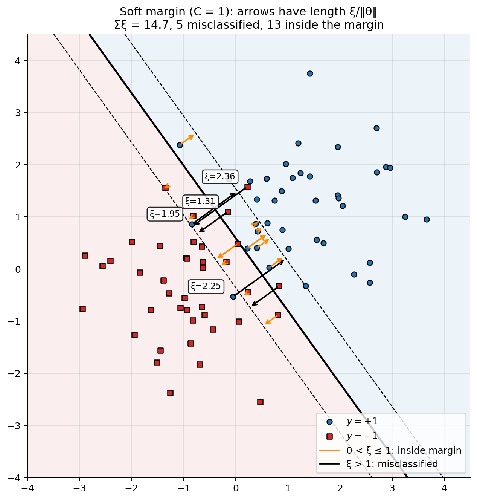
The effect of \(C\) on overlapping data
fig, axes = plt.subplots(1, 3, figsize=(17, 5.6))
for ax, C in zip(axes, [100, 1, 0.01]):
s = SVC(kernel="linear", C=C).fit(Xo, yo)
plot_svm(ax, s.coef_[0], s.intercept_[0], Xo, yo, f"C = {C} ({len(s.support_)} support vectors)", lim=lim_o)
plt.tight_layout(); plt.show()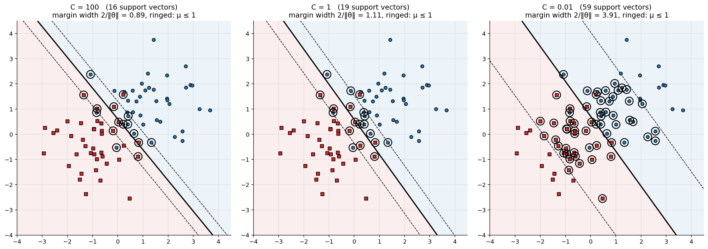
14. The soft-margin dual and the three kinds of points
Same recipe as section 9, with a second multiplier \(\nu_i \ge 0\) for each constraint \(\xi^{(i)} \ge 0\) (slide 23). Writing the constraint as \(y^{(i)}f(\mathbf{x}^{(i)}) - 1 + \xi^{(i)} \ge 0\):
\[ \mathcal{L} = \frac12\lVert\boldsymbol{\theta}\rVert^2 + C\sum_i\xi^{(i)} - \sum_i\alpha_i\Big[y^{(i)}\big(\boldsymbol{\theta}^\top\mathbf{x}^{(i)} + \theta_0\big) - 1 + \xi^{(i)}\Big] - \sum_i\nu_i\,\xi^{(i)} . \]
Stationarity. The derivatives with respect to \(\boldsymbol{\theta}\) and \(\theta_0\) are exactly those of section 9 (the new terms contain neither), so again \(\boldsymbol{\theta} = \sum_i\alpha_iy^{(i)}\mathbf{x}^{(i)}\) and \(\sum_i\alpha_iy^{(i)} = 0\). The new condition, one per slack:
\[ \frac{\partial\mathcal{L}}{\partial\xi^{(i)}} = C - \alpha_i - \nu_i = 0 \quad\Longrightarrow\quad \alpha_i = C - \nu_i \le C \qquad(\text{because } \nu_i \ge 0). \]
Substitute back. Collect every term containing \(\xi^{(i)}\): \(C\xi^{(i)} - \alpha_i\xi^{(i)} - \nu_i\xi^{(i)} = (C - \alpha_i - \nu_i)\,\xi^{(i)} = 0\). The slacks disappear, what remains is exactly the hard-margin Lagrangian, and so the dual is exactly the hard-margin dual with one change:
\[ \boxed{\max_{\boldsymbol{\alpha}}\ \sum_i\alpha_i - \frac12\sum_{i,j}\alpha_i\alpha_jy^{(i)}y^{(j)}\,\mathbf{x}^{(i)\top}\mathbf{x}^{(j)} \qquad\text{s.t.}\quad 0 \le \alpha_i \le C,\quad \sum_i\alpha_iy^{(i)} = 0} \]
(\(\nu_i\) is gone too: it only had to be \(\ge 0\), which is the same as \(\alpha_i \le C\).)
Reading the multipliers. With \(\mu_i = y^{(i)}f(\mathbf{x}^{(i)})\), complementary slackness now says \(\alpha_i\,(\mu_i - 1 + \xi^{(i)}) = 0\) and \(\nu_i\,\xi^{(i)} = 0\), with \(\nu_i = C - \alpha_i\):
| multiplier | follows from KKT | where the point is |
|---|---|---|
| \(\alpha_i = 0\) | \(\nu_i = C > 0 \Rightarrow \xi^{(i)} = 0\), so \(\mu_i \ge 1\) | on the correct side of its margin line: no influence |
| \(0 < \alpha_i < C\) | \(\nu_i > 0 \Rightarrow \xi^{(i)} = 0\), and \(\alpha_i > 0 \Rightarrow \mu_i = 1 - \xi^{(i)} = 1\) | exactly on the margin |
| \(\alpha_i = C\) | \(\nu_i = 0\), \(\xi^{(i)} \ge 0\) free, and \(\mu_i = 1 - \xi^{(i)} \le 1\) | inside the margin, or misclassified if \(\xi^{(i)} > 1\) |
Read backwards: a point with \(\mu_i > 1\) must have \(\alpha_i = 0\), and a point with \(\mu_i < 1\) has \(\xi^{(i)} = 1 - \mu_i > 0\), hence \(\nu_i = 0\) and \(\alpha_i = C\). The support vectors are all the points with \(\alpha_i > 0\): on, inside or beyond the margin (the circled points of the widget). Every support vector inside the margin pulls with the maximum force \(C\), which is why \(C\) controls how much a single point can move the boundary.
The intercept comes from the margin support vectors \(\mathcal{M} = \{s : 0 < \alpha_s < C\}\), the only ones known to satisfy \(\mu_s = 1\) exactly: the same average as in section 11. (If no multiplier is strictly between \(0\) and \(C\), the KKT conditions only bracket \(\theta_0\) between a lower and an upper bound, and libsvm takes the midpoint.)
A numerical check of every KKT condition on the \(C = 1\) soft-margin SVM of section 13, fitted by scikit-learn: stationarity, feasibility and complementary slackness hold to the solver’s tolerance, the points split into the three kinds of the table, and the primal and dual objective values agree (strong duality). The code also evaluates the dual at random feasible \(\boldsymbol{\alpha}\) near the optimum and the primal at random \((\boldsymbol{\theta}, \theta_0)\): every dual value is below every primal value (weak duality).
C = 1.0
kkt = SVC(kernel="linear", C=C, tol=1e-8).fit(Xo, yo)
a_k = np.zeros(len(yo)); a_k[kkt.support_] = np.abs(kkt.dual_coef_[0]) # α_i (0 for non-support vectors)
th_k, th0_k = kkt.coef_[0], kkt.intercept_[0]
mu_k = yo * (Xo @ th_k + th0_k); xi_k = np.maximum(0, 1 - mu_k); nu_k = C - a_k
print(f"stationarity : max|θ − Σ α y x| = {np.abs(th_k - (a_k * yo) @ Xo).max():.1e}, |Σ α y| = {abs(a_k @ yo):.1e}")
print(f"feasibility : min ξ = {xi_k.min():.1f}, α in [{a_k.min():.1f}, {a_k.max():.1f}], min ν = {nu_k.min():.1f}")
print(f"compl. slack : max|α(μ − 1 + ξ)| = {np.abs(a_k * (mu_k - 1 + xi_k)).max():.1e}, max|ν ξ| = {np.abs(nu_k * xi_k).max():.1e}")
tol = 1e-6
print(f"points: α = 0: {(a_k < tol).sum()}, 0 < α < C: {((a_k > tol) & (a_k < C - tol)).sum()}, α = C: {(a_k > C - tol).sum()}")
Q_o = (yo[:, None] * yo[None, :]) * (Xo @ Xo.T)
dual = lambda a: a.sum() - 0.5 * a @ Q_o @ a
primal = lambda t, t0: 0.5 * t @ t + C * np.maximum(0, 1 - yo * (Xo @ t + t0)).sum()
print(f"primal = {primal(th_k, th0_k):.6f}, dual = {dual(a_k):.6f}, gap = {primal(th_k, th0_k) - dual(a_k):.1e}")
rng_d = np.random.default_rng(0)
D_rand, P_rand = [], []
for _ in range(500):
a = np.clip(a_k + rng_d.normal(0, 0.02, len(yo)), 0, C) # a random point of the box …
sp, sn = a[yo > 0].sum(), a[yo < 0].sum() # … rescaled so that Σ α y = 0
a[yo > 0 if sp > sn else yo < 0] *= min(sp, sn) / max(sp, sn)
D_rand.append(dual(a))
P_rand.append(primal(th_k + rng_d.normal(0, 0.05, 2), th0_k + rng_d.normal(0, 0.05)))
print(f"500 random dual-feasible α: max D = {max(D_rand):.3f} ≤ 500 random θ: min primal = {min(P_rand):.3f}")stationarity : max|θ − Σ α y x| = 4.4e-16, |Σ α y| = 0.0e+00
feasibility : min ξ = 0.0, α in [0.0, 1.0], min ν = 0.0
compl. slack : max|α(μ − 1 + ξ)| = 8.9e-08, max|ν ξ| = 2.5e-08
points: α = 0: 61, 0 < α < C: 2, α = C: 17
primal = 16.366441, dual = 16.366441, gap = 1.1e-07
500 random dual-feasible α: max D = 15.547 ≤ 500 random θ: min primal = 16.370Part IV · Kernels
15. Kernels: lifting the data
The problem. Some data cannot be separated by any hyperplane. The fix: map every point to a richer feature space, \(\mathbf{x}\mapsto\phi(\mathbf{x})\), where a hyperplane does separate them, and run the linear SVM there. A hyperplane in \(\phi\)-space is a curved boundary back in \(\mathbf{x}\)-space.
The simplest example is 1-D (slide 17). The \(+1\) class is in the middle and \(-1\) on both sides, so no single threshold works. Add the feature \(x^2\): in the plane \((x, x^2)\) the points lie on a parabola and a horizontal line separates them. Back on the original axis, that line becomes two thresholds.
x1d = np.r_[rng.uniform(-1, 1, 14), rng.uniform(1.6, 3, 8), rng.uniform(-3, -1.6, 8)]
y1d = np.r_[np.ones(14), -np.ones(16)]
cut = (np.abs(x1d[y1d > 0]).max() ** 2 + np.abs(x1d[y1d < 0]).min() ** 2) / 2 # midway in x²
fig, axes = plt.subplots(1, 3, figsize=(17, 4.2), gridspec_kw={"width_ratios": [1, 1.1, 1]})
def dots(ax, xx, yy):
ax.scatter(xx[y1d > 0], yy[y1d > 0], c=POS, marker="o", edgecolor="k", s=45, zorder=3)
ax.scatter(xx[y1d < 0], yy[y1d < 0], c=NEG, marker="s", edgecolor="k", s=45, zorder=3)
dots(axes[0], x1d, 0 * x1d); axes[0].set_yticks([]); axes[0].set_xlabel("x")
axes[0].set_title("1-D: no single threshold separates the classes")
ax = axes[1]; xx = np.linspace(-3.2, 3.2, 200)
ax.plot(xx, xx ** 2, c="gray", lw=0.8); dots(ax, x1d, x1d ** 2)
ax.axhline(cut, c="k", lw=2); ax.fill_between(xx, cut, 11, color=NEG, alpha=0.08); ax.fill_between(xx, -0.5, cut, color=POS, alpha=0.08)
ax.set_ylim(-0.5, 10); ax.set_xlabel("x"); ax.set_ylabel("x²")
ax.set_title(r"lifted: $\phi(x) = (x, x^2)$. A line separates them")
ax = axes[2]; r = np.sqrt(cut)
ax.axvspan(-r, r, color=POS, alpha=0.1); ax.axvline(-r, c="k", lw=2); ax.axvline(r, c="k", lw=2)
dots(ax, x1d, 0 * x1d); ax.set_yticks([]); ax.set_xlabel("x")
ax.set_title(f"back in 1-D: the line x² = {cut:.2f} is two thresholds x = ±{r:.2f}")
plt.tight_layout(); plt.show()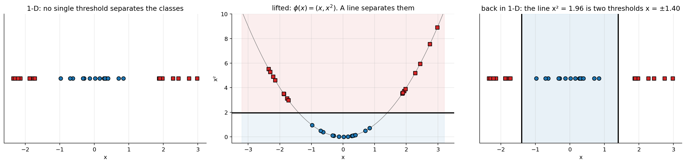
The same trick in 2-D (slide 18): one class in the middle, the other on a ring around it. No line separates them, but a third coordinate that measures closeness to the origin does. The slide uses
\[ \phi(\mathbf{x}) = \big(x_1,\ x_2,\ e^{-(x_1^2+x_2^2)}\big)\in\mathbb{R}^3, \qquad \phi(\mathbf{x})^\top\phi(\mathbf{z}) = x_1z_1 + x_2z_2 + e^{-(x_1^2+x_2^2)}\,e^{-(z_1^2+z_2^2)} . \]
- The flat plane \(x_3 = 0.72\) in \(\mathbb{R}^3\) is, back in \(\mathbb{R}^2\), the set where \(e^{-(x_1^2+x_2^2)} = 0.72\). Take logs: \(x_1^2 + x_2^2 = -\ln 0.72 = 0.33\), a circle of radius \(\sqrt{0.33} = 0.57\) (green in the figure).
- The dot product in \(\mathbb{R}^3\) can be computed directly from the 2-D vectors, as the formula shows. We never need to build \(\phi(\mathbf{x})\) itself: that is the kernel trick (section 16).
Below, the same idea on scikit-learn’s make_circles with the simpler third feature \(z = x_1^2 + x_2^2\) (squared distance to the origin). The plane \(\theta_1x_1 + \theta_2x_2 + \theta_3(x_1^2+x_2^2) + \theta_0 = 0\) is a circle in the original plane.
import math
print(f"slide 18: −ln 0.72 = {-math.log(0.72):.4f}, radius = {math.sqrt(-math.log(0.72)):.4f}")
from sklearn.datasets import make_circles
Xc, yc = make_circles(n_samples=200, noise=0.1, factor=0.4, random_state=0)
yc = np.where(yc == 1, 1.0, -1.0) # inner circle = +1
Phi = np.c_[Xc, (Xc ** 2).sum(1)] # φ(x) = (x1, x2, x1² + x2²)
lift = SVC(kernel="linear", C=10).fit(Phi, yc)
w, w0 = lift.coef_[0], lift.intercept_[0]
fig = plt.figure(figsize=(15, 6))
ax = fig.add_subplot(1, 2, 1, projection="3d")
ax.scatter(*Phi[yc > 0].T, c=POS, marker="o", edgecolor="k", s=18)
ax.scatter(*Phi[yc < 0].T, c=NEG, marker="s", edgecolor="k", s=18)
P1, P2 = np.meshgrid(np.linspace(-1.3, 1.3, 20), np.linspace(-1.3, 1.3, 20))
ax.plot_surface(P1, P2, -(w[0] * P1 + w[1] * P2 + w0) / w[2], color="k", alpha=0.15)
ax.set_xlabel("$x_1$"); ax.set_ylabel("$x_2$"); ax.set_zlabel("$x_1^2+x_2^2$"); ax.view_init(elev=12, azim=-60)
ax.set_title("feature space: a plane separates the classes")
ax = fig.add_subplot(1, 2, 2)
lim = (-1.4, 1.4); g1, g2 = np.meshgrid(np.linspace(*lim, 300), np.linspace(*lim, 300))
F = w[0] * g1 + w[1] * g2 + w[2] * (g1 ** 2 + g2 ** 2) + w0
ax.contourf(g1, g2, F, levels=[-1e9, 0, 1e9], colors=[NEG, POS], alpha=0.1)
ax.contour(g1, g2, F, levels=[-1, 0, 1], colors="k", linestyles=["--", "-", "--"], linewidths=[1, 2, 1])
scatter_classes(ax, Xc, yc, s=18); ax.set_xlim(lim); ax.set_ylim(lim); ax.set_aspect("equal")
ax.set_title(f"back in the plane: the plane is a circle (train acc {lift.score(Phi, yc):.2f})")
plt.tight_layout(); plt.show()slide 18: −ln 0.72 = 0.3285, radius = 0.5732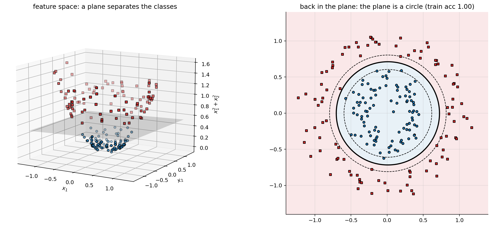
16. The kernel trick and the polynomial kernel
Never compute \(\phi\). Look at sections 9 and 11 again. In the dual objective and in the prediction \(f(\mathbf{x}) = \sum_i\alpha_iy^{(i)}\,\mathbf{x}^{(i)\top}\mathbf{x} + \theta_0\), the data appear only through dot products. After the mapping these become \(\phi(\mathbf{x}^{(i)})^\top\phi(\mathbf{x}^{(j)})\). If a function \(K\) computes that dot product directly,
\[ \boxed{K(\mathbf{x}, \mathbf{z}) = \phi(\mathbf{x})^\top\phi(\mathbf{z})}, \]
we just replace every \(\mathbf{x}^{(i)\top}\mathbf{x}^{(j)}\) by \(K(\mathbf{x}^{(i)}, \mathbf{x}^{(j)})\):
\[ \max_{\boldsymbol{\alpha}}\ \sum_i\alpha_i - \frac12\sum_{i,j}\alpha_i\alpha_jy^{(i)}y^{(j)}K(\mathbf{x}^{(i)},\mathbf{x}^{(j)}) \quad\text{s.t. } 0\le\alpha_i\le C,\ \sum_i\alpha_iy^{(i)}=0, \qquad f(\mathbf{x}) = \sum_{i\in\text{SV}}\alpha_iy^{(i)}K(\mathbf{x}^{(i)},\mathbf{x}) + \theta_0 . \]
This is a linear SVM in \(\phi\)-space, at the cost of the original space: we compute \(K\), never \(\phi(\mathbf{x})\) (and never \(\boldsymbol{\theta}\), which lives in \(\phi\)-space; the prediction formula does not need it). The intercept is computed as before with \(K\) in place of the dot product.
Common kernels (slide 19):
- linear: \(K(\mathbf{x},\mathbf{z}) = \mathbf{x}^\top\mathbf{z}\) (the plain SVM);
- polynomial: \(K(\mathbf{x},\mathbf{z}) = (\mathbf{x}^\top\mathbf{z} + c)^d\), with \(c \ge 0\) and degree \(d\);
- RBF (Gaussian): \(K(\mathbf{x},\mathbf{z}) = \exp\big(-\gamma\lVert\mathbf{x}-\mathbf{z}\rVert^2\big)\), with \(\gamma = \frac{1}{2\sigma^2} > 0\) (section 17).
Why the polynomial kernel works (2-D, \(c = 1\), \(d = 2\)). Expand the square:
\[ (\mathbf{x}^\top\mathbf{z} + 1)^2 = (x_1z_1 + x_2z_2 + 1)^2 = x_1^2z_1^2 + x_2^2z_2^2 + 2x_1x_2z_1z_2 + 2x_1z_1 + 2x_2z_2 + 1 . \]
Each term is a product of the same monomial of \(\mathbf{x}\) and of \(\mathbf{z}\) (with the \(2\) split as \(\sqrt2\cdot\sqrt2\)), so the sum is \(\phi(\mathbf{x})^\top\phi(\mathbf{z})\) with
\[ \phi(\mathbf{x}) = \big(1,\ \sqrt2x_1,\ \sqrt2x_2,\ x_1^2,\ x_2^2,\ \sqrt2x_1x_2\big): \]
all monomials of degree ≤ 2. Check with numbers (slide 19): \(\mathbf{x} = (1, 2)\), \(\mathbf{z} = (3, 1)\). Kernel: \((3 + 2 + 1)^2 = 36\). Explicitly, \(\phi(\mathbf{x}) = (1, \sqrt2, 2\sqrt2, 1, 4, 2\sqrt2)\) and \(\phi(\mathbf{z}) = (1, 3\sqrt2, \sqrt2, 9, 1, 3\sqrt2)\), and the coordinate products are \(1 + 6 + 4 + 9 + 4 + 12 = 36\) ✓.
The saving. The kernel costs one \(n\)-dimensional dot product. \(\phi\) has one coordinate per monomial of degree ≤ \(d\) in \(n\) variables, and there are \(\binom{n+d}{d}\) of them. For \(n = 100\) features and degree 3 that is \(\binom{103}{3} = \frac{103\cdot102\cdot101}{6} = 176{,}851\) coordinates, while the kernel still costs one 100-D dot product.
def phi2(v): # explicit feature map of (x·z + 1)² in 2-D
x1, x2 = v
return np.array([1, np.sqrt(2) * x1, np.sqrt(2) * x2, x1 ** 2, x2 ** 2, np.sqrt(2) * x1 * x2])
xk, zk = np.array([1.0, 2.0]), np.array([3.0, 1.0])
print(f"slide 19: (x·z + 1)² = {(xk @ zk + 1) ** 2:.0f}, φ(x)·φ(z) = {phi2(xk) @ phi2(zk):.6f}")
a, b = rng.normal(size=2), rng.normal(size=2)
print(f"random : (a·b + 1)² = {(a @ b + 1) ** 2:.6f}, φ(a)·φ(b) = {phi2(a) @ phi2(b):.6f}")
print(f"monomials of degree ≤ 3 in 100 variables: C(103, 3) = {math.comb(103, 3):,}")slide 19: (x·z + 1)² = 36, φ(x)·φ(z) = 36.000000
random : (a·b + 1)² = 2.606880, φ(a)·φ(b) = 2.606880
monomials of degree ≤ 3 in 100 variables: C(103, 3) = 176,85117. The RBF kernel
\[ K(\mathbf{x}, \mathbf{z}) = \exp\big(-\gamma\lVert\mathbf{x} - \mathbf{z}\rVert^2\big), \qquad \gamma = \frac{1}{2\sigma^2}. \]
- \(K(\mathbf{x}, \mathbf{x}) = e^0 = 1\), \(\;0 < K \le 1\), and \(K \to 0\) as the points move apart: it is a similarity, \(1\) for identical points and \(\approx 0\) for points much farther apart than \(\sigma\).
- \(\lVert\phi(\mathbf{x})\rVert^2 = K(\mathbf{x}, \mathbf{x}) = 1\): all points are mapped onto the unit sphere of the feature space.
- scikit-learn’s default
gamma="scale"is \(\gamma = 1/(n\cdot\mathrm{Var}(\mathbf{X}))\), where \(\mathrm{Var}(\mathbf{X})\) is the variance of all entries of the training matrix: for standardised features, \(\gamma = 1/n\).
Its \(\phi\) is infinite-dimensional. In 1-D:
\[ \begin{aligned} e^{-\gamma(x-z)^2} &= e^{-\gamma x^2}\,e^{-\gamma z^2}\,e^{2\gamma xz} && (x - z)^2 = x^2 - 2xz + z^2\\ &= e^{-\gamma x^2}\,e^{-\gamma z^2}\sum_{k=0}^{\infty}\frac{(2\gamma xz)^k}{k!} && \text{Taylor series } e^u = \textstyle\sum_k u^k/k!\\ &= \sum_{k=0}^{\infty}\underbrace{\Big(e^{-\gamma x^2}\sqrt{\tfrac{(2\gamma)^k}{k!}}\,x^k\Big)}_{\phi_k(x)}\underbrace{\Big(e^{-\gamma z^2}\sqrt{\tfrac{(2\gamma)^k}{k!}}\,z^k\Big)}_{\phi_k(z)} && \text{split each term in two equal factors.} \end{aligned} \]
So \(K(x, z) = \sum_{k\ge0}\phi_k(x)\phi_k(z)\): a dot product with one coordinate for every power \(x^k\), infinitely many in all. The code truncates the sum and watches it converge to the kernel.
Reading the prediction. It is easier from the prediction formula: \(K(\mathbf{x}^{(i)}, \mathbf{x})\) is a bump centred on \(\mathbf{x}^{(i)}\), so \(f(\mathbf{x})\) is a sum of Gaussian bumps, one centred on each support vector, pointing up for \(+1\) and down for \(-1\), with height \(\alpha_i\). \(\gamma\) sets their width.
Try it (slide 20). Eight support vectors with all \(\alpha_i = 1\) and \(\theta_0 = 0\), to show the shape only. At small \(\gamma\) (the left end of the slider, \(\gamma = 0.03\)) the bumps are wide and merge into a smooth \(f\); at large \(\gamma\) (\(\gamma = 10^{1.3} \approx 20\)) each support vector has its own narrow bump, and between them \(f\) falls back to \(0\): the model has memorised the training points.
Now a real RBF SVM on the 1-D data of section 15, solved with our dual solver of section 10 (only the kernel changed) and compared with scikit-learn:
from math import factorial
g_1d, xa, za = 0.5, 0.7, -1.2
phi_k = lambda x, K: np.array([np.exp(-g_1d * x * x) * np.sqrt((2 * g_1d) ** k / factorial(k)) * x ** k for k in range(K)])
print(f"exp(−γ(x−z)²) = {np.exp(-g_1d * (xa - za) ** 2):.8f}; truncated Σ φ_k(x)φ_k(z) with",
", ".join(f"{K} terms: {phi_k(xa, K) @ phi_k(za, K):.8f}" for K in (1, 3, 5, 10, 20)))
# RBF kernel SVM on the 1-D data, solved with OUR dual solver (only the kernel changed)
gamma = 1.0
rbf = lambda A, B: np.exp(-gamma * ((A[:, None, :] - B[None, :, :]) ** 2).sum(-1))
X1 = x1d[:, None]
alpha1, theta0_1 = svm_dual(X1, y1d, C=10, kernel=rbf)
xx = np.linspace(-3.5, 3.5, 600)[:, None]
bumps = (alpha1 * y1d)[:, None] * rbf(X1, xx) # one row per training point
f1 = bumps.sum(0) + theta0_1
sk1 = SVC(kernel="rbf", gamma=gamma, C=10).fit(X1, y1d)
print(f"max |f_ours − f_sklearn| on the grid: {np.abs(f1 - sk1.decision_function(xx)).max():.2e}")
fig, ax = plt.subplots(figsize=(12, 4.8))
for i in np.flatnonzero(alpha1):
ax.plot(xx, bumps[i], c=POS if y1d[i] > 0 else NEG, lw=1, alpha=0.8)
ax.plot(xx, f1, "k", lw=2.5, label=r"$f(x)=\sum_i\alpha_iy^{(i)}K(x^{(i)},x)+\theta_0$")
ax.axhline(0, c="gray", lw=0.8); ax.fill_between(xx[:, 0], -3, 3, where=f1 > 0, color=POS, alpha=0.07)
ax.scatter(x1d[y1d > 0], 0 * x1d[y1d > 0], c=POS, edgecolor="k", s=45, zorder=4)
ax.scatter(x1d[y1d < 0], 0 * x1d[y1d < 0], c=NEG, marker="s", edgecolor="k", s=45, zorder=4)
ax.scatter(x1d[alpha1 > 0], 0 * x1d[alpha1 > 0], s=180, facecolors="none", edgecolors="k", lw=1.5, zorder=5)
ax.set_ylim(-2.6, 2.6); ax.set_xlabel("x"); ax.legend(loc="upper right")
ax.set_title(f"RBF kernel (γ = {gamma}): f is a sum of Gaussian bumps on the {int((alpha1 > 0).sum())} support vectors "
"(ringed); blue shading = predicted +1")
plt.tight_layout(); plt.show()exp(−γ(x−z)²) = 0.16447446; truncated Σ φ_k(x)φ_k(z) with 1 terms: 0.38098320, 3 terms: 0.19536818, 5 terms: 0.16563650, 10 terms: 0.16447444, 20 terms: 0.16447446
max |f_ours − f_sklearn| on the grid: 4.93e-04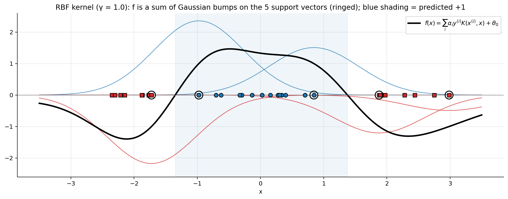
The width of the bumps is the key hyperparameter. On the circles data: a linear kernel fails; small \(\gamma\) gives wide bumps and a smooth boundary (it can underfit); large \(\gamma\) gives narrow bumps around each point, which memorise the training set (overfit, almost every point becomes a support vector).
g1, g2 = np.meshgrid(np.linspace(-1.5, 1.5, 300), np.linspace(-1.5, 1.5, 300)); G = np.c_[g1.ravel(), g2.ravel()]
fig, axes = plt.subplots(1, 4, figsize=(19, 4.8))
for ax, (kern, kw, name) in zip(axes, [("linear", {}, "linear"), ("rbf", {"gamma": 0.1}, "RBF, γ=0.1"),
("rbf", {"gamma": 2}, "RBF, γ=2"), ("rbf", {"gamma": 100}, "RBF, γ=100")]):
s = SVC(kernel=kern, C=1, **kw).fit(Xc, yc); F = s.decision_function(G).reshape(g1.shape)
ax.contourf(g1, g2, F, levels=[-1e9, 0, 1e9], colors=[NEG, POS], alpha=0.1)
ax.contour(g1, g2, F, levels=[-1, 0, 1], colors="k", linestyles=["--", "-", "--"])
scatter_classes(ax, Xc, yc, s=12); ax.set_aspect("equal")
ax.set_title(f"{name}: train acc {s.score(Xc, yc):.2f}, {len(s.support_)} SVs")
plt.tight_layout(); plt.show()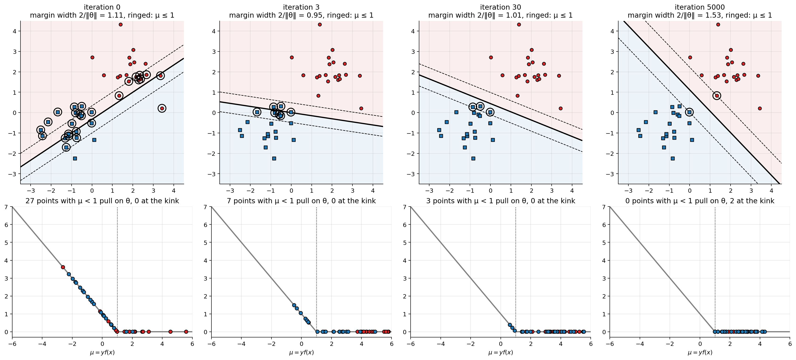
Tune \(C\) and \(\gamma\) together by cross-validation on a log grid (section 23.1).
18. Which functions are kernels? Mercer’s condition
A function \(K\) is a valid kernel only if it really is a dot product \(\phi(\mathbf{x})^\top\phi(\mathbf{z})\) in some feature space. Checking that by finding \(\phi\) is usually impossible. Mercer’s condition gives a test on the kernel (Gram) matrix \(\mathbf{K}\) of any finite set of points \(\mathbf{x}^{(1)},\dots,\mathbf{x}^{(m)}\), with entries \(K_{ij} = K(\mathbf{x}^{(i)}, \mathbf{x}^{(j)})\) (slide 21):
\(K\) is a valid kernel if and only if \(K\) is symmetric and, for every finite set of points, \(\mathbf{K}\) is positive semi-definite (PSD): \(\mathbf{v}^\top\mathbf{K}\mathbf{v} \ge 0\) for every \(\mathbf{v}\in\mathbb{R}^m\) (equivalently: all eigenvalues of \(\mathbf{K}\) are \(\ge 0\)).
Proof of the easy direction (a real feature map gives a PSD matrix). If \(K_{ij} = \phi(\mathbf{x}^{(i)})^\top\phi(\mathbf{x}^{(j)})\), then for any \(\mathbf{v}\)
\[ \mathbf{v}^\top\mathbf{K}\mathbf{v} = \sum_{i,j}v_iv_j\,\phi(\mathbf{x}^{(i)})^\top\phi(\mathbf{x}^{(j)}) = \Big(\sum_iv_i\phi(\mathbf{x}^{(i)})\Big)^{\!\top}\Big(\sum_jv_j\phi(\mathbf{x}^{(j)})\Big) = \Big\lVert\sum_iv_i\phi(\mathbf{x}^{(i)})\Big\rVert^2 \ge 0 . \quad\blacksquare \]
(The second step is the bilinearity of the dot product: a double sum of products is the product of two sums.)
Why it matters for the SVM. The dual maximises \(\mathbf{1}^\top\boldsymbol{\alpha} - \frac12\boldsymbol{\alpha}^\top\mathbf{Q}\boldsymbol{\alpha}\) with \(Q_{ij} = y^{(i)}y^{(j)}K_{ij}\). For any \(\mathbf{v}\), \(\mathbf{v}^\top\mathbf{Q}\mathbf{v} = \sum_{i,j}(y^{(i)}v_i)K_{ij}(y^{(j)}v_j) = \mathbf{u}^\top\mathbf{K}\mathbf{u}\) with \(u_i = y^{(i)}v_i\). So a PSD \(\mathbf{K}\) gives a PSD \(\mathbf{Q}\), a concave dual, a convex QP and one global optimum. If \(\mathbf{K}\) has a negative eigenvalue, along that direction the dual is a parabola opening upwards: the problem is no longer convex, the solver can stop at a local optimum that depends on where it started, and the geometric picture (a margin in some feature space) is lost.
Proof of the converse on a finite sample (a PSD matrix gives explicit features). Let \(\mathbf{K}\) be symmetric PSD. By the spectral theorem, \(\mathbf{K} = \mathbf{U}\boldsymbol{\Lambda}\mathbf{U}^\top\) with \(\mathbf{U}\) orthogonal and \(\boldsymbol{\Lambda} = \mathrm{diag}(\lambda_1,\dots,\lambda_m)\), all \(\lambda_k \ge 0\) (PSD). Let \(\mathbf{U}_i\) be the \(i\)-th row of \(\mathbf{U}\) and define the \(m\)-dimensional features
\[ \phi(\mathbf{x}^{(i)}) = \boldsymbol{\Lambda}^{1/2}\mathbf{U}_i^\top, \qquad \boldsymbol{\Lambda}^{1/2} = \mathrm{diag}\big(\sqrt{\lambda_1},\dots,\sqrt{\lambda_m}\big)\ \ (\text{real, because } \lambda_k \ge 0). \]
Then
\[ \phi(\mathbf{x}^{(i)})^\top\phi(\mathbf{x}^{(j)}) = \mathbf{U}_i\,\boldsymbol{\Lambda}^{1/2}\boldsymbol{\Lambda}^{1/2}\,\mathbf{U}_j^\top = \mathbf{U}_i\,\boldsymbol{\Lambda}\,\mathbf{U}_j^\top = \big(\mathbf{U}\boldsymbol{\Lambda}\mathbf{U}^\top\big)_{ij} = K_{ij} . \quad\blacksquare \]
So on any finite set of points, a PSD kernel is a dot product of explicit features: stack the rows \(\phi(\mathbf{x}^{(i)})^\top\) into \(\boldsymbol{\Phi} = \mathbf{U}\boldsymbol{\Lambda}^{1/2}\) and \(\boldsymbol{\Phi}\boldsymbol{\Phi}^\top = \mathbf{K}\). Mercer’s theorem proper extends this to the whole input space (with eigenfunctions of an integral operator instead of eigenvectors); we only state it. The code builds \(\boldsymbol{\Phi}\) from the RBF Gram matrix of the circles data and trains a linear SVM on it: it reproduces the RBF SVM’s decision values on the training points.
gamma_c = 2.0
D2 = ((Xc[:, None, :] - Xc[None, :, :]) ** 2).sum(-1) # squared distances
K_rbf = np.exp(-gamma_c * D2)
lam, U = np.linalg.eigh(K_rbf) # K = U Λ Uᵀ
print(f"RBF Gram matrix: smallest eigenvalue {lam.min():.1e} (zero up to rounding), largest {lam.max():.1f}")
Phi_K = U * np.sqrt(np.clip(lam, 0, None)) # row i = φ(x_i) = Λ^½ U_iᵀ
print(f"max |ΦΦᵀ − K| = {np.abs(Phi_K @ Phi_K.T - K_rbf).max():.1e}")
svm_rbf = SVC(kernel="rbf", gamma=gamma_c, C=1).fit(Xc, yc)
svm_phi = SVC(kernel="linear", C=1).fit(Phi_K, yc)
print(f"max |f_RBF − f_linear on Φ| on the training points = "
f"{np.abs(svm_rbf.decision_function(Xc) - svm_phi.decision_function(Phi_K)).max():.1e}")RBF Gram matrix: smallest eigenvalue -3.3e-15 (zero up to rounding), largest 64.6
max |ΦΦᵀ − K| = 1.5e-14
max |f_RBF − f_linear on Φ| on the training points = 1.1e-14Building valid kernels. Instead of checking eigenvalues, one usually builds kernels from simpler ones with rules that preserve PSD matrices. For kernels \(K_1, K_2\):
- Sum: \(K_1 + K_2\) is a kernel, since \(\mathbf{v}^\top(\mathbf{K}_1 + \mathbf{K}_2)\mathbf{v} = \mathbf{v}^\top\mathbf{K}_1\mathbf{v} + \mathbf{v}^\top\mathbf{K}_2\mathbf{v} \ge 0\). Positive multiple: \(cK_1\) for \(c > 0\), likewise.
- Rank one: \(g(\mathbf{x})\,g(\mathbf{z})\) for any real function \(g\), since \(\mathbf{v}^\top\mathbf{K}\mathbf{v} = \big(\sum_iv_ig(\mathbf{x}^{(i)})\big)^2 \ge 0\). A positive constant \(c = \sqrt c\cdot\sqrt c\) is a special case.
- Product: \(K_1(\mathbf{x},\mathbf{z})\,K_2(\mathbf{x},\mathbf{z})\) (entrywise product of the Gram matrices, the Schur product theorem). Proof: write \(\mathbf{K}_1 = \sum_a\lambda_a\mathbf{u}_a\mathbf{u}_a^\top\) with \(\lambda_a \ge 0\). The entrywise product with \(\mathbf{K}_2\) is \(\sum_a\lambda_a\,\mathbf{D}_a\mathbf{K}_2\mathbf{D}_a\) with \(\mathbf{D}_a = \mathrm{diag}(\mathbf{u}_a)\) (entry \(ij\): \(\sum_a\lambda_au_{ai}u_{aj}K_{2,ij}\) ✓), and \(\mathbf{v}^\top\mathbf{D}_a\mathbf{K}_2\mathbf{D}_a\mathbf{v} = (\mathbf{D}_a\mathbf{v})^\top\mathbf{K}_2(\mathbf{D}_a\mathbf{v}) \ge 0\). A non-negative sum of PSD matrices is PSD. \(\blacksquare\)
- Limits: a convergent series with non-negative coefficients of a kernel, such as \(e^{K_1} = \sum_k K_1^k/k!\) (each power is a product, rule 3; each partial sum is PSD, and limits of PSD matrices are PSD).
With these rules:
- polynomial \((\mathbf{x}^\top\mathbf{z} + c)^d\) with \(c \ge 0\): the linear kernel plus a constant (rules 1–2), raised to the power \(d\) (rule 3);
- RBF: \(e^{-\gamma\lVert\mathbf{x}-\mathbf{z}\rVert^2} = e^{-\gamma\lVert\mathbf{x}\rVert^2}\,e^{-\gamma\lVert\mathbf{z}\rVert^2}\,e^{2\gamma\mathbf{x}^\top\mathbf{z}}\) (expand the square); \(e^{2\gamma\mathbf{x}^\top\mathbf{z}}\) is a kernel by rule 4, and multiplying by \(g(\mathbf{x})g(\mathbf{z})\) with \(g = e^{-\gamma\lVert\cdot\rVert^2}\) keeps it one (rules 2–3). \(\blacksquare\)
Functions that are not kernels.
- The sigmoid “kernel” \(\tanh(a\,\mathbf{x}^\top\mathbf{z} + c)\) (scikit-learn’s
kernel="sigmoid", inspired by neural networks) is PSD only for some \(a, c\) and some data. A counterexample by hand in 1-D: \(x = 1\), \(z = 10\), \(a = 1\), \(c = 0\). The Gram matrix is \[ \mathbf{K} = \begin{pmatrix}\tanh(1\cdot1) & \tanh(1\cdot10)\\ \tanh(10\cdot1) & \tanh(10\cdot10)\end{pmatrix} = \begin{pmatrix}0.7616 & 1.0000\\ 1.0000 & 1.0000\end{pmatrix}, \qquad \det\mathbf{K} = 0.7616 - 1.0000 = -0.2384 < 0 . \] The determinant of a \(2\times2\) symmetric matrix is the product of its two eigenvalues, so a negative determinant means one eigenvalue is negative: \(\mathbf{K}\) is not PSD. - A distance \(\lVert\mathbf{x} - \mathbf{z}\rVert\) used as a similarity: its diagonal is \(0\), so the trace (the sum of the eigenvalues) is \(0\); unless every entry is \(0\), some eigenvalue must be negative.
- A polynomial with \(c < 0\), e.g. \((\mathbf{x}^\top\mathbf{z} - 1)^2 = (\mathbf{x}^\top\mathbf{z})^2 - 2\,\mathbf{x}^\top\mathbf{z} + 1\) contains a negative multiple of the linear kernel, and fails in general.
The code checks all three on the circles data (a single negative eigenvalue proves a function is not a kernel; a PSD matrix on one sample does not prove that it is one).
K2 = np.tanh(np.array([[1 * 1, 1 * 10], [10 * 1, 10 * 10]], float))
print(f"2-point sigmoid Gram matrix: det = {np.linalg.det(K2):.4f}, eigenvalues = {np.linalg.eigvalsh(K2).round(4)}")
for name, K_try in [("sigmoid tanh(x·z)", np.tanh(Xc @ Xc.T)), ("sigmoid tanh(x·z + 1)", np.tanh(Xc @ Xc.T + 1)),
("distance ‖x − z‖", np.sqrt(D2)), ("polynomial (x·z − 1)²", (Xc @ Xc.T - 1) ** 2),
("RBF, γ = 2", K_rbf)]:
ev = np.linalg.eigvalsh(K_try)
print(f"{name:>22}: smallest eigenvalue {ev.min():9.3f}, negative eigenvalues: {(ev < -1e-9).sum():3d} of {len(ev)}")2-point sigmoid Gram matrix: det = -0.2384, eigenvalues = [-0.1263 1.8879]
sigmoid tanh(x·z): smallest eigenvalue -3.117, negative eigenvalues: 36 of 200
sigmoid tanh(x·z + 1): smallest eigenvalue -7.644, negative eigenvalues: 47 of 200
distance ‖x − z‖: smallest eigenvalue -53.824, negative eigenvalues: 199 of 200
polynomial (x·z − 1)²: smallest eigenvalue -118.705, negative eigenvalues: 2 of 200
RBF, γ = 2: smallest eigenvalue -0.000, negative eigenvalues: 0 of 200Part V · The same model as a loss
19. The hinge loss
So far the SVM came from geometry. Now we show that it is also an ordinary “loss + regulariser” model, just like regularised linear and logistic regression (slide 24).
Eliminate the slacks. In the soft-margin problem, for fixed \((\boldsymbol{\theta},\theta_0)\) each \(\xi^{(i)}\) appears only in its own two constraints \(\xi^{(i)}\ge 1-\mu^{(i)}\) and \(\xi^{(i)}\ge0\), and the objective wants it as small as possible. So at the optimum
\[ \xi^{(i)} = \max\big(0,\; 1 - \mu^{(i)}\big) = \max\big(0,\; 1 - y^{(i)}(\boldsymbol{\theta}^\top\mathbf{x}^{(i)}+\theta_0)\big). \]
This is the hinge loss \(\ell_{\text{hinge}}(\mu) = \max(0, 1-\mu)\). Substituting it gives an unconstrained problem:
\[ \min_{\boldsymbol{\theta},\theta_0}\;\frac12\lVert\boldsymbol{\theta}\rVert^2 + C\sum_{i=1}^m\max\big(0,\,1 - y^{(i)}(\boldsymbol{\theta}^\top\mathbf{x}^{(i)}+\theta_0)\big). \]
Divide by \(Cm\) (a positive constant, so the minimiser does not change) and set \(\lambda = \frac{1}{Cm}\):
\[ \boxed{J(\boldsymbol{\theta},\theta_0) = \frac{1}{m}\sum_{i=1}^m\max\big(0,\,1 - y^{(i)}(\boldsymbol{\theta}^\top\mathbf{x}^{(i)}+\theta_0)\big) + \frac{\lambda}{2}\lVert\boldsymbol{\theta}\rVert^2} \]
This is average loss + L2 regularisation, the same template as regularised linear and logistic regression in note 03 (\(J = \frac1m\sum_i\ell^{(i)} + \frac{\lambda}{2}\lVert\boldsymbol{\theta}\rVert^2\), intercept not penalised). Only the loss changed. The geometric SVM and the hinge-loss SVM are the same problem. \(\blacksquare\)
Reading the two terms with Part I. The regulariser \(\frac{\lambda}{2}\lVert\boldsymbol{\theta}\rVert^2\) keeps \(\boldsymbol{\theta}\) short, which by step 4 means a wide margin \(2/\lVert\boldsymbol{\theta}\rVert\). The hinge term charges each point that is on the wrong side of its dashed line. Here the L2 regulariser is not an add-on: it is the margin.
The hinge loss has three regions (in terms of \(\mu = yf(\mathbf{x})\)):
- \(\mu\ge1\): loss 0, flat. The point is safely outside the margin and has no influence at all.
- \(0\le\mu<1\): correct but inside the margin; small linear penalty.
- \(\mu<0\): misclassified; the penalty grows linearly.
Convexity. For each \(i\), \(\max(0, 1-\mu^{(i)})\) is the maximum of two affine functions of \((\boldsymbol{\theta},\theta_0)\), hence convex; the sum of convex functions plus a convex quadratic is convex. So \(J\) is convex: every local minimum is global. But it is not differentiable at \(\mu = 1\), so we need sub-gradients (section 20).
REGION = lambda mu: np.where(mu >= 1, "C2", np.where(mu >= 0, "darkorange", "k"))
th, th0 = soft.coef_[0], soft.intercept_[0] # the C = 1 soft-margin SVM of section 13
mu_o = yo * (Xo @ th + th0)
fig, axes = plt.subplots(1, 2, figsize=(15, 5.8))
ax = axes[0]
draw_boundary(ax, th, th0, lim_o)
for sgn, mk in [(1, "o"), (-1, "s")]:
sel = yo == sgn
ax.scatter(Xo[sel, 0], Xo[sel, 1], c=REGION(mu_o[sel]), marker=mk, edgecolor="k", s=40, zorder=3)
ax.set_title("Each point coloured by its region\n(○ = class +1, □ = class −1)")
ax = axes[1]
mu = np.linspace(-3, 4, 500)
ax.plot(mu, np.maximum(0, 1 - mu), c="gray", lw=2.5, zorder=1)
ax.axvspan(-3, 0, color="k", alpha=0.05); ax.axvspan(0, 1, color="orange", alpha=0.1); ax.axvspan(1, 4, color="C2", alpha=0.07)
ax.scatter(mu_o, np.maximum(0, 1 - mu_o), c=REGION(mu_o), edgecolor="k", s=40, zorder=3)
ax.text(-2.8, 3.6, "μ < 0: misclassified\nlinear penalty", fontsize=10)
ax.text(0.05, 3.6, "0 ≤ μ < 1:\ninside margin", fontsize=10, color="darkorange")
ax.text(1.4, 1.5, "μ ≥ 1: loss 0, flat\nno gradient → no influence", fontsize=10, color="green")
ax.set_xlabel(r"functional margin $\mu = y\,f(x)$"); ax.set_ylabel(r"hinge loss $\max(0, 1-\mu)$"); ax.set_ylim(-0.2, 4.3)
ax.set_title("The same points placed on the hinge curve")
plt.tight_layout(); plt.show()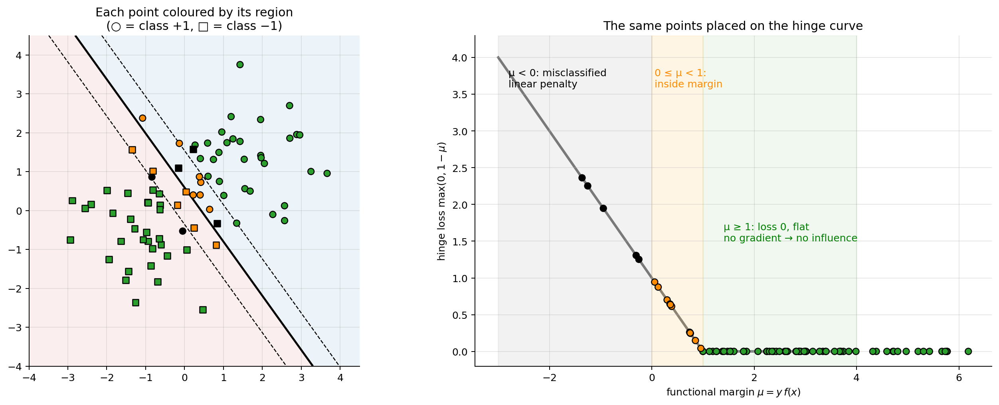
Hinge vs. logistic loss
Logistic regression can be written with \(\pm1\) labels too. With \(y\in\{-1,+1\}\) and \(P(y=+1\mid\mathbf{x}) = \sigma(f)\), where \(\sigma(z) = 1/(1+e^{-z})\), the symmetry \(1 - \sigma(z) = \sigma(-z)\) gives \(P(y\mid\mathbf{x}) = \sigma(yf)\) for both labels. The loss (minus the log-likelihood, note 02) is
\[ -\log\sigma(yf) = \log\big(1 + e^{-yf}\big) = \log\big(1 + e^{-\mu}\big), \]
which is just binary cross-entropy rewritten. Now both methods are “regularised loss of the margin \(\mu\)”, and they differ only in the shape of the loss (figure below, slide 24):
- Both are convex upper bounds (the logistic one after dividing by \(\ln 2\), i.e. using \(\log_2\)) of the 0–1 loss \(\mathbb{1}[\mu\le 0]\), which is what we really want to minimise but which has zero gradient almost everywhere.
- The logistic loss is never exactly 0: every point, however well classified, still pulls on \(\boldsymbol{\theta}\). The hinge loss is exactly 0 for \(\mu\ge1\), so only points on or inside the margin matter. That is where the sparsity of SVMs comes from.
- Logistic regression gives probabilities; the SVM gives only a score \(f(\mathbf{x})\) (section 23.2 shows why, and how to fix it).
mu = np.linspace(-3, 4, 500)
plt.figure(figsize=(7.5, 4.2))
plt.plot(mu, (mu <= 0).astype(float), "k", lw=2, label="0–1 loss")
plt.plot(mu, np.maximum(0, 1 - mu), lw=2.5, label=r"hinge $\max(0,1-\mu)$")
plt.plot(mu, np.log2(1 + np.exp(-mu)), lw=2, label=r"logistic $\log_2(1+e^{-\mu})$")
plt.axvspan(-3, 1, color="C0", alpha=0.07); plt.axvline(1, color="C0", ls=":", lw=1)
plt.text(1.1, 2.5, "hinge flat: no gradient,\npoint has no influence", fontsize=9)
plt.xlabel(r"functional margin $\mu = y\,f(x)$"); plt.ylabel("loss"); plt.ylim(-0.1, 3.5); plt.legend()
plt.title("Losses as a function of the margin"); plt.tight_layout(); plt.show()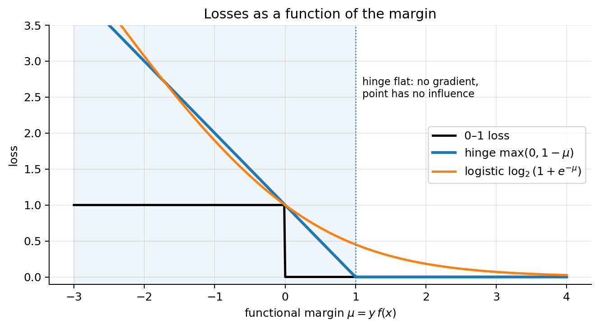
20. Training with sub-gradient descent, and support vectors
Sub-gradient. For a convex function with a kink, a sub-gradient at a point is the slope of any line that touches the function there and stays below it. Away from kinks it is the ordinary gradient. For one hinge term with respect to \(\boldsymbol{\theta}\) (the derivative of \(1 - \mu^{(i)} = 1 - y^{(i)}(\boldsymbol{\theta}^\top\mathbf{x}^{(i)} + \theta_0)\) is \(-y^{(i)}\mathbf{x}^{(i)}\)):
\[ \partial_{\boldsymbol{\theta}}\max\big(0, 1-\mu^{(i)}\big) \ni \begin{cases} -y^{(i)}\mathbf{x}^{(i)} & \mu^{(i)} < 1\\ \mathbf{0} & \mu^{(i)} > 1\\ \text{anything in between; we take } \mathbf{0} & \mu^{(i)} = 1 \end{cases} \qquad(\text{same with } \mathbf{x}^{(i)} \text{ replaced by } 1 \text{ for } \theta_0). \]
Let \(V = \{i : \mu^{(i)} < 1\}\) be the set of margin violators. A sub-gradient of \(J\) is
\[ \mathbf{g}_{\boldsymbol{\theta}} = \lambda\boldsymbol{\theta} - \frac{1}{m}\sum_{i\in V}y^{(i)}\mathbf{x}^{(i)}, \qquad g_{\theta_0} = -\frac{1}{m}\sum_{i\in V}y^{(i)}. \]
Update rule (slide 25), with step size \(\eta_t\): \[ \boldsymbol{\theta} \leftarrow \boldsymbol{\theta} - \eta_t\,\mathbf{g}_{\boldsymbol{\theta}} = \underbrace{(1 - \eta_t\lambda)\,\boldsymbol{\theta}}_{\text{weight decay: widens the margin}} + \underbrace{\frac{\eta_t}{m}\sum_{i\in V}y^{(i)}\mathbf{x}^{(i)}}_{\text{each violator pulls the boundary away from itself}}, \qquad \theta_0 \leftarrow \theta_0 + \frac{\eta_t}{m}\sum_{i\in V}y^{(i)} . \]
At the optimum the two forces balance. Points outside the margin exert no force at all.
Step size must decay. With a constant step the sub-gradient jumps every time a point crosses \(\mu=1\) and the boundary jitters forever. Use e.g. \(\eta_t = \eta_0/\sqrt{1+t}\) or \(1/(\lambda t)\) (the Pegasos algorithm, which uses one random example or a mini-batch per step and scales to millions of examples; scikit-learn’s SGDClassifier(loss="hinge") is of this kind).
def svm_objective(theta, theta0, X, y, lam):
mu = y * (X @ theta + theta0)
return np.mean(np.maximum(0, 1 - mu)) + lam / 2 * theta @ theta
def svm_subgradient_descent(X, y, lam, eta0=1.0, T=5000, theta=None, theta0=0.0, snapshots=()):
m, n = X.shape
theta = np.zeros(n) if theta is None else np.asarray(theta, float)
history, snaps = [], {}
for t in range(T):
if t in snapshots:
snaps[t] = (theta.copy(), theta0)
mu = y * (X @ theta + theta0)
V = mu < 1 # margin violators
g = lam * theta - (y[V, None] * X[V]).sum(0) / m
g0 = -y[V].sum() / m
eta = eta0 / np.sqrt(1 + t)
theta, theta0 = theta - eta * g, theta0 - eta * g0
history.append(svm_objective(theta, theta0, X, y, lam))
snaps[T] = (theta.copy(), theta0)
return theta, theta0, np.array(history), snaps
lam = 0.01
theta, theta0, hist, _ = svm_subgradient_descent(X, y, lam)
print(f"from scratch: theta = {theta.round(3)}, theta0 = {theta0:.3f}, J = {hist[-1]:.4f}")
sk = SVC(kernel="linear", C=1 / (lam * len(y))).fit(X, y) # lambda = 1 / (C m)
print(f"sklearn SVC : theta = {sk.coef_[0].round(3)}, theta0 = {sk.intercept_[0]:.3f}, "
f"J = {svm_objective(sk.coef_[0], sk.intercept_[0], X, y, lam):.4f}")from scratch: theta = [1.03 0.761], theta0 = -1.001, J = 0.0082
sklearn SVC : theta = [1.03 0.761], theta0 = -1.001, J = 0.0082fig, axes = plt.subplots(1, 3, figsize=(17, 5))
axes[0].plot(hist); axes[0].set_yscale("log"); axes[0].set_xlabel("iteration"); axes[0].set_title("Objective $J$ during sub-gradient descent")
plot_svm(axes[1], theta, theta0, X, y, "From scratch (hinge loss + sub-gradient)")
plot_svm(axes[2], sk.coef_[0], sk.intercept_[0], X, y, "scikit-learn SVC (dual QP)")
plt.tight_layout(); plt.show()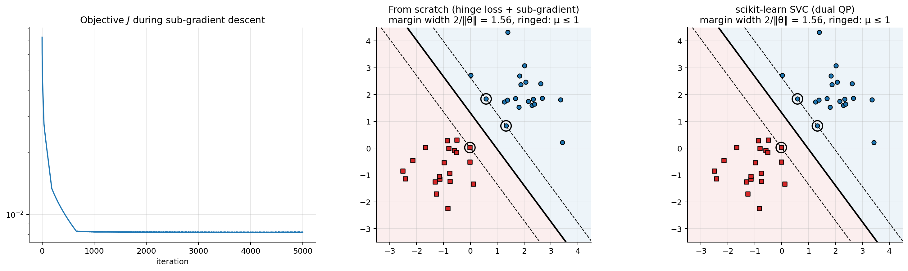
Watching it train. Start from a deliberately bad boundary. The top row shows the boundary, the bottom row every point placed on the hinge curve at its current margin. Early on, many points sit on the sloped part of the hinge and pull on \(\boldsymbol{\theta}\). Training moves them to the right. Once a point passes \(\mu = 1\) it falls onto the flat part and stops contributing. At the end only the points at the kink, the support vectors, are left.
steps = (0, 3, 30)
_, _, _, snaps = svm_subgradient_descent(X, y, lam, theta=[-1.0, 1.5], theta0=0.5, snapshots=steps)
fig, axes = plt.subplots(2, 4, figsize=(19, 8.6), gridspec_kw={"height_ratios": [1.25, 1]})
mu_grid = np.linspace(-6, 6, 400)
for col, (t, (th, th0)) in enumerate(sorted(snaps.items())):
plot_svm(axes[0, col], th, th0, X, y, f"iteration {t}")
mu_t = y * (X @ th + th0); viol = mu_t < 1 - 1e-3; kink = np.abs(mu_t - 1) <= 1e-3
ax = axes[1, col]
ax.plot(mu_grid, np.maximum(0, 1 - mu_grid), c="gray", lw=2)
ax.scatter(mu_t, np.maximum(0, 1 - mu_t), c=np.where(y > 0, POS, NEG), edgecolor="k", s=35, zorder=3)
ax.axvline(1, c="k", ls=":", lw=1); ax.set_xlim(-6, 6); ax.set_ylim(-0.3, 7)
ax.set_xlabel(r"$\mu = y f(x)$"); ax.set_title(f"{viol.sum()} points with μ < 1 pull on θ, {kink.sum()} at the kink")
plt.tight_layout(); plt.show()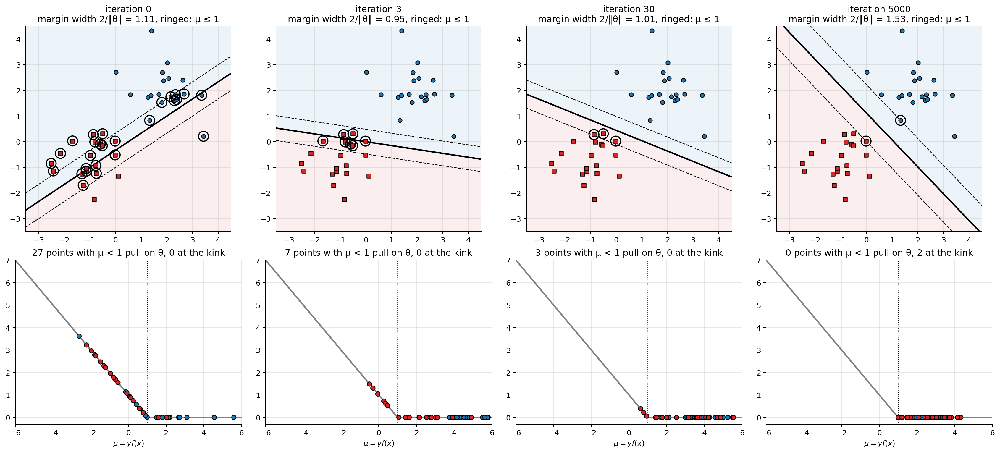
The effect of \(\lambda\) is the effect of \(C\)
Since \(\lambda = 1/(Cm)\), a small \(\lambda\) (large \(C\)) makes violations expensive and gives a narrow margin, and a large \(\lambda\) (small \(C\)) gives a wide margin with many violations. It is the same trade-off as in section 13, seen from the loss side.
Support vectors, from the loss side
Look at the update rule. It starts at \(\boldsymbol{\theta} = \mathbf{0}\) and only ever (a) rescales \(\boldsymbol{\theta}\) and (b) adds multiples of \(y^{(i)}\mathbf{x}^{(i)}\) for violators. So at every step, and at the optimum,
\[ \boldsymbol{\theta} = \sum_{i=1}^m\beta_i\,y^{(i)}\mathbf{x}^{(i)}, \qquad \beta_i \ne 0 \text{ only for points that were violators at some step} . \]
At the optimum this is the same statement as \(\boldsymbol{\theta} = \sum_i\alpha_iy^{(i)}\mathbf{x}^{(i)}\) from the dual (section 9), with \(\alpha_i \ne 0\) only for \(\mu^{(i)} \le 1\), reached from the loss side. Those points (on the margin, inside it, or misclassified) are the support vectors. The solution depends on them and nothing else:
- deleting or moving any other point (on its own side, outside the margin) does not change the classifier;
- this comes directly from the flat part of the hinge loss. Logistic regression has no flat part, so it uses every point;
- and because \(\boldsymbol{\theta}\) is a weighted sum of training points, \(f(\mathbf{x})\) only needs dot products with them. That is why kernels work.
# Adding points far from the margin does not change the SVM
Xfar = np.r_[X, rng.normal([4, 4], 0.4, (15, 2)), rng.normal([-2.8, -2.5], 0.3, (15, 2))]
yfar = np.r_[y, np.ones(15), -np.ones(15)]
s1 = SVC(kernel="linear", C=1e3).fit(X, y); s2 = SVC(kernel="linear", C=1e3).fit(Xfar, yfar)
fig, axes = plt.subplots(1, 2, figsize=(12, 5.5))
plot_svm(axes[0], s1.coef_[0], s1.intercept_[0], X, y, f"{len(y)} points", lim=(-4, 5.5))
plot_svm(axes[1], s2.coef_[0], s2.intercept_[0], Xfar, yfar, f"{len(yfar)} points (30 added far away)", lim=(-4, 5.5))
plt.tight_layout(); plt.show()
print("theta before:", s1.coef_[0].round(4), " after:", s2.coef_[0].round(4))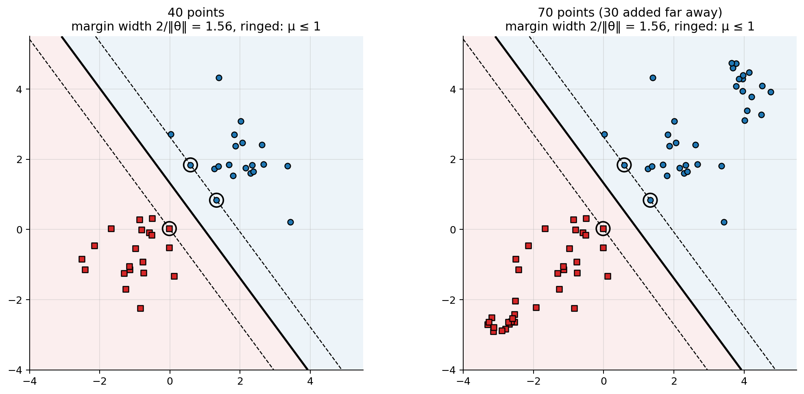
theta before: [1.0301 0.7606] after: [1.0302 0.7606]Part VI · More than two classes
21. Multiclass SVMs: one-vs-rest and one-vs-one
The SVM is a binary classifier. With \(K > 2\) classes there are two standard reductions (slide 27):
- One-vs-rest (OvR): train \(K\) binary SVMs, one per class, with \(y = +1\) for class \(k\) and \(-1\) for all the others. Winner takes all: predict \(\hat{y} = \arg\max_kf_k(\mathbf{x})\) with \(f_k(\mathbf{x}) = \boldsymbol{\theta}_k^\top\mathbf{x} + \theta_{0k}\). The argmax is needed because the signs alone can disagree: a point may be claimed by several classifiers (\(f_k > 0\) for more than one \(k\)) or by none. Two caveats: each classifier sees an imbalanced problem (one class against \(K - 1\)), and the scores of different classifiers are not calibrated against each other, so comparing them is a heuristic. (This is the same scheme as one-vs-rest logistic regression in note 04; softmax regression, which trains the \(K\) scores jointly, has no direct SVM counterpart in scikit-learn, although multiclass SVM formulations such as Crammer–Singer exist.)
- One-vs-one (OvO): one SVM for every pair of classes, \(\binom K2 = \frac{K(K-1)}{2}\) of them, each trained only on the examples of its two classes. Predict by majority vote. Votes can tie; scikit-learn then returns the tied class with the lowest index, unless
break_ties=True, which uses the summed confidences.
Which is cheaper? For a kernel SVM whose training time grows like \(m^p\) with \(p\) between 2 and 3 (section 23.3), with balanced classes:
- OvR: \(K\) problems of size \(m\), cost \(\approx K\,m^p\);
- OvO: \(\frac{K(K-1)}{2}\) problems of size \(\frac{2m}{K}\), cost \(\approx \frac{K(K-1)}{2}\big(\frac{2m}{K}\big)^p\); for \(p = 2\) this is \(\frac{K(K-1)}{2}\cdot\frac{4m^2}{K^2} = \frac{2(K-1)}{K}m^2 < 2m^2\).
So for \(K = 10\) and \(p = 2\), OvO trains 45 small SVMs for a total of about \(1.8\,m^2\), against \(10\,m^2\) for the 10 large SVMs of OvR. This is why scikit-learn’s SVC uses OvO internally (decision_function_shape="ovr", the default, only reshapes its output), while LinearSVC, whose cost is linear in \(m\), uses OvR.
The code compares both on the 10-class digits data (1,797 images of 8×8 pixels, bundled with scikit-learn), counts ties in the OvO votes, and draws the OvR regions on two iris features, shading where the raw signs are ambiguous.
from sklearn.datasets import load_digits, load_iris
from sklearn.multiclass import OneVsRestClassifier, OneVsOneClassifier
from sklearn.model_selection import train_test_split
from sklearn.preprocessing import StandardScaler
from sklearn.pipeline import make_pipeline
Xdg, ydg = load_digits(return_X_y=True)
Xdg_tr, Xdg_te, ydg_tr, ydg_te = train_test_split(Xdg, ydg, test_size=0.5, random_state=0, stratify=ydg)
base = make_pipeline(StandardScaler(), SVC(kernel="rbf", C=1))
for name, M in [("one-vs-rest", OneVsRestClassifier(base)), ("one-vs-one", OneVsOneClassifier(base))]:
M.fit(Xdg_tr, ydg_tr)
print(f"{name}: {len(M.estimators_)} binary SVMs, test accuracy {M.score(Xdg_te, ydg_te):.3f}")
ovo = make_pipeline(StandardScaler(), SVC(kernel="rbf", C=1, decision_function_shape="ovo")).fit(Xdg_tr, ydg_tr)
D_pairs = ovo.decision_function(Xdg_te) # one column per pair (i, j), i < j; > 0 is a vote for i
pairs = [(i, j) for i in range(10) for j in range(i + 1, 10)]
votes = np.zeros((len(Xdg_te), 10), int)
for k, (i, j) in enumerate(pairs):
votes[np.arange(len(Xdg_te)), np.where(D_pairs[:, k] > 0, i, j)] += 1
tied = (votes == votes.max(1, keepdims=True)).sum(1) > 1
print(f"one-vs-one: {tied.sum()} of {len(Xdg_te)} test digits have a tie in the vote; "
f"accuracy of the vote {np.mean(votes.argmax(1) == ydg_te):.3f}")
Xir, yir = load_iris(return_X_y=True); Xir = StandardScaler().fit_transform(Xir[:, 2:]) # petal length, width
ovr_ir = OneVsRestClassifier(SVC(kernel="linear", C=1)).fit(Xir, yir)
g1, g2 = np.meshgrid(np.linspace(-2, 2.2, 300), np.linspace(-2, 2.2, 300)); G = np.c_[g1.ravel(), g2.ravel()]
Fk = ovr_ir.decision_function(G); n_pos = (Fk > 0).sum(1)
print(f"iris grid: no classifier claims {np.mean(n_pos == 0):.0%} of the points, several claim {np.mean(n_pos > 1):.0%}")
fig, axes = plt.subplots(1, 2, figsize=(12, 4.8))
axes[0].contourf(g1, g2, Fk.argmax(1).reshape(g1.shape), levels=[-0.5, 0.5, 1.5, 2.5], colors=["C0", "C1", "C2"], alpha=0.25)
axes[0].set_title("OvR, winner takes all: argmax of the 3 scores")
axes[1].contourf(g1, g2, n_pos.reshape(g1.shape), levels=[-0.5, 0.5, 1.5, 3.5], colors=["0.6", "white", "0.3"], alpha=0.5)
axes[1].set_title("number of classifiers with f > 0\n(light grey: none, dark grey: several)")
for ax in axes:
for k in range(3):
ax.scatter(*Xir[yir == k].T, c=f"C{k}", edgecolor="k", s=18)
ax.set_xlabel("petal length (standardised)"); ax.set_ylabel("petal width (standardised)")
plt.tight_layout(); plt.show()one-vs-rest: 10 binary SVMs, test accuracy 0.970
one-vs-one: 45 binary SVMs, test accuracy 0.962
one-vs-one: 1 of 899 test digits have a tie in the vote; accuracy of the vote 0.973
iris grid: no classifier claims 51% of the points, several claim 0%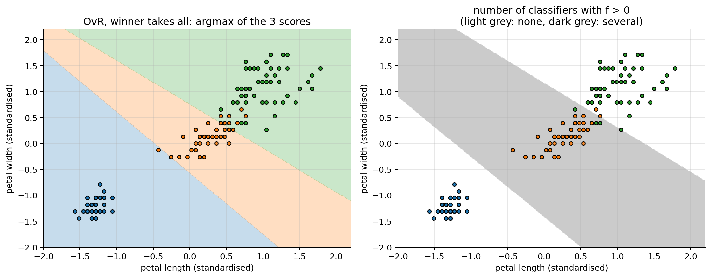
On digits both schemes reach similar accuracy with 10 and 45 classifiers, and only one test digit gets a tied vote. On the iris grid about half of the plane (51 %) is claimed by none of the three linear classifiers (light grey): there every score is negative, and the argmax still assigns the class whose score is least negative. That is why winner-takes-all, and not the raw signs, defines the OvR prediction.
Part VII · Using SVMs in practice
22. Assumptions: what they mean, how to check them, what to do
The SVM makes no probabilistic assumptions: there is no likelihood, no noise model, no standard errors or p-values, so the classic regression diagnostics of note 03 have no counterpart here. It is used almost only for prediction; the weights \(\boldsymbol{\theta}\) of a linear SVM can be read as feature relevances only when the features are standardised, and a kernel SVM has no \(\boldsymbol{\theta}\) to read at all. What the SVM does assume is geometric: that Euclidean distance between feature vectors means something, that the kernel can express the boundary, that it is a valid kernel, and that every margin violation costs the same. Like every method it also assumes that training and future data come from the same distribution (note 00), which is what makes cross-validated choices of \(C\) and \(\gamma\) meaningful.
| assumption | what goes wrong if it fails | how to check | what to do |
|---|---|---|---|
| 1. features on comparable scales | the margin, the penalty and RBF distances are dominated by the features with the largest numbers: worse predictions | variance shares \(\mathrm{Var}(x_j)/\sum_k\mathrm{Var}(x_k)\); CV accuracy with and without scaling | StandardScaler in a Pipeline; RobustScaler with outliers |
| 2. the kernel can express the boundary | underfitting: many margin violators, low training and CV accuracy, whatever \(C\) | fraction of points with \(\mu < 1\); train vs CV accuracy; linear vs RBF by CV | RBF (or polynomial) kernel, engineered features, another model |
| 3. the kernel is PSD (Mercer) | the dual is not convex: local optima, unstable fits, no margin interpretation | smallest eigenvalue of the training Gram matrix | a valid kernel (linear, polynomial with \(c \ge 0\), RBF); clip negative eigenvalues |
| 4. every error costs the same (balanced classes) | the boundary moves into the minority class: high accuracy, low minority recall | class counts, per-class recall, balanced accuracy | class_weight (per-class \(C\)), threshold on \(f\), resampling |
| 5. few mislabelled points and outliers near the boundary | with a large \(C\) a few wrong points hold the boundary: narrow margin, tilted boundary, worse test accuracy | slacks \(\xi^{(i)}\), the largest \(\alpha_i\), stability of \(\boldsymbol{\theta}\) across \(C\) | smaller \(C\) chosen by CV; inspect and fix high-slack labels |
22.1 Features on comparable scales
What it says. The numeric range of each feature reflects how much it should count in the distance \(\lVert\mathbf{x} - \mathbf{z}\rVert\) and in the penalty \(\frac12\lVert\boldsymbol{\theta}\rVert^2\). In practice: features standardised to mean 0 and variance 1 (or deliberately weighted).
Why it matters. Neither the margin nor the kernel is invariant to the units of the features.
- Linear SVM. Measure feature \(j\) in units \(c\) times smaller (e.g. euros → cents, \(c = 100\)): \(x_j' = c\,x_j\). The same classifier needs \(\theta_j' = \theta_j/c\) (so that \(\theta_j'x_j' = \theta_jx_j\)), and its penalty becomes \(\frac12\theta_j'^2 = \frac12\theta_j^2/c^2\). A feature with large numbers is therefore cheap to use and one with small numbers expensive: the optimum depends on the units, and the margin \(2/\lVert\boldsymbol{\theta}\rVert\) is measured mostly along the large-range features. (Unregularised least squares, by contrast, gives the same predictions in any units.)
- RBF kernel. \(\lVert\mathbf{x} - \mathbf{z}\rVert^2 = \sum_j(x_j - z_j)^2\). For two independent random rows of the data, \(\mathbb{E}\big[(x_j - z_j)^2\big] = \mathrm{Var}(x_j) + \mathrm{Var}(z_j) = 2\,\mathrm{Var}(x_j)\), so feature \(j\)’s share of the typical squared distance is \(\mathrm{Var}(x_j)/\sum_k\mathrm{Var}(x_k)\). A feature with 99 % of the variance is essentially the only one the kernel sees.
The damage is to predictions, and it is not repaired by tuning: \(\gamma\) can rescale all distances together, but not change the balance between features. There is no inference to spoil, but the weights of a linear SVM are only comparable across features if the features share a scale.
How to check. Compute the variance shares (from scratch, one line) and compare cross-validated accuracy with and without standardisation. Below: two features in the same units (holds) and the same data with \(x_2\) multiplied by 1000 (violated, like a premium in euros next to an age in decades), then the bundled wine data, whose 13 chemical measurements span very different ranges.
from sklearn.model_selection import cross_val_score, StratifiedKFold
from sklearn.datasets import load_wine
cv5 = StratifiedKFold(5, shuffle=True, random_state=0)
def variance_shares(X):
v = X.var(0) # E(x_j − z_j)² = 2 Var(x_j) for two random rows
return v / v.sum()
rng_s = np.random.default_rng(1)
Xs = np.r_[rng_s.normal([1, 1], 0.8, (100, 2)), rng_s.normal([-1, -1], 0.8, (100, 2))]
ys = np.r_[np.ones(100), -np.ones(100)]
Xs_big = Xs * np.array([1, 1000]) # the same points, x2 measured in units 1000 times smaller
for name, XX in [("same units", Xs), ("x2 × 1000", Xs_big)]:
raw = cross_val_score(SVC(kernel="rbf"), XX, ys, cv=cv5).mean()
std = cross_val_score(make_pipeline(StandardScaler(), SVC(kernel="rbf")), XX, ys, cv=cv5).mean()
print(f"{name:>10}: variance shares {variance_shares(XX).round(4)}, CV accuracy raw {raw:.3f}, standardised {std:.3f}")
Xw, yw = load_wine(return_X_y=True)
sh = variance_shares(Xw)
raw = cross_val_score(SVC(kernel="rbf"), Xw, yw, cv=cv5).mean()
std = cross_val_score(make_pipeline(StandardScaler(), SVC(kernel="rbf")), Xw, yw, cv=cv5).mean()
print(f"wine: largest variance share {sh.max():.3f} (feature {sh.argmax()}), std ratio max/min {Xw.std(0).max() / Xw.std(0).min():.0f}; "
f"CV accuracy raw {raw:.3f}, standardised {std:.3f}")
fig, axes = plt.subplots(1, 2, figsize=(12, 5))
g1, g2 = np.meshgrid(np.linspace(-3.5, 3.5, 300), np.linspace(-3.5, 3.5, 300)); G = np.c_[g1.ravel(), g2.ravel()]
for ax, (title, mdl) in zip(axes, [("RBF SVM on raw features (x2 × 1000)", SVC(kernel="rbf")),
("RBF SVM after StandardScaler", make_pipeline(StandardScaler(), SVC(kernel="rbf")))]):
mdl.fit(Xs_big, ys); F = mdl.decision_function(G * [1, 1000]).reshape(g1.shape)
ax.contourf(g1, g2, F, levels=[-1e9, 0, 1e9], colors=[NEG, POS], alpha=0.12); ax.contour(g1, g2, F, levels=[0], colors="k")
scatter_classes(ax, Xs, ys, s=15); ax.set_aspect("equal"); ax.set_title(title)
ax.set_xlabel("$x_1$"); ax.set_ylabel("$x_2$ (in thousands)")
plt.tight_layout(); plt.show()same units: variance shares [0.5298 0.4702], CV accuracy raw 0.985, standardised 0.985
x2 × 1000: variance shares [0. 1.], CV accuracy raw 0.895, standardised 0.985
wine: largest variance share 0.998 (feature 12), std ratio max/min 2530; CV accuracy raw 0.657, standardised 0.983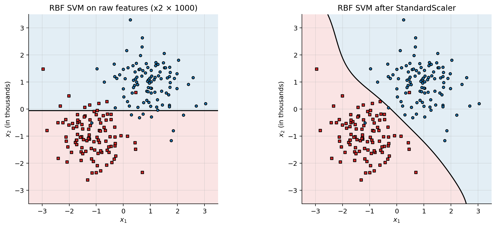
In the violated case \(x_2\) carries essentially all the variance, the raw RBF kernel only sees \(x_2\) (its boundary on the left is a horizontal line: \(x_1\) is ignored), and the cross-validated accuracy drops; standardising restores it. On the wine data the scale problem is even larger (one feature holds almost all the variance) and so is the gain.
What to do, in order of preference:
- Standardise inside a
Pipeline(make_pipeline(StandardScaler(), SVC())), so that the means and variances are learnt on the training folds only and applied unchanged to validation and test data (fitting the scaler on all the data before cross-validation leaks information). - With heavy outliers,
RobustScaler(median and interquartile range), so a few extreme values do not squash the bulk of the data. - For sparse data (e.g. word counts),
MaxAbsScaler, which scales without centring and keeps zeros as zeros. - If some features should count more (domain knowledge), multiply them by a weight after standardising: a deliberate choice rather than an accident of units.
22.2 The kernel can express the boundary
What it says. In the feature space of the kernel, the classes are linearly separable up to a few violations. For the linear kernel: the true boundary is close to a hyperplane in the original features.
Why it matters. The SVM finds the best boundary of the shape its kernel allows. If that shape is wrong, many points end up inside the margin or misclassified, each with \(\alpha_i = C\), and the model underfits (bias): more data does not help, and no value of \(C\) fixes it, because \(C\) only trades violations against margin width. Predictions suffer; there is nothing inferential to spoil.
How to check. From the decision values, compute the fraction of training points with \(\mu^{(i)} = y^{(i)}f(\mathbf{x}^{(i)}) < 1\) (margin violators): a large fraction together with a low training accuracy is the signature of a too-simple kernel. Then compare kernels by cross-validation. Below, a linear SVM on two Gaussian blobs (holds) and on the circles data (violated), then the RBF kernel on the circles (the fix).
from sklearn.datasets import make_blobs
Xbl, ybl = make_blobs(200, centers=[[-1, -1], [1, 1]], cluster_std=0.6, random_state=0); ybl = np.where(ybl == 1, 1.0, -1.0)
for name, XX, yy, kern in [("blobs, linear", Xbl, ybl, "linear"), ("circles, linear", Xc, yc, "linear"),
("circles, RBF", Xc, yc, "rbf")]:
s = SVC(kernel=kern, C=1).fit(XX, yy); mu = yy * s.decision_function(XX)
cvacc = cross_val_score(SVC(kernel=kern, C=1), XX, yy, cv=cv5).mean()
print(f"{name:>15}: margin violators {np.mean(mu < 1):.0%}, α = C for {(np.abs(s.dual_coef_) > 1 - 1e-6).sum():3d} points, "
f"train accuracy {s.score(XX, yy):.3f}, CV accuracy {cvacc:.3f}") blobs, linear: margin violators 7%, α = C for 13 points, train accuracy 0.995, CV accuracy 0.980
circles, linear: margin violators 100%, α = C for 200 points, train accuracy 0.625, CV accuracy 0.520
circles, RBF: margin violators 16%, α = C for 25 points, train accuracy 1.000, CV accuracy 1.000With the linear kernel on the circles every single point is a margin violator and the accuracy is close to chance; with the RBF kernel the violators drop to a small fraction and the accuracy is perfect.
What to do. (1) Use the RBF kernel as the default non-linear choice, with \(\gamma\) tuned (section 23.1). (2) Use a polynomial kernel when interactions of a known low degree are expected. (3) Engineer the missing features and keep a linear SVM (section 15: adding \(x_1^2 + x_2^2\) made the circles linearly separable), which stays fast and readable. (4) If no kernel works well on tabular data with many heterogeneous features, try tree ensembles (note 07).
22.3 The kernel is positive semi-definite
What it says. For every finite set of points the Gram matrix \(\mathbf{K}\) is symmetric PSD (section 18).
Why it matters. It makes the dual concave, so there is a single global optimum and the solver’s answer does not depend on its starting point or the order of the data; it also guarantees that the SVM is a maximum-margin classifier in some feature space, which is what all of Part I and IV relies on. With a non-PSD “kernel”, training still runs but it is a non-convex problem with no such guarantee; the damage is to predictions (and to reproducibility).
How to check. Compute the eigenvalues of the training Gram matrix (from scratch with np.linalg.eigvalsh). Values down to about \(-10^{-12}\lambda_{\max}\) are rounding errors; clearly negative eigenvalues prove the function is not a kernel. (The converse is weaker: a PSD matrix on one sample does not prove validity for all samples.) Below, the sorted spectra of the RBF kernel (holds) and of the sigmoid kernel (violated) on the circles data.
K_sig = np.tanh(Xc @ Xc.T) # sigmoid kernel, a = 1, c = 0
ev_rbf, ev_sig = np.linalg.eigvalsh(K_rbf), np.linalg.eigvalsh(K_sig)
lam_s, U_s = np.linalg.eigh(K_sig)
K_clip = (U_s * np.clip(lam_s, 0, None)) @ U_s.T # the nearest PSD matrix: negative eigenvalues set to 0
fig, axes = plt.subplots(1, 2, figsize=(12, 3.8))
for ax, ev, name in [(axes[0], ev_rbf, "RBF (γ = 2): all ≥ 0"), (axes[1], ev_sig, "sigmoid tanh(x·z): some < 0")]:
ax.plot(np.sort(ev)[::-1], "o-", ms=3); ax.axhline(0, color="k", lw=0.8); ax.set_yscale("symlog", linthresh=1e-2)
ax.set_xlabel("eigenvalue index (sorted)"); ax.set_ylabel("eigenvalue"); ax.set_title(name)
plt.tight_layout(); plt.show()
for name, KK in [("sigmoid", K_sig), ("sigmoid, clipped", K_clip), ("RBF", K_rbf)]:
s = SVC(kernel="precomputed", C=1).fit(KK, yc)
print(f"{name:>16}: smallest eigenvalue {np.linalg.eigvalsh(KK).min():8.3f}, training accuracy {s.score(KK, yc):.3f}")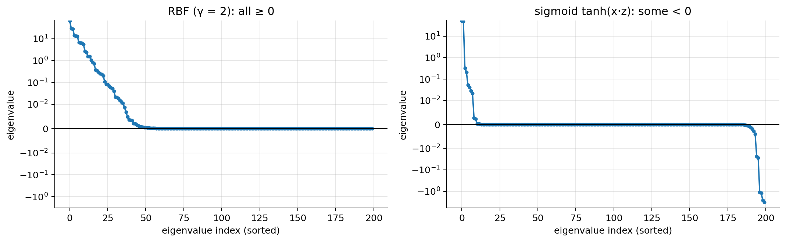
sigmoid: smallest eigenvalue -3.117, training accuracy 0.565
sigmoid, clipped: smallest eigenvalue -0.000, training accuracy 0.545
RBF: smallest eigenvalue -0.000, training accuracy 1.000What to do. (1) Use a kernel known to be valid (linear, polynomial with \(c \ge 0\), RBF, the Laplacian kernel \(e^{-\gamma\lVert\mathbf{x}-\mathbf{z}\rVert_1}\)) or build one with the rules of section 18. (2) If a domain-specific similarity is not PSD, replace its Gram matrix by the nearest PSD matrix (clip the negative eigenvalues to 0, as above) or shift it (\(\mathbf{K} + |\lambda_{\min}|\mathbf{I}\)), and pass it with kernel="precomputed"; new points then need a consistent treatment, which is awkward. (3) As the output shows, making the matrix PSD restores convexity but not usefulness: clipping the sigmoid kernel leaves a poor similarity, while the RBF kernel separates the circles perfectly. For a neural-network-like model, train a neural network instead.
22.4 Every error costs the same (balanced classes)
What it says. The primal charges the same price \(C\) per unit of slack for every point, so it trades errors of the two classes one for one. That is the right objective when the classes have comparable sizes and a false positive costs about as much as a false negative.
Why it matters. Suppose each class \(k\) has its own price \(C_k\):
\[ \min_{\boldsymbol{\theta},\theta_0,\boldsymbol{\xi}}\ \frac12\lVert\boldsymbol{\theta}\rVert^2 + \sum_iC_{y^{(i)}}\,\xi^{(i)} \quad\text{s.t. the same constraints.} \]
Repeating section 14 with \(C_{y^{(i)}}\) in place of \(C\), the stationarity condition in \(\xi^{(i)}\) becomes \(C_{y^{(i)}} - \alpha_i - \nu_i = 0\), so the dual is unchanged except for a per-class box \(0 \le \alpha_i \le C_{y^{(i)}}\). This is exactly what scikit-learn’s class_weight does: \(C_k = C\cdot w_k\), and class_weight="balanced" uses \(w_k = m/(K\,m_k)\), with \(m_k\) the size of class \(k\).
Now combine the box with the balance condition \(\sum_i\alpha_iy^{(i)} = 0\) of section 9, which says that the two classes pull with the same total force: \(\sum_{i:\,y=+1}\alpha_i = \sum_{i:\,y=-1}\alpha_i\). With a single \(C\) and a minority of \(m_+\) points, the left side is at most \(m_+C\), so the right side is too: at most \(m_+\) majority points can sit at \(\alpha_i = C\) (inside the margin or misclassified). Minority points have no such cap. The optimum therefore prefers to push the boundary into the minority class and sacrifice its points. With balanced weights, \(C_+ = \frac{Cm}{2m_+}\) and \(C_- = \frac{Cm}{2m_-}\), both classes have the same maximum total pull \(m_+C_+ = m_-C_- = \frac{Cm}{2}\), and the cap disappears. The damage is to predictions: overall accuracy looks fine because the majority dominates it, while the recall of the minority class (often the one that matters: fraudulent claims, large losses) collapses.
How to check. Class counts; per-class recall (computed from scratch below); balanced accuracy (the mean of the per-class recalls). Below, overlapping “legitimate” (class \(-1\)) and “fraudulent” (class \(+1\)) claims with made-up features, balanced (holds) and 95/5 (violated).
def claims_data(m_neg, m_pos, seed):
r = np.random.default_rng(seed)
X_ = np.r_[r.normal([0, 0], 1, (m_neg, 2)), r.normal([1.8, 1.8], 0.8, (m_pos, 2))]
return X_, np.r_[-np.ones(m_neg), np.ones(m_pos)]
def recall_per_class(y_true, y_pred):
return {k: np.mean(y_pred[y_true == k] == k) for k in (-1.0, 1.0)}
fits = {}
for name, (m_neg, m_pos), cw in [("balanced data", (200, 200), None), ("95/5 data", (380, 20), None),
("95/5, class_weight", (380, 20), "balanced")]:
Xi, yi = claims_data(m_neg, m_pos, seed=0)
Xi_tr, Xi_te, yi_tr, yi_te = train_test_split(Xi, yi, test_size=0.5, stratify=yi, random_state=0)
s = SVC(kernel="linear", C=1, class_weight=cw).fit(Xi_tr, yi_tr); p = s.predict(Xi_te)
rec = recall_per_class(yi_te, p); a_i = np.abs(s.dual_coef_[0]); ys_i = yi_tr[s.support_]
fits[name] = (s, Xi_tr, yi_tr)
print(f"{name:>19}: accuracy {np.mean(p == yi_te):.3f}, recall(−1) {rec[-1.0]:.3f}, recall(+1) {rec[1.0]:.3f}, "
f"balanced accuracy {(rec[-1.0] + rec[1.0]) / 2:.3f} | max α: +1 {a_i[ys_i > 0].max():.2f}, −1 {a_i[ys_i < 0].max():.2f}; "
f"Σα per class {a_i[ys_i > 0].sum():.2f}; class −1 points at the bound: {(a_i[ys_i < 0] > a_i[ys_i < 0].max() - 1e-9).sum()}")
fig, axes = plt.subplots(1, 3, figsize=(17, 5))
for ax, (name, (s, XX, yy)) in zip(axes, fits.items()):
plot_svm(ax, s.coef_[0], s.intercept_[0], XX, yy, name, lim=(-3.5, 4.5))
plt.tight_layout(); plt.show() balanced data: accuracy 0.900, recall(−1) 0.870, recall(+1) 0.930, balanced accuracy 0.900 | max α: +1 1.00, −1 1.00; Σα per class 18.68; class −1 points at the bound: 18
95/5 data: accuracy 0.955, recall(−1) 0.989, recall(+1) 0.300, balanced accuracy 0.645 | max α: +1 1.00, −1 1.00; Σα per class 6.11; class −1 points at the bound: 5
95/5, class_weight: accuracy 0.945, recall(−1) 0.947, recall(+1) 0.900, balanced accuracy 0.924 | max α: +1 10.00, −1 0.53; Σα per class 20.00; class −1 points at the bound: 37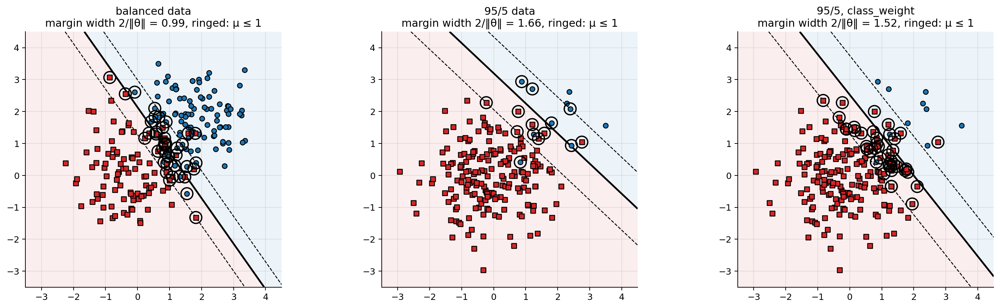
With 95/5 data the unweighted SVM keeps a high overall accuracy (0.955) but finds only 30 % of the fraudulent claims, and only 5 majority points sit at the bound \(C\), within the cap of \(m_+ = 10\) minority points in the training half, as derived. With class_weight="balanced" the training half has \(m = 200\) points, \(m_+ = 10\) and \(m_- = 190\), so the boxes become \(C_+ = \frac{1\cdot200}{2\cdot10} = 10\) and \(C_- = \frac{1\cdot200}{2\cdot190} = 0.53\) (the printed largest \(\alpha\) of each class). The cap on each class’s total pull rises from \(m_+C = 10\) to \(Cm/2 = 100\), the actual pull rises from 6.11 to 20.00, 37 majority points now sit at their bound, and the minority recall rises to 0.900 at a small cost in overall accuracy (0.945).
What to do, in order of preference: (1) class_weight: "balanced", or explicit business costs (if missing a fraudulent claim costs 20 times a false alarm, \(C_+/C_- = 20\)). (2) Move the threshold: keep the fit and predict \(+1\) when \(f(\mathbf{x}) > t\), with \(t\) chosen on validation data from a precision–recall curve (note 02); this is cheap and often equivalent in practice. (3) Resampling (undersample the majority or oversample the minority), which has a similar effect to weights at a higher cost. Whatever you do, evaluate with per-class recall, precision, balanced accuracy or PR-AUC, not accuracy.
22.5 Few mislabelled points and outliers near the boundary
What it says. The labels near the boundary are mostly right, and there are few atypical points there. Only the support vectors determine the solution (section 20), so the SVM effectively trusts a handful of points.
Why it matters. Each point’s pull on the boundary is its \(\alpha_i \le C\). That bound is a robustness property: the hinge loss grows only linearly, so its gradient is bounded, unlike the squared loss where one far point can pull without limit. But with a large \(C\) a single wrong point is allowed a large pull, and if the data stay separable with it, the (nearly) hard margin must accommodate it: the margin collapses and the boundary tilts. That is variance: the fit follows accidents of the sample, and test accuracy drops.
How to check. Two from-scratch diagnostics. (a) The slacks \(\xi^{(i)} = \max(0, 1 - \mu^{(i)})\) with a moderate \(C\): the points with the largest slack are the first ones whose labels to question. (b) The influence of each support vector: refit without it and measure how far the direction of \(\boldsymbol{\theta}\) turns. Only support vectors need testing, since removing any other point changes nothing (section 20), so this costs a handful of refits. Below, the separable data of Part I (holds), and the same data plus one point on class \(-1\)’s side wrongly labelled \(+1\) (violated), with a clean test set of 1,000 points to measure the damage.
x_bad = np.array([0.3, 0.0]) # a point on the class −1 side, labelled +1
X_bad, y_bad = np.r_[X, [x_bad]], np.r_[y, 1.0]
i_bad = len(y_bad) - 1
rng_t = np.random.default_rng(10)
X_test = np.r_[rng_t.normal([2, 2], 0.7, (500, 2)), rng_t.normal([-1, -0.5], 0.7, (500, 2))]
y_test = np.r_[np.ones(500), -np.ones(500)]
clean = SVC(kernel="linear", C=1e4).fit(X, y)
angle = lambda t1, t2: np.degrees(np.arccos(np.clip(t1 @ t2 / np.linalg.norm(t1) / np.linalg.norm(t2), -1, 1)))
print(f"clean data, C = 1e4: margin {2 / np.linalg.norm(clean.coef_[0]):.3f}, test accuracy {clean.score(X_test, y_test):.3f}")
fig, axes = plt.subplots(1, 3, figsize=(17, 5.6))
plot_svm(axes[0], clean.coef_[0], clean.intercept_[0], X, y, f"clean data, C = 1e4 (test acc {clean.score(X_test, y_test):.3f})")
for ax, C_ in zip(axes[1:], [1e4, 1.0]):
s = SVC(kernel="linear", C=C_).fit(X_bad, y_bad)
xi_b = np.maximum(0, 1 - y_bad * s.decision_function(X_bad))
turn = {} # leave-one-out: refit without each support vector
for i in s.support_:
keep = np.arange(len(y_bad)) != i
turn[i] = angle(SVC(kernel="linear", C=C_).fit(X_bad[keep], y_bad[keep]).coef_[0], s.coef_[0])
i_max = max(turn, key=turn.get)
plot_svm(ax, s.coef_[0], s.intercept_[0], X_bad, y_bad, f"one wrong label, C = {C_:g} (test acc {s.score(X_test, y_test):.3f})")
ax.scatter(*x_bad, marker="x", s=150, c="k", zorder=6)
print(f"one wrong label (point {i_bad}), C = {C_:g}: margin {2 / np.linalg.norm(s.coef_[0]):.3f}, "
f"θ turned {angle(s.coef_[0], clean.coef_[0]):.1f}° from the clean fit, test accuracy {s.score(X_test, y_test):.3f}")
print(f" largest slack: point {xi_b.argmax()} (ξ = {xi_b.max():.2f}); most influential support vector: "
f"point {i_max} (removing it turns θ by {turn[i_max]:.1f}°, the next one by {sorted(turn.values())[-2]:.1f}°)")
plt.tight_layout(); plt.show()clean data, C = 1e4: margin 1.562, test accuracy 0.996
one wrong label (point 40), C = 10000: margin 0.312, θ turned 30.6° from the clean fit, test accuracy 0.967
largest slack: point 23 (ξ = 0.00); most influential support vector: point 40 (removing it turns θ by 30.6°, the next one by 24.7°)
one wrong label (point 40), C = 1: margin 1.784, θ turned 0.0° from the clean fit, test accuracy 0.994
largest slack: point 40 (ξ = 1.48); most influential support vector: point 19 (removing it turns θ by 3.9°, the next one by 3.6°)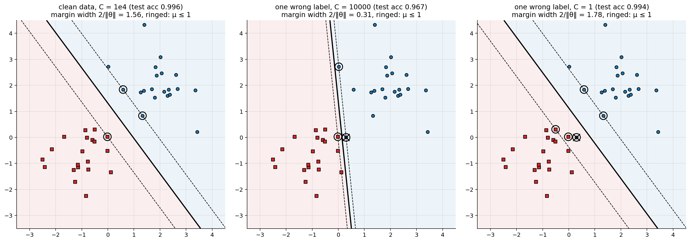
With \(C = 10^4\) the wrong point is fitted: the margin shrinks from 1.562 to 0.312, the boundary turns by 30.6°, and the clean test accuracy drops from 0.996 to 0.967. All slacks are then 0 (the data are still separable), so the slacks cannot expose the culprit, but the leave-one-out influence does: removing the wrong point turns \(\boldsymbol{\theta}\) the most (30.6°, straight back to the clean fit). Another support vector also moves it a lot (24.7°): with such a narrow margin the whole fit is fragile, and large leave-one-out turns are themselves the warning sign. With \(C = 1\) the wrong point is simply a violator with the largest slack (\(\xi = 1.48\), so it is the first point to inspect), no single support vector turns \(\boldsymbol{\theta}\) by more than 3.9°, the boundary keeps the clean direction and the test accuracy (0.994) is almost back to the clean level.
What to do. (1) Choose \(C\) by cross-validation (section 23.1): on noisy data it will usually come out moderate, which bounds the influence of any single point. (2) Inspect the highest-slack (or highest-\(\alpha\)) points: in real projects many of them are data errors (a claim coded with the wrong outcome, a unit mix-up), and fixing them helps every model. (3) Points far away on their correct side are harmless (section 20), so there is no need to remove “outliers” that are not near the boundary.
23. What to do when…
23.1 …you have to choose the kernel, \(C\) and \(\gamma\)
Symptom. The default SVC() is mediocre, or you do not know which values to try.
Why it happens. Both hyperparameters control complexity. \(C = 1/(\lambda m)\) is an inverse regularisation strength: small \(C\) means a wide margin with many support vectors (high bias), large \(C\) few violations and a narrow margin (high variance). \(\gamma = 1/(2\sigma^2)\) sets the width of the bumps: small \(\gamma\) makes every point similar to every other, and the boundary becomes nearly linear (bias); large \(\gamma\) makes \(K(\mathbf{x}^{(i)}, \mathbf{x}^{(j)}) \to 0\) for \(i \ne j\), the Gram matrix tends to the identity, and every training point gets its own bump: the training set is memorised (variance). The two interact: a larger \(\gamma\) (wigglier functions) can be compensated by a smaller \(C\) (more regularisation), so good settings lie along a diagonal ridge.
How to detect and fix it. Standardise, then search a logarithmic grid (the effects are multiplicative) with cross-validation, and compare training and validation accuracy to read under- and overfitting. Refine around the best cell if needed, and report the final performance on a test set that the search never saw (the best CV score is optimistically biased by the search itself).
from sklearn.model_selection import GridSearchCV
from sklearn.datasets import make_moons
Xg, yg = make_moons(300, noise=0.3, random_state=0)
Cs, gammas = np.logspace(-2, 3, 6), np.logspace(-2, 3, 6)
grid = GridSearchCV(SVC(kernel="rbf"), {"C": Cs, "gamma": gammas}, cv=cv5, return_train_score=True).fit(Xg, yg)
cv_acc = grid.cv_results_["mean_test_score"].reshape(len(Cs), len(gammas)) # rows: C, columns: γ
tr_acc = grid.cv_results_["mean_train_score"].reshape(len(Cs), len(gammas))
print(f"best: C = {grid.best_params_['C']:g}, γ = {grid.best_params_['gamma']:g}, CV accuracy {grid.best_score_:.3f}")
print(f"C = 0.01, γ = 0.01: train {tr_acc[0, 0]:.3f}, CV {cv_acc[0, 0]:.3f} | C = 1000, γ = 1000: train {tr_acc[-1, -1]:.3f}, CV {cv_acc[-1, -1]:.3f}")
fig, axes = plt.subplots(1, 2, figsize=(13, 4.8))
for ax, M, title in [(axes[0], tr_acc, "training accuracy"), (axes[1], cv_acc, "cross-validated accuracy")]:
im = ax.imshow(M, origin="lower", cmap="viridis", vmin=0.5, vmax=1)
for i in range(len(Cs)):
for j in range(len(gammas)):
ax.text(j, i, f"{M[i, j]:.2f}", ha="center", va="center", fontsize=8, color="w" if M[i, j] < 0.8 else "k")
ax.set_xticks(range(len(gammas))); ax.set_xticklabels([f"{g:g}" for g in gammas]); ax.set_xlabel("γ")
ax.set_yticks(range(len(Cs))); ax.set_yticklabels([f"{c:g}" for c in Cs]); ax.set_ylabel("C")
ax.set_title(title); ax.grid(False)
fig.colorbar(im, ax=axes, shrink=0.8)
plt.show()best: C = 0.1, γ = 10, CV accuracy 0.940
C = 0.01, γ = 0.01: train 0.782, CV 0.777 | C = 1000, γ = 1000: train 1.000, CV 0.677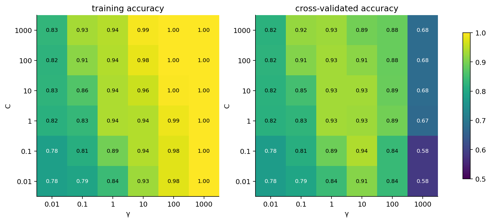
The training accuracy keeps rising towards the top-right corner (large \(C\) and \(\gamma\)), where it reaches 1, while the cross-validated accuracy peaks at \(C = 0.1\), \(\gamma = 10\) (0.940) and falls to 0.677 in that corner: overfitting. The bottom-left corner (small \(C\) and \(\gamma\)) is underfitting: both accuracies are low and close to each other.
23.2 …you need probabilities
Symptom. You need \(P(\text{claim is fraudulent}\mid\mathbf{x})\), for instance to rank claims or to compute an expected cost, but the SVM only gives a score \(f(\mathbf{x})\): unbounded, with a scale that depends on \(C\) and \(\gamma\).
Why it happens (the math). Fix a point \(\mathbf{x}\) with \(P(y = +1\mid\mathbf{x}) = p\) and ask which score \(f\) minimises the expected hinge loss \(\mathbb{E}\big[\max(0, 1 - yf)\big] = p\max(0, 1 - f) + (1 - p)\max(0, 1 + f)\).
- For \(-1 \le f \le 1\) both maxima are active: \(p(1 - f) + (1 - p)(1 + f) = 1 + f(1 - 2p)\), a straight line in \(f\).
- For \(f > 1\) it is \((1 - p)(1 + f)\), increasing in \(f\); for \(f < -1\) it is \(p(1 - f)\), increasing as \(f\) decreases. So the minimum lies in \([-1, 1]\).
- On \([-1, 1]\) the line has slope \(1 - 2p\): if \(p > \frac12\) it is minimised at \(f = +1\), if \(p < \frac12\) at \(f = -1\).
The ideal hinge-loss score is \(\mathrm{sign}(2p - 1)\): it tells which class is more likely and nothing about how likely. The log-loss, in contrast, is minimised by \(f = \log\frac{p}{1-p}\), which contains \(p\). So SVM scores are good for ranking and classifying, but they are not probabilities.
The fix: Platt scaling. Model the probability as a logistic function of the score,
\[ P(y = +1\mid\mathbf{x}) \approx \sigma\big(a\,f(\mathbf{x}) + b\big), \]
and fit \((a, b)\) by maximum likelihood. This is logistic regression with a single feature, \(f(\mathbf{x})\) (note 02): with targets \(t^{(i)}\) and \(p^{(i)} = \sigma(af^{(i)} + b)\), the loss is \(-\sum_i\big[t^{(i)}\log p^{(i)} + (1 - t^{(i)})\log(1 - p^{(i)})\big]\) and its gradient is \(\sum_i(p^{(i)} - t^{(i)})\,(f^{(i)}, 1)\), the same “prediction minus target times input” as always. Two details matter:
- Held-out scores. The scores must come from data the SVM did not train on (cross-validation). On its own training set the SVM pushes most points to \(|f| \ge 1\) on purpose, and an overfitted SVM separates the training set, so a sigmoid fitted there becomes too steep (in the separable limit the maximum-likelihood \(a\) is infinite): over-confident probabilities.
- Smoothed targets. Platt replaces the 0/1 targets by \(t_+ = \frac{m_+ + 1}{m_+ + 2}\) and \(t_- = \frac{1}{m_- + 2}\) (\(m_\pm\) = class sizes), a small prior that keeps \(a\) finite. scikit-learn does the same.
The code fits \((a, b)\) from scratch on training scores and on cross-validated scores of a somewhat overfitted RBF SVM, compares the test log-loss and Brier score with the naive \(\sigma(f)\), and checks the cross-validated fit against scikit-learn’s CalibratedClassifierCV.
from scipy.special import expit
from sklearn.model_selection import cross_val_predict
from sklearn.metrics import log_loss, brier_score_loss
from sklearn.calibration import CalibratedClassifierCV, calibration_curve
def platt_fit(f, y01):
m_pos, m_neg = y01.sum(), len(y01) - y01.sum()
t = np.where(y01 == 1, (m_pos + 1) / (m_pos + 2), 1 / (m_neg + 2)) # Platt's smoothed targets
def loss_grad(ab):
z = ab[0] * f + ab[1]
loss = np.sum(np.logaddexp(0, z) - t * z) # −Σ [t log σ(z) + (1 − t) log(1 − σ(z))]
return loss, np.array([np.sum((expit(z) - t) * f), np.sum(expit(z) - t)])
return minimize(loss_grad, [1.0, 0.0], jac=True, method="BFGS").x
Xp, yp = make_moons(600, noise=0.35, random_state=0)
Xp_tr, Xp_te, yp_tr, yp_te = train_test_split(Xp, yp, test_size=0.5, random_state=0)
svm_p = SVC(C=10, gamma=20).fit(Xp_tr, yp_tr)
f_tr, f_te = svm_p.decision_function(Xp_tr), svm_p.decision_function(Xp_te)
f_cv = cross_val_predict(SVC(C=10, gamma=20), Xp_tr, yp_tr, cv=cv5, method="decision_function")
print(f"SVM: train accuracy {svm_p.score(Xp_tr, yp_tr):.3f}, test accuracy {svm_p.score(Xp_te, yp_te):.3f}")
probs = {"naive σ(f)": expit(f_te)}
for name, f in [("Platt on training scores", f_tr), ("Platt on CV scores", f_cv)]:
a_p, b_p = platt_fit(f, yp_tr); probs[name] = expit(a_p * f_te + b_p)
print(f"{name}: a = {a_p:.3f}, b = {b_p:.3f}")
cal = CalibratedClassifierCV(SVC(C=10, gamma=20), method="sigmoid", cv=cv5, ensemble=False).fit(Xp_tr, yp_tr)
c0 = cal.calibrated_classifiers_[0].calibrators[0]
print(f"CalibratedClassifierCV: a = {-c0.a_:.3f}, b = {-c0.b_:.3f} (scikit-learn stores −a and −b)")
for name, p in probs.items():
print(f"{name:>25}: test log-loss {log_loss(yp_te, p):.3f}, Brier score {brier_score_loss(yp_te, p):.3f}")
plt.figure(figsize=(5.5, 4.5))
for name, p in probs.items():
frac, mean_p = calibration_curve(yp_te, p, n_bins=8)
plt.plot(mean_p, frac, "o-", label=name)
plt.plot([0, 1], [0, 1], "k:", label="perfect calibration")
plt.xlabel("mean predicted probability"); plt.ylabel("observed fraction of class 1"); plt.legend(fontsize=8)
plt.title("Reliability diagram on the test set"); plt.tight_layout(); plt.show()SVM: train accuracy 0.953, test accuracy 0.820
Platt on training scores: a = 3.297, b = 0.379
Platt on CV scores: a = 1.780, b = 0.132
CalibratedClassifierCV: a = 1.780, b = 0.132 (scikit-learn stores −a and −b)
naive σ(f): test log-loss 0.471, Brier score 0.148
Platt on training scores: test log-loss 0.565, Brier score 0.152
Platt on CV scores: test log-loss 0.449, Brier score 0.140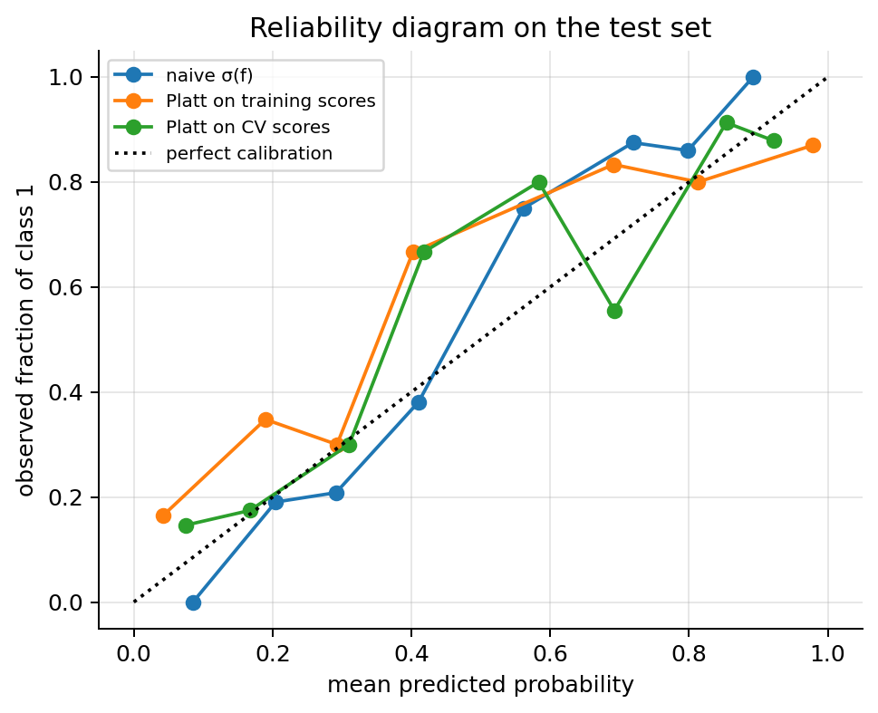
The sigmoid fitted on training scores is steeper (larger \(a\)) and has the worst test log-loss of the three; the one fitted on cross-validated scores has the best log-loss and Brier score, and matches CalibratedClassifierCV to the printed digits. In scikit-learn, SVC(probability=True) runs this procedure internally with its own 5-fold split (slower, and its predict_proba can occasionally disagree with predict near the boundary); CalibratedClassifierCV makes the procedure explicit. With a lot of data, isotonic regression (method="isotonic") is a more flexible alternative; if probabilities are the main goal, logistic regression or gradient boosting with log-loss may be the better model in the first place.
23.3 …the training set is large
Symptom. SVC takes minutes or hours, or runs out of memory, as \(m\) grows into the tens of thousands.
Why it happens. The kernel matrix has \(m^2\) entries: at 8 bytes each, \(8m^2\) bytes. libsvm never stores it whole; it computes rows on demand and caches them (section 12), so the cost moves to time: the number of SMO steps grows with \(m\) and each step is \(O(m)\), which gives roughly \(O(m^2)\) to \(O(m^3)\) training. Prediction costs one kernel evaluation per support vector, and with overlapping classes every margin violator is a support vector, so the number of support vectors grows in proportion to \(m\) too.
How to detect it. Time the fit on growing subsamples and look at the growth rate: doubling \(m\) roughly doubles the time of a linear method (exponent near 1) and multiplies that of a kernel SVM by 3 or more (exponent well above 1). The code times SVC (RBF), LinearSVC (liblinear: coordinate descent on the dual of the linear SVM, linear cost per pass) and SGDClassifier(loss="hinge") (sub-gradient steps as in section 20) and fits the exponent \(p\) in time \(\propto m^p\) between the smallest and the largest size. Timings vary from run to run; the exponents are the point.
import time
from sklearn.svm import LinearSVC
from sklearn.linear_model import SGDClassifier, LogisticRegression
from sklearn.datasets import make_classification
for m_ in [10**4, 10**5, 10**6]:
print(f"m = {m_:>9,}: kernel matrix 8 m² bytes = {8 * m_ ** 2 / 1e9:>9,.1f} GB")
sizes, times = [1000, 2000, 4000, 8000], []
for m_ in sizes:
Xt, yt = make_classification(m_, 20, n_informative=10, random_state=0); Xt = StandardScaler().fit_transform(Xt)
row = []
for mdl in [SVC(kernel="rbf"), LinearSVC(), SGDClassifier(loss="hinge", random_state=0)]:
t0 = time.perf_counter(); mdl.fit(Xt, yt); row.append(time.perf_counter() - t0)
times.append(row)
times = np.array(times)
for k, name in enumerate(["SVC (RBF)", "LinearSVC", "SGDClassifier"]):
p_fit = np.log(times[-1, k] / times[0, k]) / np.log(sizes[-1] / sizes[0])
print(f"{name:>14}: fit times {np.round(times[:, k], 4)} s → time ∝ m^{p_fit:.1f}")m = 10,000: kernel matrix 8 m² bytes = 0.8 GB
m = 100,000: kernel matrix 8 m² bytes = 80.0 GB
m = 1,000,000: kernel matrix 8 m² bytes = 8,000.0 GB
SVC (RBF): fit times [0.0104 0.0308 0.0978 0.3737] s → time ∝ m^1.7
LinearSVC: fit times [0.0009 0.0015 0.0034 0.0063] s → time ∝ m^0.9
SGDClassifier: fit times [0.0043 0.0079 0.0134 0.0309] s → time ∝ m^1.0What to do, in order of preference: (1) if a linear boundary is good enough (often the case with many features, e.g. text), use LinearSVC or SGDClassifier(loss="hinge"), which scale linearly in \(m\); (2) to keep a non-linear boundary, approximate the kernel with explicit random features (Nystroem or RBFSampler in sklearn.kernel_approximation) followed by a linear SVM, a good trade-off from about \(10^5\) examples; (3) tune \(C\) and \(\gamma\) on a subsample, then fit once on all the data; (4) for large tabular data, gradient boosting (note 07) is usually both faster and more accurate.
23.4 …you wonder whether logistic regression would do as well
Symptom. A linear SVM and logistic regression give similar accuracy, and you must pick one.
Why they are so similar (the math). scikit-learn’s LogisticRegression(C=C) and SVC(kernel="linear", C=C) minimise the same template,
\[ \frac12\lVert\boldsymbol{\theta}\rVert^2 + C\sum_{i=1}^m\ell(\mu^{(i)}), \qquad \ell_{\text{log}}(\mu) = \log(1 + e^{-\mu}),\quad \ell_{\text{hinge}}(\mu) = \max(0, 1 - \mu), \]
so the same \(C\) means the same regularisation strength (\(\lambda = 1/(mC)\) in the averaged form of section 19), and only the shape of the loss differs. The gradient of \(C\sum_i\ell(\mu^{(i)})\) with respect to \(\boldsymbol{\theta}\) is \(C\sum_i\ell'(\mu^{(i)})\,y^{(i)}\mathbf{x}^{(i)}\) (chain rule, \(\partial\mu^{(i)}/\partial\boldsymbol{\theta} = y^{(i)}\mathbf{x}^{(i)}\)), so each point pulls with weight \(-\ell'(\mu^{(i)})\):
- hinge: \(-\ell'(\mu) = \mathbb{1}[\mu < 1]\) (full weight inside the margin, zero outside);
- log-loss: \(-\ell'(\mu) = \frac{e^{-\mu}}{1 + e^{-\mu}} = \sigma(-\mu)\) (derivative of \(\log(1 + e^{-\mu})\)), a smooth version of the same step that never reaches zero.
Logistic regression is a “soft” SVM: the points that matter most are the same, those near or across the boundary.
svm_l = SVC(kernel="linear", C=1).fit(Xo, yo)
lr_l = LogisticRegression(C=1).fit(Xo, yo)
print(f"linear SVM θ = {svm_l.coef_[0].round(3)}, LR θ = {lr_l.coef_[0].round(3)}; "
f"angle between them {angle(svm_l.coef_[0], lr_l.coef_[0]):.2f}°")
rng_v = np.random.default_rng(5)
Xo_te = np.r_[rng_v.normal([1.2, 1.2], 1.0, (1000, 2)), rng_v.normal([-0.8, -0.6], 1.0, (1000, 2))]
yo_te = np.r_[np.ones(1000), -np.ones(1000)]
print(f"test accuracy: SVM {svm_l.score(Xo_te, yo_te):.3f}, LR {lr_l.score(Xo_te, yo_te):.3f}")
mu = np.linspace(-3, 4, 400)
plt.figure(figsize=(6.5, 3.6))
plt.plot(mu, (mu < 1).astype(float), lw=2.5, label=r"hinge: $\mathbb{1}[\mu<1]$")
plt.plot(mu, expit(-mu), lw=2.5, label=r"log-loss: $\sigma(-\mu)$")
plt.xlabel(r"functional margin $\mu = y\,f(x)$"); plt.ylabel("weight of the point in the gradient")
plt.legend(); plt.title("How hard each point pulls on θ"); plt.tight_layout(); plt.show()linear SVM θ = [1.468 1.055], LR θ = [1.84 1.365]; angle between them 0.88°
test accuracy: SVM 0.906, LR 0.906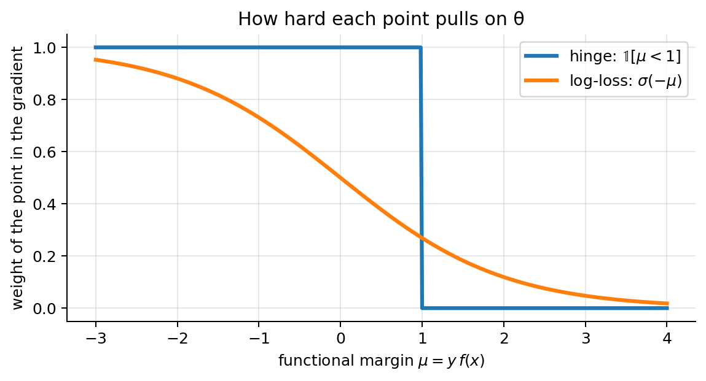
Which to choose. Logistic regression if you need probabilities or odds-ratio interpretations of the coefficients (note 02); either one for a large linear problem (same cost, same accuracy); an SVM when you want a kernel, or a model that depends only on the points near the boundary.
24. Summary
| step | idea | formula |
|---|---|---|
| 1 · hyperplane | boundary is \(f = 0\), side is the sign | \(\hat{y} = \mathrm{sign}(\boldsymbol{\theta}^\top\mathbf{x} + \theta_0)\) |
| 2 · projection | dot product = shadow on \(\boldsymbol{\theta}\) ⇒ distance | \(r = f(\mathbf{x})/\lVert\boldsymbol{\theta}\rVert\) |
| 3 · scale | closest points at \(f = \pm1\) | \(y^{(i)}f(\mathbf{x}^{(i)}) \ge 1\), equality for SVs |
| 4 · margin | project \(\mathbf{x}_+, \mathbf{x}_-\) and subtract | \(d = 2/\lVert\boldsymbol{\theta}\rVert\) |
| 5 · optimise | widest margin = shortest \(\boldsymbol{\theta}\) | \(\min \frac12\lVert\boldsymbol{\theta}\rVert^2\) s.t. \(y^{(i)}f(\mathbf{x}^{(i)})\ge1\) |
| duality | weak always, strong by Slater (affine constraints) | \(D(\boldsymbol{\alpha}) \le J(\tilde{\boldsymbol{\theta}})\), gap \(0\) at the optimum |
| KKT | stationarity, feasibility, complementary slackness | \(\alpha_i\big(y^{(i)}f(\mathbf{x}^{(i)}) - 1 + \xi^{(i)}\big) = 0\) |
| dual | Lagrange; only active constraints count | \(\boldsymbol{\theta} = \sum_i\alpha_iy^{(i)}\mathbf{x}^{(i)}\), \(\alpha_i > 0\) only for SVs |
| soft margin | slacks with price \(C\) | \(0 \le \alpha_i \le C\) |
| intercept | average over margin SVs | \(\theta_0 = \mathrm{mean}_{0<\alpha_s<C}\big(y^{(s)} - \sum_i\alpha_iy^{(i)}K(\mathbf{x}^{(i)}, \mathbf{x}^{(s)})\big)\) |
| kernels | data enter only via dot products | \(\mathbf{x}^\top\mathbf{z} \to K(\mathbf{x}, \mathbf{z})\), \(K\) PSD (Mercer) |
| hinge loss | eliminate the slacks | \(J = \frac1m\sum_i\max(0, 1-\mu^{(i)}) + \frac\lambda2\lVert\boldsymbol{\theta}\rVert^2\), \(\lambda = \frac{1}{Cm}\) |
- \(J\) is convex but not differentiable → sub-gradient descent with decaying step (primal), or a QP solver such as SMO (dual).
- Only support vectors (\(\mu\le1\)) determine the solution: the flat part of the hinge, the zero multipliers of the dual, and the inactive constraints of step 5 are three views of the same fact.
| Logistic regression | Linear SVM | |
|---|---|---|
| Loss of the margin \(\mu\) | \(\log(1+e^{-\mu})\) | \(\max(0, 1-\mu)\) |
| Regulariser | L2 (usually) | L2 (always: it is the margin) |
| Which points matter | all (weight \(\sigma(-\mu)\)) | support vectors only (weight \(\mathbb{1}[\mu<1]\)) |
| Output | calibrated probability | score / class (Platt scaling for probabilities) |
| Solver | GD, Newton, L-BFGS | sub-gradient (primal) or QP/SMO (dual) |
Review (slide 26). Pros: kernels give flexible, non-linear boundaries while training stays a convex problem with one global optimum; the maximum margin gives good results even on small and medium datasets; the model is sparse, it only keeps the support vectors. Cons: kernel training is slow on big data (roughly \(O(m^2)\)–\(O(m^3)\); beyond about \(10^5\) examples use a linear SVM or a kernel approximation); prediction with kernels costs one \(K\) per support vector; binary only (one-vs-rest or one-vs-one for more classes); no probabilities out of the box (Platt scaling); the features must be scaled; \(C\) and \(\gamma\) must be tuned by cross-validation. For regression, the same ideas give support vector regression (SVR, with an \(\varepsilon\)-insensitive loss instead of the hinge).
Lab: Support Vector Machines: maximising the margin, fitting an SVM with scikit-learn, support vectors, the kernel trick, soft margins and tuning \(C\) and \(\gamma\) with cross-validation.